Capítulo 6Inferência por Verossimilhança
Esboço do capítulo
- Seção 1 A Função de Verossimilhança
- Seção 2 Estimação por Máxima Verossimilhança
- Seção 3 Inferências Baseadas no EMV
- Seção 4 Métodos Livres de Distribuição
- Seção 5 Comportamento do EMV em Grandes Amostras (Avançado)
Neste capítulo, discutimos algumas das abordagens mais básicas da inferência. Em essência, queremos que nossas inferências dependam apenas do modelo \(\{P_\theta : \theta \in \negrito{\Omega}\}\) e dos dados \(s\). Esses métodos são muito mínimos, no sentido de que exigem poucas suposições. Embora tenham sucesso em certos problemas, parece que a estrutura adicional do Capítulo 7 ou do Capítulo 8 é necessária em situações mais complexas.
A função de verossimilhança1 é um dos conceitos mais básicos da inferência estatística. Teorias inteiras de inferência foram construídas com base nela. Discutimos os métodos de verossimilhança2 nas Seções 6.1, 6.2, 6.3 e 6.5. Na Seção 6.4, apresentamos alguns métodos de inferência livres de distribuição. Eles não são exatamente exemplos de métodos de verossimilhança, mas seguem a mesma ideia básica de fazer as inferências dependerem do menor número possível de suposições.
6.1 A Função de Verossimilhança
As inferências por verossimilhança se baseiam apenas nos dados \(s\) e no modelo \(\{P_\theta : \theta \in \negrito{\Omega}\}\) — o conjunto das medidas de probabilidade possíveis para o sistema sob investigação. A partir desses ingredientes, obtemos a entidade básica da inferência por verossimilhança, a saber, a função de verossimilhança.
Para motivar a definição da função de verossimilhança, suponha que temos um modelo estatístico em que cada \(P_\theta\) é discreta, dada pela função de probabilidade3 \(f_\theta\). Tendo observado \(s\), considere a função \(L(\cdot \mid s)\) definida no espaço paramétrico4 \(\negrito{\Omega}\) e com valores em \(R^1\), dada por \[ L(\theta \mid s) = f_\theta(s). \] Chamamos \(L(\cdot \mid s)\) de função de verossimilhança determinada pelo modelo e pelos dados. O valor \(L(\theta \mid s)\) é chamado de verossimilhança de \(\theta\). Observe que, na função de verossimilhança, estamos fixando os dados e variando o valor do parâmetro.
Vemos que \(f_\theta(s)\) é simplesmente a probabilidade de obter os dados \(s\) quando o verdadeiro valor do parâmetro é \(\theta\). Isso impõe uma ordenação de crença em \(\negrito{\Omega}\), a saber: acreditamos em \(\theta_1\) como o verdadeiro valor de \(\theta\) mais do que em \(\theta_2\) sempre que \(f_{\theta_1}(s) > f_{\theta_2}(s)\). Isso porque a desigualdade diz que os dados são mais prováveis sob \(\theta_1\) do que sob \(\theta_2\). Somos indiferentes entre \(\theta_1\) e \(\theta_2\) sempre que \(f_{\theta_1}(s) = f_{\theta_2}(s)\). A inferência por verossimilhança sobre \(\theta\) se baseia nessa ordenação.
É importante lembrar a interpretação correta de \(L(\theta \mid s)\). O valor \(L(\theta \mid s)\) é a probabilidade de \(s\) dado que \(\theta\) é o verdadeiro valor — não é a probabilidade de \(\theta\) dado que observamos \(s\). Além disso, é possível que o valor de \(L(\theta \mid s)\) seja muito pequeno para todo valor de \(\theta\). Portanto, não é o valor efetivo da verossimilhança que nos diz quanto suporte dar a um \(\theta\) específico, e sim o seu valor em relação às verossimilhanças de outros valores possíveis do parâmetro.
Suponha que \(S = \{1, 2, \ldots\}\) e que o modelo estatístico é \(\{P_\theta : \theta \in \{1, 2\}\}\), em que \(P_1\) é a distribuição uniforme5 nos inteiros \(\{1, \ldots, 10^3\}\) e \(P_2\) é a distribuição uniforme em \(\{1, \ldots, 10^6\}\). Suponha ainda que observamos \(s = 10\). Então \(L(1 \mid 10) = 1/10^3\) e \(L(2 \mid 10) = 1/10^6\). Os dois valores são bem pequenos, mas observe que a verossimilhança dá a \(\theta = 1\) um suporte mil vezes maior que o que dá a \(\theta = 2\).
Por isso, estamos interessados apenas nas razões de verossimilhança \[ \frac{L(\theta_1 \mid s)}{L(\theta_2 \mid s)} \] para \(\theta_1, \theta_2 \in \negrito{\Omega}\) quando se trata de determinar inferências para \(\theta\) com base na função de verossimilhança. Isso implica que qualquer função que seja um múltiplo positivo de \(L(\cdot \mid s)\), isto é, \(L^*(\cdot \mid s) = cL(\cdot \mid s)\) para algum \(c > 0\) fixo, serve igualmente bem como função de verossimilhança. Dizemos que duas verossimilhanças são equivalentes se forem proporcionais dessa maneira. Em geral, chamamos qualquer múltiplo positivo de \(L(\cdot \mid s)\) de função de verossimilhança.
Suponha que uma moeda é lançada \(n = 10\) vezes e que se observam \(s = 4\) caras. Sem conhecimento algum sobre a probabilidade de obter cara num único lançamento, o modelo estatístico adequado para os dados é o modelo Binomial\((10, \theta)\), com \(\theta \in \negrito{\Omega} = [0, 1]\). A função de verossimilhança é dada por \begin{equation} L(\theta \mid 4) = \binom{10}{4} \theta^4 (1 - \theta)^6, \tag{6.1.1} \end{equation} cujo gráfico está na Figura 6.1.1.
Essa verossimilhança atinge o pico em \(\theta = 0{,}4\) e vale \(0{,}2508\) nesse ponto. Vamos examinar usos da verossimilhança para estimar o \(\theta\) desconhecido e avaliar a precisão da estimativa6. Grosso modo, porém, isso se baseia em onde a verossimilhança atinge o máximo e em quão dispersa ela é em torno do pico.
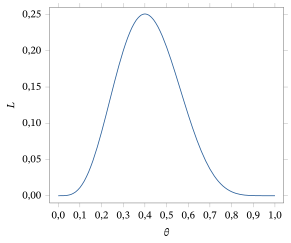
Há uma gama de abordagens para obter inferências por meio da função de verossimilhança. Num extremo está o princípio da verossimilhança7.
Princípio da verossimilhança: se duas combinações de modelo e dados produzem funções de verossimilhança equivalentes, então as inferências sobre o parâmetro desconhecido devem ser as mesmas.
Esse princípio determina que tudo o que quisermos dizer sobre o valor desconhecido de \(\theta\) tem de se basear apenas em \(L(\cdot \mid s)\). Para muitos estatísticos, isso é visto como uma restrição severa demais. Considere o exemplo a seguir.
Suponha que uma moeda é lançada em lançamentos independentes até que se obtenham quatro caras, e que o número de coroas observadas até a quarta cara é \(s = 6\). Então \(s\) tem distribuição Binomial Negativa\((4, \theta)\), e a verossimilhança especificada pelos dados observados é \[ L(\theta \mid 6) = \binom{9}{6} \theta^4 (1 - \theta)^6. \] Observe que essa função de verossimilhança é um múltiplo positivo de (6.1.1).
Assim, o princípio da verossimilhança afirma que essas duas combinações de modelo e dados devem produzir as mesmas inferências sobre o \(\theta\) desconhecido. Na prática, o princípio da verossimilhança diz que devemos ignorar o fato de que os dados foram obtidos de maneiras totalmente diferentes. Se, porém, levarmos em conta características adicionais do modelo, além da função de verossimilhança, verifica-se que podemos derivar inferências diferentes para as duas situações. Em particular, a avaliação de um valor hipotético \(\theta = \theta_0\) pode ser feita de maneiras diferentes quando se leva em conta o método de amostragem. Muitos estatísticos acreditam que essa informação adicional deve ser usada ao derivar inferências.
Como exemplo de inferência derivada de uma função de verossimilhança, considere um conjunto da forma \[ C(s) = \{\theta : L(\theta \mid s) \ge c\}, \] para algum \(c \ge 0\). O conjunto \(C(s)\) é chamado de região de verossimilhança. Ele contém todos os valores de \(\theta\) cuja verossimilhança é pelo menos \(c\). Uma região de verossimilhança, para algum \(c\), parece um conjunto sensato a indicar como possivelmente contendo o verdadeiro valor de \(\theta\). Afinal, se \(\theta^* \notin C(s)\), então \(L(\theta^* \mid s) < L(\theta \mid s)\) para todo \(\theta \in C(s)\) e, portanto, \(\theta^*\) não é tão bem sustentado pelos dados observados quanto qualquer valor de \(C(s)\). O tamanho de \(C(s)\) pode então ser tomado como uma medida de quão incertos estamos sobre o verdadeiro valor de \(\theta\).
Resta-nos, porém, o problema de escolher um valor adequado para \(c\) e, como o Exemplo 6.1.1 parece indicar, a própria verossimilhança não sugere uma maneira natural de fazer isso. Na Seção 6.3.2, discutiremos um método de escolha de \(c\) que se baseia em propriedades adicionais do modelo, além da função de verossimilhança.
Até aqui, nesta seção, supusemos que nossos modelos estatísticos são compostos de distribuições discretas. A definição da verossimilhança é bastante natural, pois \(L(\theta \mid s)\) é simplesmente a probabilidade de \(s\) ocorrer quando \(\theta\) é o verdadeiro valor. Essa interpretação claramente não está disponível de forma direta, porém, quando temos um modelo contínuo, porque todo ponto dos dados tem probabilidade 0 de ocorrer. Imagine, no entanto, que \(f_{\theta_1}(s) > f_{\theta_2}(s)\) e que \(s \in R^1\). Então, supondo a continuidade de toda \(f_\theta\) em \(s\), temos8 \[ P_{\theta_1}(V) = \int_a^b f_{\theta_1}(s)\, dx > P_{\theta_2}(V) = \int_a^b f_{\theta_2}(s)\, dx \] para todo intervalo \(V = (a, b)\) que contenha \(s\) e seja suficientemente pequeno. Interpretamos isso como significando que a probabilidade de \(s\) ocorrer quando \(\theta_1\) é verdadeiro é maior que a probabilidade de \(s\) ocorrer quando \(\theta_2\) é verdadeiro. Assim, os dados \(s\) sustentam \(\theta_1\) mais do que \(\theta_2\). Uma interpretação semelhante vale quando \(s \in R^n\) para \(n > 1\) e \(V\) é uma região que contém \(s\).
Portanto, no caso contínuo, definimos novamente a função de verossimilhança por \(L(\theta \mid s) = f_\theta(s)\) e interpretamos a ordenação que ela impõe aos valores de \(\theta\) exatamente como fazemos no caso discreto.9 Novamente, duas verossimilhanças serão consideradas equivalentes se uma for um múltiplo positivo da outra.
Considere agora um exemplo muito importante.
Suponha que \((x_1, \ldots, x_n)\) é uma amostra observada independente e identicamente distribuída (i.i.d.) de uma distribuição \(N(\theta, \sigma_0^2)\), em que \(\theta \in \negrito{\Omega} = R^1\) é desconhecido e \(\sigma_0^2 > 0\) é conhecido. A função de verossimilhança é dada por \[ L(\theta \mid x_1, \ldots, x_n) = \prod_{i=1}^{n} f_\theta(x_i) = \prod_{i=1}^{n} \left(2\pi\sigma_0^2\right)^{-1/2} \exp\left(-\frac{1}{2\sigma_0^2}(x_i - \theta)^2\right) \] e, claramente, isso se simplifica para \begin{align*} L(\theta \mid x_1, \ldots, x_n) &= \left(2\pi\sigma_0^2\right)^{-n/2} \exp\left(-\frac{1}{2\sigma_0^2}\sum_{i=1}^{n}(x_i - \theta)^2\right) \\ &= \left(2\pi\sigma_0^2\right)^{-n/2} \exp\left(-\frac{n}{2\sigma_0^2}(\bar{x} - \theta)^2\right) \exp\left(-\frac{n-1}{2\sigma_0^2}s^2\right). \end{align*} Uma versão equivalente e mais simples da função de verossimilhança é então dada por \[ L(\theta \mid x_1, \ldots, x_n) = \exp\left(-\frac{n}{2\sigma_0^2}(\bar{x} - \theta)^2\right), \] e usaremos essa versão.
Por exemplo, suponha que \(n = 25\), \(\sigma_0^2 = 1\) e que observamos \(\bar{x} = 3{,}3\). O gráfico dessa função está na Figura 6.1.2.
A verossimilhança atinge o pico em \(\theta = \bar{x} = 3{,}3\), e a função do gráfico vale 1 nesse ponto. O intervalo de verossimilhança11 \[ C(x) = \{\theta : L(\theta \mid x_1, \ldots, x_n) \ge 0{,}5\} = (3{,}0645;\ 3{,}53548) \] contém todos os valores de \(\theta\) cuja verossimilhança é pelo menos \(0{,}5\) do valor da verossimilhança no pico.
O modelo normal de locação é pouco prático em muitas aplicações, pois supõe que a variância12 é conhecida, enquanto a média é desconhecida. Por exemplo, se estamos interessados na distribuição das alturas numa população, parece pouco provável que conheçamos a variância populacional sem conhecer a média populacional. Ainda assim, é um modelo estatístico importante, pois é um contexto em que os métodos de inferência podem ser desenvolvidos com bastante facilidade. A metodologia desenvolvida para essa situação costuma ser usada como paradigma para métodos de inferência em modelos muito mais complicados.
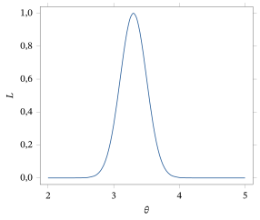
O parâmetro \(\theta\) não precisa ser unidimensional. A interpretação da verossimilhança continua a mesma, mas não é possível fazer o seu gráfico — pelo menos não quando a dimensão de \(\theta\) é maior que 2.
No Exemplo 2.8.5, apresentamos as distribuições multinomiais. Elas surgem em aplicações quando temos uma variável resposta13 categórica \(s\) que pode assumir um número finito \(k\) de valores, digamos \(\{1, \ldots, k\}\), e \(P(s = i) = \theta_i\).
Suponha, então, que \(k = 3\) e que não conhecemos o valor de \((\theta_1, \theta_2, \theta_3)\). Nesse caso, o espaço paramétrico é dado por \[ \negrito{\Omega} = \{(\theta_1, \theta_2, \theta_3) : \theta_i \ge 0,\ \text{para } i = 1, 2, 3,\ \text{e } \theta_1 + \theta_2 + \theta_3 = 1\}. \] Observe que ele é, na verdade, apenas bidimensional, porque, assim que conhecemos o valor de dois quaisquer dos \(\theta_i\), digamos \(\theta_1\) e \(\theta_2\), conhecemos imediatamente o valor do parâmetro restante, pois \(\theta_3 = 1 - \theta_1 - \theta_2\). Esse fato deve ser sempre lembrado quando lidamos com modelos multinomiais.
Suponha agora que observamos uma amostra de \(n\) dessa distribuição, digamos \((s_1, \ldots, s_n)\). A função de verossimilhança dessa amostra é dada por \begin{equation} L(\theta_1, \theta_2, \theta_3 \mid s_1, \ldots, s_n) = \theta_1^{x_1} \theta_2^{x_2} \theta_3^{x_3}, \tag{6.1.2} \end{equation} em que \(x_i\) é o número de valores \(i\) na amostra.
Usando o fato de que podemos tratar múltiplos positivos da verossimilhança como equivalentes, vemos que a verossimilhança baseada nas contagens observadas \((x_1, x_2, x_3)\) (já que elas provêm de uma distribuição Multinomial\((n, \theta_1, \theta_2, \theta_3)\)) é dada por \[ L(\theta_1, \theta_2, \theta_3 \mid x_1, x_2, x_3) = \theta_1^{x_1} \theta_2^{x_2} \theta_3^{x_3}. \] Ela é idêntica à verossimilhança (como funções de \(\theta_1\), \(\theta_2\) e \(\theta_3\)) da amostra original. Certamente é mais simples lidar com as contagens do que com a amostra original. Esse é um fenômeno muito importante em estatística e é caracterizado pelo conceito de suficiência, discutido na próxima seção.
6.1.1 Estatísticas Suficientes
A equivalência, para fins de inferência, entre múltiplos positivos da função de verossimilhança leva a uma equivalência útil entre os valores possíveis dos dados provenientes do mesmo modelo. Por exemplo, suponha que os valores dos dados \(s_1\) e \(s_2\) são tais que \(L(\cdot \mid s_1) = cL(\cdot \mid s_2)\) para algum \(c > 0\). Do ponto de vista da verossimilhança, é indiferente para nós termos obtido os dados \(s_1\) ou os dados \(s_2\), pois eles levam às mesmas razões de verossimilhança.
Isso leva à definição de estatística suficiente14.
Uma função \(T\) definida no espaço amostral15 \(S\) é chamada de estatística suficiente para o modelo se, sempre que \(T(s_1) = T(s_2)\), então \[ L(\cdot \mid s_1) = c(s_1, s_2)\, L(\cdot \mid s_2) \] para alguma constante \(c(s_1, s_2) > 0\).
A terminologia se justifica pelo fato de que precisamos observar apenas o valor \(t\) da função \(T\), já que podemos escolher qualquer valor \[ s \in T^{-1}\{t\} = \{s : T(s) = t\} \] e usar a verossimilhança baseada em \(s\). Todas essas escolhas dão as mesmas razões de verossimilhança. Tipicamente, \(T(s)\) terá dimensão menor que \(s\), de modo que podemos considerar substituir \(s\) por \(T(s)\) como uma redução dos dados, que simplifica um pouco a análise.
Ilustramos o cálculo de uma estatística suficiente num contexto simples.
Suponha que \(S = \{1, 2, 3, 4\}\), \(\negrito{\Omega} = \{a, b\}\) e que as duas distribuições de probabilidade são dadas pela tabela a seguir.
| \(s = 1\) | \(s = 2\) | \(s = 3\) | \(s = 4\) | |
|---|---|---|---|---|
| \(\theta = a\) | \(1/2\) | \(1/6\) | \(1/6\) | \(1/6\) |
| \(\theta = b\) | \(1/4\) | \(1/4\) | \(1/4\) | \(1/4\) |
Então \(L(\cdot \mid 2)\) \({}= L(\cdot \mid 3)\) \({}= L(\cdot \mid 4)\) (por exemplo, \(L(a \mid 2) = 1/6\) e \(L(b \mid 2) = 1/4\)), de modo que os valores dos dados em \(\{2, 3, 4\}\) dão todos as mesmas razões de verossimilhança. Portanto, \(T : S \longrightarrow \{0, 1\}\) dada por \(T(1) = 0\) e \(T(2) = T(3) = T(4) = 1\) é uma estatística suficiente. O modelo ficou um pouco mais simples, pois agora o espaço amostral de \(T\) tem apenas dois elementos, em vez dos quatro do modelo original.
O resultado a seguir ajuda a identificar estatísticas suficientes.
Se a densidade (ou a função de probabilidade) de um modelo se fatora como \(f_\theta(s) = h(s) g_\theta(T(s))\), em que \(g_\theta\) e \(h\) são não negativas, então \(T\) é uma estatística suficiente.
Por hipótese, é claro que, quando \(T(s_1) = T(s_2)\), temos \begin{align*} L(\cdot \mid s_1) &= h(s_1) g_\theta(T(s_1)) = \frac{h(s_1) g_\theta(T(s_1))}{h(s_2) g_\theta(T(s_2))} h(s_2) g_\theta(T(s_2)) \\ &= \frac{h(s_1)}{h(s_2)} h(s_2) g_\theta(T(s_2)) = c(s_1, s_2)\, L(\cdot \mid s_2) \end{align*} porque \(g_\theta(T(s_1)) = g_\theta(T(s_2))\).
Observe que o nome desse resultado vem do fato de termos fatorado \(f_\theta\) como o produto de duas funções. O ponto importante sobre uma estatística suficiente \(T\) é que somos indiferentes, pelo menos quando consideramos inferências sobre \(\theta\), entre observar os dados completos \(s\) ou o valor de \(T(s)\). Veremos no Capítulo 9 que há informação nos dados, além do valor de \(T(s)\), que é útil quando queremos verificar suposições.
Estatísticas Suficientes Minimais
Dado que uma estatística suficiente faz uma redução dos dados sem perder informação relevante neles para as inferências sobre \(\theta\), procuramos uma estatística suficiente que faça a maior redução. Tal estatística é chamada de estatística suficiente minimal17.
Uma estatística suficiente \(T\) de um modelo é uma estatística suficiente minimal sempre que o valor de \(T(s)\) puder ser calculado assim que conhecermos a função de verossimilhança \(L(\cdot \mid s)\).
Assim, uma função de verossimilhança relevante sempre pode ser obtida a partir do valor de qualquer estatística suficiente \(T\), mas, se \(T\) também for suficiente minimal, então também podemos obter o valor de \(T\) a partir de qualquer função de verossimilhança. Pode-se mostrar que uma estatística suficiente minimal dá a maior redução dos dados no sentido de que, se \(T\) é suficiente minimal e \(U\) é suficiente, então existe uma função \(h\) tal que \(T = h(U)\). Observe que as definições de estatística suficiente e de estatística suficiente minimal dependem do modelo, isto é, modelos diferentes podem dar origem a estatísticas suficientes e suficientes minimais diferentes.
Embora a ideia de estatística suficiente minimal seja um pouco sutil, em geral é bem simples encontrar uma, como ilustram os exemplos a seguir.
Pelo teorema da fatoração, vemos imediatamente, a partir da discussão do Exemplo 6.1.4, que \(\bar{x}\) é uma estatística suficiente. Ora, qualquer função de verossimilhança desse modelo é um múltiplo positivo de \[ \exp\left(-\frac{n}{2\sigma_0^2}(\bar{x} - \theta)^2\right). \] Observe que qualquer função de \(\theta\) desse tipo fica completamente especificada pelo ponto em que atinge o máximo, a saber, em \(\theta = \bar{x}\). Assim, \(\bar{x}\) pode ser obtido de qualquer função de verossimilhança desse modelo e, portanto, é uma estatística suficiente minimal.
Suponha que \((x_1, \ldots, x_n)\) é uma amostra de uma distribuição \(N(\mu, \sigma^2)\) em que \(\mu \in R^1\) e \(\sigma > 0\) são desconhecidos. Lembre a discussão e a aplicação desse modelo nos Exemplos 5.3.4 e 5.5.6.
O parâmetro desse modelo é bidimensional e é dado por \(\theta = \left(\mu, \sigma^2\right) \in \negrito{\Omega}\) \({}= R^1 \times (0, \infty)\). Portanto, a função de verossimilhança é dada por \begin{align*} L(\theta \mid x_1, \ldots, x_n) &= \left(2\pi\sigma^2\right)^{-n/2} \exp\left(-\frac{1}{2\sigma^2}\sum_{i=1}^{n}(x_i - \mu)^2\right) \\ &= \left(2\pi\sigma^2\right)^{-n/2} \exp\left(-\frac{n}{2\sigma^2}(\bar{x} - \mu)^2\right) \exp\left(-\frac{n-1}{2\sigma^2}s^2\right). \end{align*} Vemos imediatamente, pelo teorema da fatoração, que \((\bar{x}, s^2)\) é uma estatística suficiente.
Agora, fixando \(\sigma^2\), qualquer múltiplo positivo de \(L(\cdot \mid x_1, \ldots, x_n)\) é maximizado, como função de \(\mu\), em \(\mu = \bar{x}\). Isso não depende de \(\sigma^2\). Fixando \(\mu\) em \(\bar{x}\), temos que \[ L\left(\left(\bar{x}, \sigma^2\right) \mid x_1, \ldots, x_n\right) = \left(2\pi\sigma^2\right)^{-n/2} \exp\left(-\frac{n-1}{2\sigma^2}s^2\right) \] é maximizada, como função de \(\sigma^2\), no mesmo ponto que \(\ln L((\bar{x}, \sigma^2) \mid x_1, \ldots, x_n)\), porque \(\ln\) é uma função estritamente crescente19. Agora, \begin{align*} \frac{\partial \ln L\left(\left(\bar{x}, \sigma^2\right) \mid x\right)}{\partial \sigma^2} &= \frac{\partial}{\partial \sigma^2}\left(-\frac{n}{2}\ln \sigma^2 - \frac{n-1}{2\sigma^2}s^2\right) \\ &= -\frac{n}{2\sigma^2} + \frac{n-1}{2\sigma^4}s^2. \end{align*} Igualando isso a 0, obtemos a solução \[ \hat{\sigma}^2 = \frac{n-1}{n}s^2, \] que é uma função injetora20 de \(s^2\). Assim, dada qualquer função de verossimilhança desse modelo, podemos calcular \((\bar{x}, s^2)\), o que estabelece que \((\bar{x}, s^2)\) é uma estatística suficiente minimal do modelo. De fato, a verossimilhança é maximizada em \((\bar{x}, \hat{\sigma}^2)\) (Problema 6.1.22).
Vimos no Exemplo 6.1.5 que a função de verossimilhança de uma amostra é dada por (6.1.2). Isso deixa claro que, se duas amostras diferentes têm as mesmas contagens, então elas têm a mesma verossimilhança, de modo que as contagens \((x_1, x_2, x_3)\) constituem uma estatística suficiente.
Ocorre que essa função de verossimilhança é maximizada tomando \[ (\theta_1, \theta_2, \theta_3) = \left(\frac{x_1}{n}, \frac{x_2}{n}, \frac{x_3}{n}\right). \] Assim, dada a verossimilhança, podemos calcular as contagens (supõe-se conhecido o tamanho da amostra21 \(n\)). Portanto, \((x_1, x_2, x_3)\) é uma estatística suficiente minimal.
Resumo da Seção 6.1
- A função de verossimilhança de um modelo e de dados mostra como os dados sustentam os diversos valores possíveis do parâmetro. O que importa não é o valor efetivo da verossimilhança, e sim as razões entre os valores da verossimilhança em diferentes valores do parâmetro.
- Uma estatística suficiente \(T\) de um modelo é qualquer função dos dados \(s\) tal que, assim que conhecemos o valor de \(T(s)\), podemos determinar a função de verossimilhança \(L(\cdot \mid s)\) (a menos de um múltiplo constante positivo).
- Uma estatística suficiente minimal \(T\) de um modelo é qualquer estatística suficiente tal que, assim que conhecemos uma função de verossimilhança \(L(\cdot \mid s)\) do modelo e dos dados, podemos determinar \(T(s)\).
Exercícios
6.1.1 Suponha que uma amostra de \(n\) indivíduos está sendo testada quanto à presença de um anticorpo no sangue e que se registra o número de indivíduos com o anticorpo presente. Registre um modelo estatístico adequado para essa situação, supondo que as respostas dos indivíduos são independentes. Se tivermos uma amostra de 10 e registrarmos 3 positivos, faça o gráfico de uma função de verossimilhança representativa.
6.1.2 Suponha que suicídios ocorrem numa população a uma taxa \(p\) por pessoa-ano e que \(p\) é considerado completamente desconhecido. Se modelarmos o número de suicídios observados numa população com um total de \(N\) pessoas-ano como Poisson\((Np)\), registre uma função de verossimilhança representativa para \(p\) quando observamos 22 suicídios com \(N = 30.345\).
6.1.3 Suponha que os tempos de vida (em milhares de horas) de lâmpadas têm distribuição Exponencial\((\theta)\), em que \(\theta > 0\) é desconhecido. Se observarmos \(\bar{x} = 5{,}2\) numa amostra de 20 lâmpadas, registre uma função de verossimilhança representativa. Por que precisamos observar apenas a média amostral para obter uma verossimilhança representativa?
6.1.4 Suponha que tomamos uma amostra de \(n = 100\) estudantes de uma universidade com mais de 50.000 estudantes matriculados. Classificamos esses estudantes como morando no campus, morando fora do campus com os pais ou morando fora do campus por conta própria. Suponha que observamos as contagens \((x_1, x_2, x_3) = (34, 44, 22)\). Determine a forma da função de verossimilhança para as proporções desconhecidas de estudantes da população que estão nessas categorias.
6.1.5 Determine a constante que torna iguais as funções de verossimilhança dos Exemplos 6.1.2 e 6.1.3.
6.1.6 Suponha que \((x_1, \ldots, x_n)\) é uma amostra da distribuição Bernoulli\((\theta)\), em que \(\theta \in [0, 1]\) é desconhecido. Determine a função de verossimilhança e uma estatística suficiente minimal para esse modelo. (Sugestão: use o teorema da fatoração e maximize o logaritmo da função de verossimilhança.)
6.1.7 Suponha que \((x_1, \ldots, x_n)\) é uma amostra da distribuição Poisson\((\theta)\), em que \(\theta > 0\) é desconhecido. Determine a função de verossimilhança e uma estatística suficiente minimal para esse modelo. (Sugestão: o teorema da fatoração e a maximização do logaritmo da função de verossimilhança.)
6.1.8 Suponha que um modelo estatístico é composto de duas distribuições, dadas pela tabela a seguir:
| \(s = 1\) | \(s = 2\) | \(s = 3\) | |
|---|---|---|---|
| \(f_1(s)\) | \(0{,}3\) | \(0{,}1\) | \(0{,}6\) |
| \(f_2(s)\) | \(0{,}1\) | \(0{,}7\) | \(0{,}2\) |
(a) Faça o gráfico da função de verossimilhança para cada valor possível \(s\) dos dados.(b) Encontre uma estatística suficiente que faça uma redução dos dados.
6.1.9 Suponha que um modelo estatístico é dado por \(\{f_1, f_2\}\), em que \(f_i\) é uma distribuição \(N(i, 1)\). Calcule a razão de verossimilhança22 \(L(1 \mid 0)/L(2 \mid 0)\) e explique como você interpreta esse número.
6.1.10 Explique por que uma função de verossimilhança nunca pode assumir valores negativos. Uma função de verossimilhança pode ser igual a 0 num valor do parâmetro?
6.1.11 Suponha que temos um modelo estatístico \(\{f_\theta : \theta \in [0, 1]\}\) e observamos \(x_0\). É verdade que \(\int_0^1 L(\theta \mid x_0)\, d\theta = 1\)? Explique por quê.
6.1.12 Suponha que \((x_1, \ldots, x_n)\) é uma amostra de uma distribuição Geométrica\((\theta)\), em que \(\theta \in [0, 1]\) é desconhecido. Determine a função de verossimilhança e uma estatística suficiente minimal para esse modelo. (Sugestão: use o teorema da fatoração e maximize o logaritmo da verossimilhança.)
6.1.13 Suponha que lhe dizem que a verossimilhança de um certo valor do parâmetro é \(10^9\). É possível interpretar esse número de alguma maneira significativa? Explique por quê.
6.1.14 Suponha que um estatístico registra uma função de verossimilhança como \(\theta^2\) para \(\theta \in [0, 1]\), enquanto outro estatístico registra uma função de verossimilhança como \(100\theta^2\) para \(\theta \in [0, 1]\). Explique por que essas funções de verossimilhança são, na prática, a mesma.
Problemas
6.1.15 Mostre que a \(T\) definida no Exemplo 6.1.6 é uma estatística suficiente minimal. (Sugestão: mostre que, assim que você conhece a função de verossimilhança, pode determinar qual dos dois valores possíveis de \(T\) ocorreu.)
6.1.16 Suponha que \(S = \{1, 2, 3, 4\}\), \(\negrito{\Omega} = \{a, b, c\}\), em que as três distribuições de probabilidade são dadas pela tabela a seguir.
| \(s = 1\) | \(s = 2\) | \(s = 3\) | \(s = 4\) | |
|---|---|---|---|---|
| \(\theta = a\) | \(1/2\) | \(1/6\) | \(1/6\) | \(1/6\) |
| \(\theta = b\) | \(1/4\) | \(1/4\) | \(1/4\) | \(1/4\) |
| \(\theta = c\) | \(1/2\) | \(1/4\) | \(1/4\) | \(0\) |
Determine uma estatística suficiente minimal para esse modelo. A estatística suficiente minimal do Exemplo 6.1.6 é suficiente para esse modelo?
6.1.17 Suponha que \((x_1, \ldots, x_n)\) é uma amostra da distribuição \(N(\mu, \sigma_0^2)\), em que \(\mu \in R^1\) é desconhecido. Determine a forma dos intervalos de verossimilhança para esse modelo.
6.1.18 Suponha que \((x_1, \ldots, x_n) \in R^n\) é uma amostra de \(f_\theta\), em que \(\theta \in \negrito{\Omega}\) é desconhecido. Mostre que as estatísticas de ordem23 \((x_{(1)}, \ldots, x_{(n)})\) constituem uma estatística suficiente para o modelo.
6.1.19 Determine uma estatística suficiente minimal para uma amostra de \(n\) do modelo gama de taxa, isto é, \[ f_\theta(x) = \frac{\theta^{\alpha_0}}{\Gamma(\alpha_0)} x^{\alpha_0 - 1} \exp\{-\theta x\} \] para \(x > 0\), \(\theta > 0\), e em que \(\alpha_0 > 0\) é fixo.
6.1.20 Determine a forma de uma estatística suficiente minimal para uma amostra de tamanho \(n\) do modelo Uniforme\([0, \theta]\), em que \(\theta > 0\).
6.1.21 Determine a forma de uma estatística suficiente minimal para uma amostra de tamanho \(n\) do modelo Uniforme\([\theta_1, \theta_2]\), em que \(\theta_1 < \theta_2\).
6.1.22 Para o modelo normal de locação e escala, estabeleça que o ponto em que a verossimilhança é maximizada é dado por \((\bar{x}, \hat{\sigma}^2)\), como definido no Exemplo 6.1.8. (Sugestão: mostre que a segunda derivada de \(\ln L((\bar{x}, \sigma^2) \mid x)\), em relação a \(\sigma^2\), é negativa em \(\hat{\sigma}^2\) e depois argumente que \((\bar{x}, \hat{\sigma}^2)\) é o máximo.)
6.1.23 Suponha que temos uma amostra de \(n\) de uma distribuição Bernoulli\((\theta)\), em que \(\theta \in [0;\ 0{,}5]\). Determine uma estatística suficiente minimal para esse modelo. (Sugestão: é fácil estabelecer a suficiência de \(\bar{x}\), mas esse ponto não maximiza a verossimilhança quando \(\bar{x} > 0{,}5\), de modo que \(\bar{x}\) não pode ser obtido da verossimilhança por maximização, como no Exercício 6.1.6. Em geral, considere a segunda derivada do logaritmo da verossimilhança em qualquer ponto \(\theta \in (0;\ 0{,}5)\) e observe que conhecer a verossimilhança significa que podemos calcular qualquer uma de suas derivadas em quaisquer valores em que elas existam.)
6.1.24 Suponha que temos uma amostra de \(n\) da distribuição Multinomial\((1, \theta, 2\theta, 1 - 3\theta)\), em que \(\theta \in [0, 1/3]\) é desconhecido. Determine a forma da função de verossimilhança e mostre que \(x_1 + x_2\) é uma estatística suficiente minimal, em que \(x_i\) é o número de valores amostrais correspondentes a uma observação na \(i\)-ésima categoria. (Sugestão: Problema 6.1.23.)
6.1.25 Suponha que observamos \(s\) de um modelo estatístico com duas densidades, \(f_1\) e \(f_2\). Mostre que a razão de verossimilhança \(T(s) = f_1(s)/f_2(s)\) é uma estatística suficiente minimal. (Sugestão: use diretamente a definição de suficiência.)
Desafios
6.1.26 Considere o modelo gama de locação e escala, isto é, \[ f_{(\mu, \sigma)}(x) = \frac{1}{\Gamma(\alpha_0)} \left(\frac{x - \mu}{\sigma}\right)^{\alpha_0 - 1} \exp\left\{-\frac{x - \mu}{\sigma}\right\} \frac{1}{\sigma} \] para \(x > \mu \in R^1\), \(\sigma > 0\), e em que \(\alpha_0 > 0\) é fixo. (a) Determine a estatística suficiente minimal para uma amostra de \(n\) quando \(\alpha_0 = 1\). (Sugestão: determine onde a verossimilhança é positiva e calcule a derivada parcial do logaritmo da verossimilhança em relação a \(\mu\).)(b) Determine a estatística suficiente minimal para uma amostra de \(n\) quando \(\alpha_0 \ne 1\). (Sugestão: use o Problema 6.1.18, a derivada parcial do logaritmo da verossimilhança em relação a \(\mu\), e determine onde ela é infinita.)
Tópicos para discussão
6.1.27 Qual a importância, na sua opinião, de um estatístico tentar quantificar quanto erro há numa inferência feita? Por exemplo, se uma estimativa está sendo indicada para alguma quantidade desconhecida, é importante que o estatístico dê alguma indicação de quão precisa (ou imprecisa) é essa inferência?
6.2 Estimação por Máxima Verossimilhança
Na Seção 6.1, apresentamos a função de verossimilhança \(L(\cdot \mid s)\) como base para fazer inferências sobre o valor verdadeiro desconhecido \(\theta \in \negrito{\Omega}\). Começamos agora a considerar os tipos específicos de inferência discutidos na Seção 5.5.3, começando pela estimação24.
Quando nos interessa uma estimativa pontual de \(\theta\), um valor \(\hat{\theta}(s)\) que maximiza \(L(\theta \mid s)\) é uma escolha sensata, pois esse é o valor mais bem sustentado pelos dados, isto é, \begin{equation} L(\hat{\theta}(s) \mid s) \ge L(\theta \mid s) \tag{6.2.1} \end{equation} para todo \(\theta \in \negrito{\Omega}\).
Chamamos \(\hat{\theta} : S \to \negrito{\Omega}\) que satisfaz (6.2.1) para todo \(\theta \in \negrito{\Omega}\) de estimador de máxima verossimilhança25, e o valor \(\hat{\theta}(s)\) é chamado de estimativa de máxima verossimilhança ou, abreviadamente, EMV.
Observe que, se usarmos \(cL(\cdot \mid s)\) como função de verossimilhança, para \(c > 0\) fixo, então \(\hat{\theta}(s)\) também é um EMV para essa versão da verossimilhança. Assim, podemos usar qualquer versão da verossimilhança para calcular um EMV.
Suponha que o espaço amostral seja \(S = \{1, 2, 3\}\), que o espaço paramétrico seja \(\negrito{\Omega} = \{1, 2\}\) e que o modelo seja dado pela tabela a seguir.
| \(s = 1\) | \(s = 2\) | \(s = 3\) | |
|---|---|---|---|
| \(f_1(s)\) | \(0{,}3\) | \(0{,}4\) | \(0{,}3\) |
| \(f_2(s)\) | \(0{,}1\) | \(0{,}7\) | \(0{,}2\) |
Suponha, além disso, que observamos \(s = 1\). Assim, por exemplo, poderíamos ter recebido uma de duas tigelas de fichas contendo essas proporções de fichas marcadas com 1, 2 e 3. Retiramos uma ficha, observamos que ela está marcada com 1 e agora queremos fazer inferências sobre qual tigela recebemos.
Nesse caso, o EMV é dado por \(\hat{\theta}(1) = 1\), pois \(0{,}3 = L(1 \mid 1) > 0{,}1 = L(2 \mid 1)\). Se tivéssemos observado \(s = 2\), então \(\hat{\theta}(2) = 2\); se tivéssemos observado \(s = 3\), então \(\hat{\theta}(3) = 1\).
Note que um EMV não precisa ser único. Por exemplo, no Exemplo 6.2.1, se \(f_2\) fosse definida por \(f_2(1) = 0\), \(f_2(2) = 0{,}7\) e \(f_2(3) = 0{,}3\), então um EMV seria o dado ali, mas tomar \(\hat{\theta}(3) = 2\) também daria um EMV.
O EMV tem uma propriedade de invariância muito importante. Suponha que reparametrizamos um modelo por meio de uma função injetora \(\Psi\) definida em \(\negrito{\Omega}\). Com isso queremos dizer que, em vez de rotular as distribuições individuais do modelo com \(\theta \in \negrito{\Omega}\), usamos \(\psi \in \Upsilon\) \({}= \{\Psi(\theta) : \theta \in \negrito{\Omega}\}\). Por exemplo, no Exemplo 6.2.1, poderíamos tomar \(\Psi(1) = a\) e \(\Psi(2) = b\), de modo que \(\Upsilon = \{a, b\}\). Assim, o modelo passa a ser dado por \(\{g_\psi : \psi \in \Upsilon\}\), em que \(g_\psi = f_\theta\) para o único valor \(\theta\) tal que \(\Psi(\theta) = \psi\). Temos um novo parâmetro \(\psi\) e um novo espaço paramétrico \(\Upsilon\). Nada mudou nas distribuições de probabilidade do modelo estatístico; mudou apenas a maneira como elas são rotuladas. Temos, então, o resultado a seguir.
Se \(\hat{\theta}(s)\) é um EMV para a parametrização original e se \(\Psi\) é uma função injetora definida em \(\negrito{\Omega}\), então \(\hat{\psi}(s) = \Psi(\hat{\theta}(s))\) é um EMV na nova parametrização.
Se escolhermos como função de verossimilhança da nova parametrização \(L^*(\psi \mid s) = g_\psi(s)\), e como verossimilhança da parametrização original \(L(\theta \mid s) = f_\theta(s)\), então teremos \[ L^*(\hat{\psi}(s) \mid s) = g_{\Psi(\hat{\theta}(s))}(s) = f_{\hat{\theta}(s)}(s) = L(\hat{\theta}(s) \mid s) \ge L(\theta \mid s) = L^*(\Psi(\theta) \mid s) \] para todo \(\theta \in \negrito{\Omega}\). Isso implica que \(L^*(\hat{\psi}(s) \mid s) \ge L^*(\psi \mid s)\) para todo \(\psi \in \Upsilon\) e estabelece o resultado.
O Teorema 6.2.1 mostra que, não importa como parametrizamos o modelo, o EMV se comporta de maneira coerente sob a reparametrização. Essa é uma propriedade importante, e nem todos os procedimentos de estimação a satisfazem.
6.2.1 Cálculo do EMV
Uma questão importante é o cálculo dos EMVs. No Exemplo 6.2.1, conseguimos fazê-lo simplesmente examinando a tabela que dá as distribuições. Com modelos mais complicados, essa abordagem não é possível. Em muitas situações, porém, podemos usar os métodos do cálculo para calcular \(\hat{\theta}(s)\). Para isso, exigimos que \(f_\theta(s)\) seja uma função continuamente diferenciável de \(\theta\), para podermos usar os métodos de otimização do cálculo.
Em vez de usar a função de verossimilhança, muitas vezes é conveniente usar a função de log-verossimilhança26.
Para a função de verossimilhança \(L(\cdot \mid s)\), a função de log-verossimilhança \(l(\cdot \mid s)\), definida em \(\negrito{\Omega}\), é dada por \(l(\cdot \mid s) = \ln L(\cdot \mid s)\).
Note que \(\ln(x)\) é uma função injetora e crescente de \(x > 0\), e isso implica que \(L(\hat{\theta}(s) \mid s) \ge L(\theta \mid s)\) para todo \(\theta \in \negrito{\Omega}\) se e somente se \(l(\hat{\theta}(s) \mid s) \ge l(\theta \mid s)\) para todo \(\theta \in \negrito{\Omega}\). Assim, ao calcular um EMV, podemos maximizar \(l(\cdot \mid s)\) em vez de \(L(\cdot \mid s)\). A conveniência da log-verossimilhança vem do fato de que, para uma amostra \((s_1, \ldots, s_n)\) de \(\{f_\theta : \theta \in \negrito{\Omega}\}\), a função de verossimilhança é dada por \[ L(\theta \mid s_1, \ldots, s_n) = \prod_{i=1}^{n} f_\theta(s_i), \] enquanto a log-verossimilhança é dada por \[ l(\theta \mid s_1, \ldots, s_n) = \sum_{i=1}^{n} \ln f_\theta(s_i). \] Em geral, é muito mais fácil derivar uma soma do que um produto.
Como vamos derivar a log-verossimilhança, é conveniente dar um nome a essa derivada. Definimos a função escore27 \(S(\theta \mid s)\) de um modelo como a derivada de sua função de log-verossimilhança, sempre que ela existir. Assim, quando \(\theta\) é um parâmetro real unidimensional, \[ S(\theta \mid s) = \frac{\partial l(\theta \mid s)}{\partial \theta}, \] desde que essa derivada parcial exista (ver o Apêndice A.5 para a definição de derivada parcial). Restringimos agora nossa atenção à situação em que \(\theta\) é unidimensional.
Para obter o EMV, precisamos então resolver a equação escore28 \begin{equation} S(\theta \mid s) = 0 \tag{6.2.2} \end{equation} em \(\theta\). É claro que uma solução de (6.2.2) não é necessariamente um EMV, porque esse ponto pode ser um mínimo local, ou apenas um máximo local em vez de um máximo global. Para garantir que uma solução \(\hat{\theta}(s)\) seja pelo menos um máximo local, precisamos também verificar que \begin{equation} \left. \frac{\partial S(\theta \mid s)}{\partial \theta} \right|_{\theta = \hat{\theta}(s)} = \left. \frac{\partial^2 l(\theta \mid s)}{\partial \theta^2} \right|_{\theta = \hat{\theta}(s)} < 0. \tag{6.2.3} \end{equation} Depois, precisamos calcular \(l(\cdot \mid s)\) em cada máximo local para determinar o máximo global.
Vamos calcular alguns EMVs usando cálculo.
Considere a função de verossimilhança \[ L(\theta \mid x_1, \ldots, x_n) = \exp\left(-\frac{n}{2\sigma_0^2}(\bar{x} - \theta)^2\right), \] obtida no Exemplo 6.1.4 para uma amostra \((x_1, \ldots, x_n)\) do modelo \(N(\theta, \sigma_0^2)\), em que \(\theta \in R^1\) é desconhecido e \(\sigma_0^2\) é conhecido. A função de log-verossimilhança é, então, \[ l(\theta \mid x_1, \ldots, x_n) = -\frac{n}{2\sigma_0^2}(\bar{x} - \theta)^2, \] e a função escore é \[ S(\theta \mid x_1, \ldots, x_n) = \frac{n}{\sigma_0^2}(\bar{x} - \theta). \] A equação escore é dada por \[ \frac{n}{\sigma_0^2}(\bar{x} - \theta) = 0. \] Resolvendo-a em \(\theta\), obtemos a solução única \(\hat{\theta}(x_1, \ldots, x_n) = \bar{x}\). Para verificar que ela é um máximo local, calculamos \[ \left. \frac{\partial S(\theta \mid x_1, \ldots, x_n)}{\partial \theta} \right|_{\theta = \bar{x}} = -\frac{n}{\sigma_0^2}, \] que é negativo e, portanto, indica que \(\bar{x}\) é um máximo local. Como temos apenas um máximo local, ele também é o máximo global, e de fato obtivemos o EMV.
Suponha que se saiba que um tempo de vida29 tem distribuição Exponencial\((1/\theta)\), em que \(\theta > 0\) é desconhecido. Então, com base numa amostra \((x_1, \ldots, x_n)\), a verossimilhança é dada por \[ L(\theta \mid x_1, \ldots, x_n) = \frac{1}{\theta^n} \exp\left(-\frac{n\bar{x}}{\theta}\right), \] a log-verossimilhança é dada por \[ l(\theta \mid x_1, \ldots, x_n) = -n \ln \theta - \frac{n\bar{x}}{\theta}, \] e a função escore é dada por \[ S(\theta \mid x_1, \ldots, x_n) = -\frac{n}{\theta} + \frac{n\bar{x}}{\theta^2}. \] Resolvendo a equação escore, obtemos \(\hat{\theta}(x_1, \ldots, x_n) = \bar{x}\) e, como \(\bar{x} > 0\), \[ \left. \frac{\partial S(\theta \mid x_1, \ldots, x_n)}{\partial \theta} \right|_{\theta = \bar{x}} = \left. \frac{n}{\theta^2} - 2\frac{n\bar{x}}{\theta^3} \right|_{\theta = \bar{x}} = -\frac{n}{\bar{x}^2} < 0, \] de modo que \(\bar{x}\) é de fato o EMV.
Nos dois exemplos que acabamos de ver, conseguimos deduzir fórmulas simples para o EMV. Isso nem sempre é possível. Considere o exemplo a seguir.
Considere uma população em que os indivíduos são classificados em um de três tipos, rotulados 1, 2 e 3, respectivamente. Suponha, além disso, que se saiba que as proporções de indivíduos que caem nessas categorias seguem a lei \(p_1 = \theta\), \(p_2 = \theta^2\), \(p_3 = 1 - \theta - \theta^2\), em que \[ \theta \in [0, (\sqrt{5} - 1)/2] = [0; 0{,}61803] \] é desconhecido. Aqui, \(p_i\) denota a proporção de indivíduos na \(i\)-ésima classe. Note que a exigência \(0 \le \theta + \theta^2 \le 1\) impõe a cota superior30 para \(\theta\), e a cota exata é obtida resolvendo \(\theta + \theta^2 - 1 = 0\) em \(\theta\) pela fórmula de Bhaskara31. Relações como essa, entre as proporções da distribuição de uma variável categórica, surgem com frequência em genética. Por exemplo, a variável categórica pode servir para classificar indivíduos em diferentes genótipos.
Para uma amostra de tamanho \(n\) (em que \(n\) é pequeno em relação ao tamanho da população, de modo que podemos supor que as observações são i.i.d.), a função de verossimilhança é dada por \[ L(\theta \mid x_1, \ldots, x_n) = \theta^{x_1} \theta^{2x_2} (1 - \theta - \theta^2)^{x_3}, \] em que \(x_i\) denota a contagem amostral na \(i\)-ésima classe. A função de log-verossimilhança é, então,32 \[ l(\theta \mid s_1, \ldots, s_n) = (x_1 + 2x_2) \ln \theta + x_3 \ln(1 - \theta - \theta^2), \] e a função escore é \[ S(\theta \mid s_1, \ldots, s_n) = \frac{(x_1 + 2x_2)}{\theta} - \frac{x_3 (1 + 2\theta)}{1 - \theta - \theta^2}. \] A equação escore leva então a uma solução \(\hat{\theta}\) que é raiz da quadrática \begin{align*} &(x_1 + 2x_2)(1 - \theta - \theta^2) - x_3(\theta + 2\theta^2) \\ &\quad = -(x_1 + 2x_2 + 2x_3)\theta^2 - (x_1 + 2x_2 + x_3)\theta + (x_1 + 2x_2). \end{align*} Usando a fórmula de Bhaskara, obtemos \begin{align*} \hat{\theta} &= \frac{1}{2(x_1 + 2x_2 + 2x_3)} \\ &\quad \times \left(-x_1 - 2x_2 - x_3 \pm \sqrt{5x_1^2 + 20x_1x_2 + 10x_1x_3 + 20x_2^2 + 20x_2x_3 + x_3^2}\right). \end{align*}
Note que a fórmula das raízes não determina o EMV de maneira clara. Na verdade, não conseguimos nem dizer se alguma das raízes está em \([0, 1]\)! Assim, há quatro valores possíveis para o EMV neste ponto: qualquer uma das raízes ou os pontos de fronteira \(0\) e \(0{,}61803\).
Podemos resolver isso facilmente numa aplicação, simplesmente calculando numericamente a verossimilhança nos quatro pontos. Por exemplo, se \(x_1 = 70\), \(x_2 = 5\) e \(x_3 = 25\), então as raízes são \(-1{,}28616\) e \(0{,}47847\), de modo que é imediato que o EMV é \(\hat{\theta}(x_1, \ldots, x_n) = 0{,}47847\). Podemos ver isso graficamente no gráfico da log-verossimilhança apresentado na Figura 6.2.1.
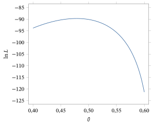
Em geral, a equação escore (6.2.2) precisa ser resolvida numericamente, com uma rotina iterativa como a de Newton–Raphson. O Exemplo 6.2.4 mostra que devemos ter muito cuidado para não aceitar simplesmente como EMV uma solução dada por esse tipo de procedimento, e sim verificar que a propriedade fundamental que o define, (6.2.1), está satisfeita. Também precisamos ter cuidado para que as condições de suavidade necessárias estejam satisfeitas, de modo que o cálculo possa ser usado. Considere o exemplo a seguir.
Suponha que \((x_1, \ldots, x_n)\) seja uma amostra do modelo \(\text{Uniforme}[0, \theta]\), em que \(\theta > 0\) é desconhecido. Então, a função de verossimilhança é dada por \begin{align*} L(\theta \mid x_1, \ldots, x_n) &= \begin{cases} \theta^{-n} & x_i \le \theta \text{ para } i = 1, \ldots, n \\ 0 & x_i > \theta \text{ para algum } i \end{cases} \\ &= \theta^{-n} I_{[x_{(n)}, \infty)}(\theta), \end{align*} em que \(x_{(n)}\) é a maior estatística de ordem da amostra. Na Figura 6.2.2, fizemos o gráfico dessa função quando \(n = 10\) e \(x_{(n)} = 1{,}916\). Note que o máximo ocorre claramente em \(x_{(n)}\); não conseguimos obter esse valor por derivação, pois \(L(\cdot \mid x_1, \ldots, x_n)\) não é diferenciável nesse ponto.
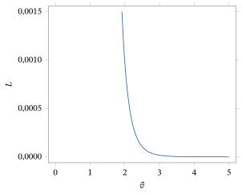
A lição dos Exemplos 6.2.4 e 6.2.5 é que precisamos ter cuidado ao calcular EMVs. Vejamos agora um exemplo de problema bidimensional em que o EMV pode ser obtido com métodos unidimensionais.
Suponha que \((x_1, \ldots, x_n)\) seja uma amostra de uma distribuição \(N(\mu, \sigma^2)\), em que \(\mu \in R^1\) e \(\sigma > 0\) são desconhecidos. O parâmetro desse modelo é bidimensional, dado por \(\theta = (\mu, \sigma^2) \in \negrito{\Omega}\) \({}= R^1 \times (0, \infty)\). A função de verossimilhança é, então, dada por \[ L(\mu, \sigma^2 \mid x_1, \ldots, x_n) = (2\pi\sigma^2)^{-n/2} \exp\left(-\frac{n}{2\sigma^2}(\bar{x} - \mu)^2\right) \exp\left(-\frac{n-1}{2\sigma^2} s^2\right), \] como mostrado no Exemplo 6.1.8. A função de log-verossimilhança é dada por \begin{equation} l(\mu, \sigma^2 \mid x_1, \ldots, x_n) = -\frac{n}{2} \ln 2\pi - \frac{n}{2} \ln \sigma^2 - \frac{n}{2\sigma^2}(\bar{x} - \mu)^2 - \frac{n-1}{2\sigma^2} s^2. \tag{6.2.4} \end{equation} Como discutido no Exemplo 6.1.8, é claro que, para \(\sigma^2\) fixo, (6.2.4) é maximizada, como função de \(\mu\), por \(\hat{\mu} = \bar{x}\). Note que isso não envolve \(\sigma^2\); logo, essa tem de ser a primeira coordenada do EMV.
Substituindo \(\mu = \bar{x}\) em (6.2.4), obtemos \begin{equation} -\frac{n}{2} \ln 2\pi - \frac{n}{2} \ln \sigma^2 - \frac{n-1}{2\sigma^2} s^2, \tag{6.2.5} \end{equation} e a segunda coordenada do EMV tem de ser o valor de \(\sigma^2\) que maximiza (6.2.5). Derivando (6.2.5) em relação a \(\sigma^2\) e igualando a 0, obtemos \begin{equation} -\frac{n}{2\sigma^2} + \frac{n-1}{2(\sigma^2)^2} s^2 = 0. \tag{6.2.6} \end{equation} Resolvendo (6.2.6) em \(\sigma^2\), chegamos à solução \[ \hat{\sigma}^2 = \frac{n-1}{n} s^2 = \frac{1}{n} \sum_{i=1}^{n} (x_i - \bar{x})^2. \] Derivando (6.2.6) em relação a \(\sigma^2\) e substituindo \(\hat{\sigma}^2\), vemos que a derivada segunda é negativa; logo, \(\hat{\sigma}^2\) é um ponto em que o máximo é atingido.
Portanto, mostramos que o EMV de \((\mu, \sigma^2)\) é dado por \[ \left(\bar{x}, \frac{1}{n} \sum_{i=1}^{n} (x_i - \bar{x})^2\right). \] Na próxima seção, mostraremos que esse resultado também pode ser obtido com o cálculo em várias variáveis.
Até aqui falamos apenas da estimação do parâmetro completo \(\theta\) de um modelo. E quanto à estimação de uma característica de interesse geral \(\psi(\theta)\), para alguma função \(\psi\) definida no espaço paramétrico \(\negrito{\Omega}\)? Talvez a resposta óbvia aqui seja usar a estimativa \(\hat{\psi}(s) = \psi(\hat{\theta}(s))\), em que \(\hat{\theta}(s)\) é um EMV de \(\theta\). Isso às vezes é chamado de EMV plug-in de \(\psi\). Note, porém, que o EMV plug-in não é necessariamente um EMV verdadeiro, no sentido de termos uma função de verossimilhança para um modelo indexado por \(\psi\) que atinja seu valor máximo em \(\hat{\psi}(s)\). Se \(\psi\) é uma função injetora definida em \(\negrito{\Omega}\), então o Teorema 6.2.1 estabelece que \(\hat{\psi}(s)\) é um EMV verdadeiro, mas não nos outros casos.
Se \(\psi\) não é injetora, muitas vezes podemos encontrar uma função complementar33 \(\lambda\) definida em \(\negrito{\Omega}\) tal que \((\psi, \lambda)\) seja uma função injetora de \(\theta\). Então, pelo Teorema 6.2.1, \[ (\hat{\psi}(s), \hat{\lambda}(s)) = (\psi(\hat{\theta}(s)), \lambda(\hat{\theta}(s))) \] é o EMV conjunto, mas \(\hat{\psi}(s)\) ainda não é formalmente um EMV. Às vezes, um EMV plug-in pode ter um desempenho ruim, pois ignora a informação contida em \(\lambda(\hat{\theta}(s))\) sobre o valor verdadeiro de \(\psi\). Um exemplo ilustra esse fenômeno.
Suponha que \(X_i \sim N(\mu_i, 1)\) para \(i = 1, \ldots, n\) e que essas variáveis sejam independentes, com as \(\mu_i\) completamente desconhecidas. Aqui, \(\theta = (\mu_1, \ldots, \mu_n)\) e \(\negrito{\Omega} = R^n\). Suponha que queremos estimar \(\psi(\theta) = \mu_1^2 + \cdots + \mu_n^2\).
A função de log-verossimilhança é dada por \[ l(\theta \mid x_1, \ldots, x_n) = -\frac{1}{2} \sum_{i=1}^{n} (x_i - \mu_i)^2. \] É claro que ela é maximizada por \(\hat{\theta}(x_1, \ldots, x_n)\) \({}= (x_1, \ldots, x_n)\). Assim, o EMV plug-in de \(\psi\) é dado por \(\hat{\psi} = \sum_{i=1}^{n} x_i^2\).
Observe agora que \[ E_\theta\left(\sum_{i=1}^{n} X_i^2\right) = \sum_{i=1}^{n} E_\theta(X_i^2) = \sum_{i=1}^{n} (\Var_\theta(X_i) + \mu_i^2) = n + \psi(\theta), \] em que \(E_\theta(g)\) se refere à esperança34 de \(g(s)\) quando \(s \sim f_\theta\). Assim, quando \(n\) é grande, é provável que \(\hat{\psi}\) esteja longe do valor verdadeiro. Uma melhoria imediata desse estimador é usar, em vez dele, \(\sum_{i=1}^{n} x_i^2 - n\).
Houve várias tentativas de corrigir problemas como o ilustrado no Exemplo 6.2.7. Em geral, elas envolvem modificar a verossimilhança de alguma maneira. Não seguiremos com essa questão neste texto, mas recomendamos cautela ao usar EMVs plug-in. Às vezes, como no Exemplo 6.2.6, em que estimamos \(\mu\) por \(\bar{x}\) e \(\sigma^2\) por \(s^2\), eles parecem adequados; outras vezes, como no Exemplo 6.2.7, não.
6.2.2 O Caso Multidimensional (Avançado)
Consideramos agora a situação em que \(\theta = (\theta_1, \ldots, \theta_k) \in R^k\) é multidimensional, isto é, \(k > 1\). A verossimilhança e a log-verossimilhança são definidas exatamente como antes, mas a função escore passa a ser dada por \[ S(\theta \mid s) = \begin{pmatrix} \dfrac{\partial l(\theta \mid s)}{\partial \theta_1} \\[10pt] \dfrac{\partial l(\theta \mid s)}{\partial \theta_2} \\[6pt] \vdots \\[4pt] \dfrac{\partial l(\theta \mid s)}{\partial \theta_k} \end{pmatrix}, \] desde que todas essas derivadas parciais existam. Para a equação escore, obtemos \[ \begin{pmatrix} \dfrac{\partial l(\theta \mid s)}{\partial \theta_1} \\[10pt] \dfrac{\partial l(\theta \mid s)}{\partial \theta_2} \\[6pt] \vdots \\[4pt] \dfrac{\partial l(\theta \mid s)}{\partial \theta_k} \end{pmatrix} = \begin{pmatrix} 0 \\ 0 \\ \vdots \\ 0 \end{pmatrix}, \] e precisamos resolver essa equação \(k\)-dimensional em \((\theta_1, \ldots, \theta_k)\). Isso costuma ser muito mais difícil do que no caso unidimensional, e em geral temos de recorrer a métodos numéricos.
Uma condição necessária e suficiente para que \((\hat{\theta}_1, \ldots, \hat{\theta}_k)\) seja um máximo local, quando a log-verossimilhança tem derivadas parciais segundas contínuas, é que a matriz das derivadas parciais segundas da log-verossimilhança, calculada em \((\hat{\theta}_1, \ldots, \hat{\theta}_k)\), seja definida negativa (equivalentemente, todos os seus autovalores devem ser negativos). Depois, precisamos calcular a verossimilhança em cada um dos máximos locais obtidos para determinar o máximo global, ou EMV.
Não seguiremos aqui com o cálculo numérico de EMVs no caso multidimensional; restringimos nossa atenção a uma situação em que fazemos as contas em forma fechada.
Determinamos a função de log-verossimilhança desse modelo em (6.2.4). A função escore é, então,35 \begin{align*} S(\mu, \sigma^2 \mid x_1, \ldots, x_n) &= \begin{pmatrix} \dfrac{\partial S(\theta \mid x_1, \ldots, x_n)}{\partial \mu} \\[10pt] \dfrac{\partial S(\theta \mid x_1, \ldots, x_n)}{\partial \sigma^2} \end{pmatrix} \\ &= \begin{pmatrix} \dfrac{n}{\sigma^2}(\bar{x} - \mu) \\[10pt] -\dfrac{n}{2\sigma^2} + \dfrac{n}{2\sigma^4}(\bar{x} - \mu)^2 + -\dfrac{n-1}{2\sigma^4} s^2 \end{pmatrix}. \end{align*} A equação escore é \[ \begin{pmatrix} \dfrac{n}{\sigma^2}(\bar{x} - \mu) \\[10pt] -\dfrac{n}{2\sigma^2} + \dfrac{n}{2\sigma^4}(\bar{x} - \mu)^2 + \dfrac{n-1}{2\sigma^4} s^2 \end{pmatrix} = \begin{pmatrix} 0 \\ 0 \end{pmatrix}, \] e a primeira dessas equações implica imediatamente que \(\hat{\mu} = \bar{x}\). Substituindo esse valor de \(\mu\) na segunda equação e resolvendo em \(\sigma^2\), chegamos à solução \[ \hat{\sigma}^2 = \frac{n-1}{n} s^2 = \frac{1}{n} \sum_{i=1}^{n} (x_i - \bar{x})^2. \] Pelo Exemplo 6.2.6, sabemos que essa solução de fato dá o EMV.
Resumo da Seção 6.2
- Um EMV (estimador de máxima verossimilhança) é um valor do parâmetro \(\theta\) que maximiza a função de verossimilhança. É o valor de \(\theta\) mais bem sustentado pelo modelo e pelos dados.
- Muitas vezes podemos calcular um EMV pelos métodos do cálculo. Quando aplicável, isso leva a resolver a equação escore em \(\theta\), explicitamente ou por meio de algoritmos numéricos. Verifique sempre, com cuidado, se esses métodos se aplicam ao problema específico em questão. Além disso, verifique sempre se uma solução da equação escore é um máximo e, de fato, um máximo absoluto.
Exercícios
6.2.1 Suponha que \(S = \{1, 2, 3, 4\}\) e \(\negrito{\Omega} = \{a, b\}\), em que as duas distribuições de probabilidade são dadas pela tabela a seguir.
| \(s = 1\) | \(s = 2\) | \(s = 3\) | \(s = 4\) | |
|---|---|---|---|---|
| \(\theta = a\) | \(1/2\) | \(1/6\) | \(1/6\) | \(1/6\) |
| \(\theta = b\) | \(1/3\) | \(1/3\) | \(1/3\) | \(0\) |
Determine o EMV de \(\theta\) para cada valor possível dos dados.
6.2.2 Se \((x_1, \ldots, x_n)\) é uma amostra de uma distribuição Bernoulli\((\theta)\), em que \(\theta \in [0, 1]\) é desconhecido, determine o EMV de \(\theta\).
6.2.3 Se \((x_1, \ldots, x_n)\) é uma amostra de uma distribuição Bernoulli\((\theta)\), em que \(\theta \in [0, 1]\) é desconhecido, determine o EMV de \(\theta^2\).
6.2.4 Se \((x_1, \ldots, x_n)\) é uma amostra de uma distribuição Poisson\((\theta)\), em que \(\theta \in (0, \infty)\) é desconhecido, determine o EMV de \(\theta\).
6.2.5 Se \((x_1, \ldots, x_n)\) é uma amostra de uma distribuição Gama\((\alpha_0, \theta)\), em que \(\alpha_0 > 0\) e \(\theta \in (0, \infty)\) é desconhecido, determine o EMV de \(\theta\).
6.2.6 Suponha que \((x_1, \ldots, x_n)\) seja o resultado de lançamentos independentes de uma moeda, em que lançamos até sair a primeira cara e em que a probabilidade de cara num único lançamento é \(\theta \in (0, 1]\). Determine o EMV de \(\theta\).
6.2.7 Se \((x_1, \ldots, x_n)\) é uma amostra de uma distribuição Beta\((\alpha, 1)\) (ver o Problema 2.4.24), em que \(\alpha > 0\) é desconhecido, determine o EMV de \(\alpha\). (Sugestão: suponha que \(\Gamma(\alpha)\) seja uma função diferenciável de \(\alpha\).)
6.2.8 Se \((x_1, \ldots, x_n)\) é uma amostra de uma distribuição Weibull\((\beta)\) (ver o Problema 2.4.19), em que \(\beta > 0\) é desconhecido, determine a equação escore para o EMV de \(\beta\).
6.2.9 Se \((x_1, \ldots, x_n)\) é uma amostra de uma distribuição Pareto\((\alpha)\) (ver o Problema 2.4.20), em que \(\alpha > 0\) é desconhecido, determine o EMV de \(\alpha\).
6.2.10 Se \((x_1, \ldots, x_n)\) é uma amostra de uma distribuição Log-normal36\((\tau)\) (ver o Problema 2.6.17), em que \(\tau > 0\) é desconhecido, determine o EMV de \(\tau\).
6.2.11 Suponha que você esteja medindo o volume de uma caixa cúbica, em centímetros, fazendo medições independentes repetidas de um dos lados. Suponha que seja razoável supor que uma única medição segue uma distribuição \(N(\mu, \sigma_0^2)\), em que \(\mu\) é desconhecido e \(\sigma_0^2\) é conhecido. Com base numa amostra de medições, você obtém o EMV de \(\mu\) igual a 3,2 cm. Qual é a sua estimativa do volume da caixa? Como você justifica isso em termos da função de verossimilhança?
6.2.12 Se \((x_1, \ldots, x_n)\) é uma amostra de uma distribuição \(N(\mu_0, \sigma^2)\), em que \(\sigma^2 > 0\) é desconhecido e \(\mu_0\) é conhecido, determine o EMV de \(\sigma^2\). Em que esse EMV difere do EMV plug-in de \(\sigma^2\) calculado com o modelo normal de locação e escala?
6.2.13 Explique por que não é possível que a função \(\theta^3 \exp(-(\theta - 5{,}3)^2)\), para \(\theta \in R^1\), seja uma função de verossimilhança.
6.2.14 Suponha que lhe digam que uma função de verossimilhança tem máximos locais nos pontos \(-2{,}2\), \(4{,}6\) e \(9{,}2\), determinados com o cálculo. Explique como você determinaria o EMV.
6.2.15 Se duas funções de \(\theta\) são versões equivalentes da verossimilhança quando uma é um múltiplo positivo da outra, quando duas funções de log-verossimilhança são equivalentes?
6.2.16 Suponha que lhe digam que a verossimilhança de \(\theta\) em \(\theta = 2\) é dada por \(1/4\). Essa é a probabilidade de que \(\theta = 2\)? Explique por quê.
Exercícios computacionais
6.2.17 Uma função de verossimilhança é dada por \(\exp(-(\theta - 1)^2/2)\) \({}+ 3\exp(-(\theta - 2)^2/2)\) para \(\theta \in R^1\). Aproxime numericamente o EMV calculando essa função em 1000 pontos igualmente espaçados em \((-10, 10]\). Faça também o gráfico da função de verossimilhança.
6.2.18 Uma função de verossimilhança é dada por \(\exp(-(\theta - 1)^2/2)\) \({}+ 3\exp(-(\theta - 5)^2/2)\) para \(\theta \in R^1\). Aproxime numericamente o EMV calculando essa função em 1000 pontos igualmente espaçados em \((-10, 10]\). Faça também o gráfico da função de verossimilhança. Comente a forma dos intervalos de verossimilhança.
Problemas
6.2.19 (Lei de Hardy–Weinberg) A lei de Hardy–Weinberg, em genética, diz que as proporções dos genótipos \(AA\), \(Aa\) e \(aa\) são \(\theta^2\), \(2\theta(1 - \theta)\) e \((1 - \theta)^2\), respectivamente, em que \(\theta \in [0, 1]\). Suponha que, numa amostra de tamanho \(n\) da população (pequena em relação ao tamanho da população), observamos \(x_1\) indivíduos do tipo \(AA\), \(x_2\) indivíduos do tipo \(Aa\) e \(x_3\) indivíduos do tipo \(aa\). (a) Que distribuição as contagens \((X_1, X_2, X_3)\) seguem?(b) Registre a função de verossimilhança, a função de log-verossimilhança e a função escore para \(\theta\).(c) Registre a forma do EMV de \(\theta\).
6.2.20 Se \((x_1, \ldots, x_n)\) é uma amostra de uma distribuição \(N(\mu, 1)\), em que \(\mu \in R^1\) é desconhecido, determine o EMV da probabilidade do intervalo \((-\infty, 1)\). Justifique sua resposta.
6.2.21 Se \((x_1, \ldots, x_n)\) é uma amostra de uma distribuição \(N(\mu, 1)\), em que \(\mu \ge 0\) é desconhecido, determine o EMV de \(\mu\).
6.2.22 Prove que, se \(\hat{\theta}(s)\) é o EMV para um modelo da resposta \(s\) e se \(T\) é uma estatística suficiente para o modelo, então \(\hat{\theta}(s)\) também é o EMV para o modelo de \(T(s)\).
6.2.23 Suponha que \((X_1, X_2, X_3) \sim \text{Multinomial}(n, \theta_1, \theta_2, \theta_3)\) (ver o Exemplo 6.1.5), em que \[ \negrito{\Omega} = \{(\theta_1, \theta_2, \theta_3) : 0 \le \theta_i \le 1,\ \theta_1 + \theta_2 + \theta_3 = 1\} \] e observamos \((X_1, X_2, X_3) = (x_1, x_2, x_3)\). (a) Determine o EMV de \((\theta_1, \theta_2, \theta_3)\).(b) Qual é o EMV plug-in de \(\theta_1 + \theta_2^2 - \theta_3^2\)?
6.2.24 Se \((x_1, \ldots, x_n)\) é uma amostra de uma distribuição \(\text{Uniforme}[\theta_1, \theta_2]\) com \[ \negrito{\Omega} = \{(\theta_1, \theta_2) \in R^2 : \theta_1 < \theta_2\}, \] determine o EMV de \((\theta_1, \theta_2)\). (Sugestão: não é possível usar o cálculo. Em vez disso, determine diretamente o máximo em \(\theta_1\) com \(\theta_2\) fixo e depois varie \(\theta_2\).)
Problemas computacionais
6.2.25 Suponha que a proporção de canhotos numa população seja \(\theta\). Com base numa amostra aleatória simples de tamanho 20, você observa quatro canhotos. (a) Supondo que o tamanho da amostra seja pequeno em relação ao tamanho da população, faça o gráfico da função de log-verossimilhança e determine o EMV.(b) Se, em vez disso, o tamanho da população for de apenas 50, faça o gráfico da função de log-verossimilhança e determine o EMV. (Sugestão: lembre que o número de canhotos segue uma distribuição hipergeométrica. Isso obriga \(\theta\) a ser da forma \(i/50\) para algum inteiro \(i\) entre 4 e 34. A partir de uma tabela da log-verossimilhança, você pode obter o EMV.)
Desafios
6.2.26 Se \((x_1, \ldots, x_n)\) é uma amostra de uma distribuição com densidade \[ f_\theta(x) = (1/2) \exp(-\lvert x - \theta \rvert) \] para \(x \in R^1\) e em que \(\theta \in R^1\) é desconhecido, determine o EMV de \(\theta\). (Sugestão: não é possível usar o cálculo. Em vez disso, maximize a log-verossimilhança em cada um dos intervalos \((-\infty, x_{(1)})\), \([x_{(1)} \le \theta < x_{(2)})\) etc.)
Tópicos para discussão
6.2.27 Uma abordagem para quantificar a incerteza de um EMV \(\hat{\theta}(s)\) é apresentar o EMV junto com um intervalo de verossimilhança \(\{\theta : L(\theta \mid s) \ge cL(\hat{\theta}(s) \mid s)\}\) para alguma constante \(c \in (0, 1)\). Que problemas você vê nessa abordagem? Em particular, como você escolheria \(c\)?
6.3 Inferências Baseadas no EMV
Na Tabela 6.3.1, registramos \(n = 66\) medições da velocidade da luz (tempo de passagem, registrado como desvios em relação a 24.800 nanossegundos, entre dois espelhos a 7.400 metros de distância) feitas por A. A. Michelson e S. Newcomb em 1882.
| 28 | 26 | 33 | 24 | 34 | \(-44\) | 27 | 16 | 40 | \(-2\) | 29 |
|---|---|---|---|---|---|---|---|---|---|---|
| 22 | 24 | 21 | 25 | 30 | 23 | 29 | 31 | 19 | 24 | 20 |
| 36 | 32 | 36 | 28 | 25 | 21 | 28 | 29 | 37 | 25 | 28 |
| 26 | 30 | 32 | 36 | 26 | 30 | 22 | 36 | 23 | 27 | 27 |
| 28 | 27 | 31 | 27 | 26 | 33 | 26 | 32 | 32 | 24 | 39 |
| 28 | 24 | 25 | 32 | 25 | 29 | 27 | 28 | 29 | 16 | 23 |
A Figura 6.3.1 é um boxplot desses dados, com a variável identificada como \(x\). Observe que há dois valores atípicos, em \(x = -2\) e \(x = -44\). Vamos presumir que há algo muito especial nessas observações e descartá-las no restante da nossa discussão.
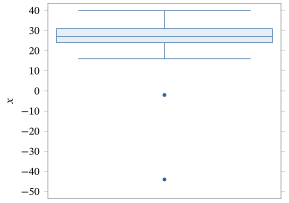
A Figura 6.3.2 apresenta um histograma desses dados sem os dois valores identificados como atípicos. Observe que o histograma parece razoavelmente simétrico; assim, parece plausível supor que esses dados venham de uma distribuição \(N(\mu, \sigma^2)\) para alguns valores de \(\mu\) e \(\sigma^2\). Por conseguinte, um modelo estatístico razoável para esses dados parece ser o modelo normal de locação e escala. No Capítulo 9, discutiremos mais a fundo como avaliar a validade da suposição de normalidade.
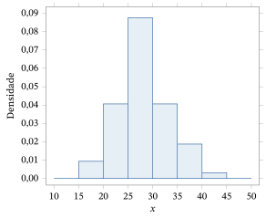
Se aceitarmos que o modelo normal de locação e escala faz sentido, surge a questão de como fazer inferências sobre os parâmetros desconhecidos \(\mu\) e \(\sigma^2\). O objetivo desta seção é desenvolver métodos para tratar problemas como esse. Os métodos desenvolvidos nesta seção dependem de características especiais do EMV num contexto dado. Na Seção 6.5, desenvolvemos uma abordagem mais geral baseada no EMV.
6.3.1 Erros Padrão, Viés e Consistência
Com base na justificativa da verossimilhança, o EMV \(\hat{\theta}(s)\) parece uma estimativa natural do verdadeiro valor de \(\theta\). Suponhamos que vamos então usar a estimativa EMV plug-in \(\hat{\psi}(s) = \psi(\hat{\theta}(s))\) para uma característica de interesse \(\psi(\theta)\) (por exemplo, \(\psi(\theta)\) pode ser o primeiro quartil ou a variância).
Numa aplicação, queremos saber quão confiável é a estimativa \(\hat{\psi}(s)\). Em outras palavras, podemos esperar que \(\hat{\psi}(s)\) esteja perto do verdadeiro valor de \(\psi(\theta)\), ou há uma chance razoável de que \(\hat{\psi}(s)\) esteja longe do verdadeiro valor? Isso nos leva a considerar a distribuição amostral37 de \(\hat{\psi}(s)\), pois ela nos diz quanta variabilidade haverá em \(\hat{\psi}(s)\) sob amostragem repetida da verdadeira distribuição \(f_\theta\). Como não sabemos qual é o verdadeiro valor de \(\theta\), temos de olhar a distribuição amostral de \(\hat{\psi}(s)\) para todo \(\theta \in \negrito{\Omega}\).
Para simplificar, substituímos isso por uma medida numérica de quão concentradas essas distribuições amostrais estão em torno de \(\psi(\theta)\). Talvez a medida mais usada da precisão de um estimador geral \(T(s)\) de \(\psi(\theta)\) (isto é, não nos restringimos aos EMVs plug-in) seja o erro quadrático médio38.
O erro quadrático médio (MSE) do estimador \(T\) de \(\psi(\theta) \in R^1\) é dado por \(\mathrm{MSE}_\theta(T)\) \({}= E_\theta((T - \psi(\theta))^2)\) para cada \(\theta \in \negrito{\Omega}\).
É claro que, quanto menor for \(\mathrm{MSE}_\theta(T)\), mais concentrada estará a distribuição amostral de \(T(s)\) em torno do valor \(\psi(\theta)\).
Olhar \(\mathrm{MSE}_\theta(T)\) como função de \(\theta\) nos dá alguma ideia de quão confiável \(T(s)\) é como estimativa do verdadeiro valor de \(\psi(\theta)\). Como não conhecemos o verdadeiro valor de \(\theta\) e, portanto, o verdadeiro valor de \(\mathrm{MSE}_\theta(T)\), os estatísticos registram uma estimativa do erro quadrático médio no verdadeiro valor. Muitas vezes, \[ \mathrm{MSE}_{\hat{\theta}(s)}(T) \] é usado para isso. Em outras palavras, avaliamos \(\mathrm{MSE}_\theta(T)\) em \(\theta = \hat{\theta}(s)\) como medida da precisão da estimativa \(T(s)\).
O resultado a seguir dá uma identidade importante para o MSE.
Se \(\psi(\theta) \in R^1\) e \(T\) é uma função real definida em \(S\) tal que \(E_\theta(T)\) existe, então \begin{equation} \mathrm{MSE}_\theta(T) = \Var_\theta(T) + (E_\theta(T) - \psi(\theta))^2. \tag{6.3.1} \end{equation}
Temos39 \begin{align*} E_\theta((T - \psi(\theta)))^2 &= E_\theta((T - E_\theta(T) + E_\theta(T) - \psi(\theta))^2) \\ &= E_\theta((T - E_\theta(T))^2) \\ &\quad + 2E_\theta((T - E_\theta(T))(E_\theta(T) - \psi(\theta))) + (E_\theta(T) - \psi(\theta))^2 \\ &= \Var_\theta(T) + (E_\theta(T) - \psi(\theta))^2 \end{align*} porque \begin{align*} E_\theta((T - E_\theta(T))(E_\theta(T) - \psi(\theta))) &= (E_\theta(T - E_\theta(T)))(E_\theta(T) - \psi(\theta)) \\ &= 0. \end{align*}
O segundo termo em (6.3.1) é o quadrado do viés do estimador \(T\).
O viés do estimador \(T\) de \(\psi(\theta)\) é dado por \(E_\theta(T) - \psi(\theta)\) sempre que \(E_\theta(T)\) existe. Quando o viés de um estimador \(T\) é 0 para todo \(\theta\), dizemos que \(T\) é um estimador não viesado40 de \(\psi\), isto é, \(T\) é não viesado sempre que \(E_\theta(T) = \psi(\theta)\) para todo \(\theta \in \negrito{\Omega}\).
Note que, quando o viés de um estimador é 0, o MSE é simplesmente a variância.
A ausência de viés nos diz que, em certo sentido, a distribuição amostral do estimador está centrada no verdadeiro valor. Para estimadores não viesados, \[ \mathrm{MSE}_{\hat{\theta}(s)}(T) = \Var_{\hat{\theta}(s)}(T) \] e \[ \Sd_{\hat{\theta}(s)}(T) = \sqrt{\Var_{\hat{\theta}(s)}(T)} \] é uma estimativa do desvio padrão41 de \(T\) e é chamado de erro padrão42 da estimativa \(T(s)\). Como princípio de boa prática estatística, sempre que informamos uma estimativa de uma quantidade, devemos também informar seu erro padrão — pelo menos quando temos um estimador não viesado —, pois isso nos diz algo sobre a precisão da estimativa.
Consideramos alguns exemplos.
Considere a função de verossimilhança \[ L(\mu \mid x_1, \ldots, x_n) = \exp\left(-\frac{n}{2\sigma_0^2}(\bar{x} - \mu)^2\right), \] obtida no Exemplo 6.1.4 para uma amostra \((x_1, \ldots, x_n)\) do modelo \(N(\mu, \sigma_0^2)\), em que \(\mu \in R^1\) é desconhecido e \(\sigma_0^2 > 0\) é conhecido. Suponha que queremos estimar \(\mu\). O EMV de \(\mu\) foi calculado no Exemplo 6.2.2: é \(\bar{x}\).
Neste caso, podemos determinar a distribuição amostral do EMV exatamente, a partir dos resultados da Seção 4.6. Temos \(\bar{X} \sim N(\mu, \sigma_0^2/n)\); logo, \(\bar{X}\) é não viesado, e \[ \mathrm{MSE}_\mu(\bar{X}) = \Var_\mu(\bar{X}) = \frac{\sigma_0^2}{n}, \] que não depende de \(\mu\). Assim, neste caso não precisamos estimar o MSE. O erro padrão da estimativa é dado por \[ \Sd_\mu(\bar{X}) = \frac{\sigma_0}{\sqrt{n}}. \] Note que o erro padrão diminui à medida que a variância populacional \(\sigma_0^2\) diminui e à medida que o tamanho da amostra \(n\) aumenta.
Suponha que \((x_1, \ldots, x_n)\) é uma amostra de uma distribuição Bernoulli\((\theta)\), em que \(\theta \in [0, 1]\) é desconhecido. Suponha que queremos estimar \(\theta\). A função de verossimilhança é dada por \[ L(\theta \mid x_1, \ldots, x_n) = \theta^{n\bar{x}}(1 - \theta)^{n(1 - \bar{x})}, \] e o EMV de \(\theta\) é \(\bar{x}\) (Exercício 6.2.2), a proporção de sucessos nas \(n\) realizações. Temos \(E_\theta(\bar{X}) = \theta\) para todo \(\theta \in [0, 1]\); logo, o EMV é um estimador não viesado de \(\theta\).
Portanto, \[ \mathrm{MSE}_\theta(\bar{X}) = \Var_\theta(\bar{X}) = \frac{\theta(1 - \theta)}{n}, \] e o MSE estimado é \[ \mathrm{MSE}_{\hat{\theta}}(\bar{X}) = \frac{\bar{x}(1 - \bar{x})}{n}. \] O erro padrão da estimativa \(\bar{x}\) é então dado por \[ \Sd_{\hat{\theta}}(\bar{X}) = \sqrt{\frac{\bar{x}(1 - \bar{x})}{n}}. \] Note como esse erro padrão é bem diferente do erro padrão de \(\bar{x}\) no Exemplo 6.3.1.
Pede-se a um instituto de pesquisa que estime a proporção de domicílios da população de um determinado distrito que vão participar de um programa de reciclagem proposto, separando o lixo em vários componentes. Os pesquisadores decidiram tomar uma amostra de \(n = 1000\) da população de aproximadamente 1,5 milhão de domicílios (falaremos mais adiante sobre como escolher esse número).
Cada entrevistado vai responder sim ou não a uma pergunta sobre sua participação. Como o tamanho da amostra é pequeno em relação ao tamanho da população, podemos supor que estamos amostrando de um modelo Bernoulli\((\theta)\), em que \(\theta \in [0, 1]\) é a proporção de indivíduos da população que vão responder sim.
Feita a amostragem, houve 790 entrevistados que responderam sim e 210 que responderam não. Portanto, o EMV de \(\theta\) é \[ \hat{\theta} = \bar{x} = \frac{790}{1000} = 0{,}79 \] e o erro padrão da estimativa é \[ \sqrt{\frac{\bar{x}(1 - \bar{x})}{1000}} = \sqrt{\frac{0{,}79\,(1 - 0{,}79)}{1000}} = 0{,}01288. \]
Observe que não está totalmente claro como devemos interpretar o valor 0,01288. Ele significa que nossa estimativa 0,79 é muito precisa, razoavelmente precisa ou nada precisa? Discutiremos isso mais a fundo na Seção 6.3.2.
Suponha que \((x_1, \ldots, x_n)\) é uma amostra de uma distribuição \(N(\mu, \sigma^2)\), em que \(\mu \in R^1\) e \(\sigma^2 > 0\) são desconhecidos. O parâmetro desse modelo é dado por \(\theta = (\mu, \sigma^2) \in \negrito{\Omega}\) \({}= R^1 \times (0, \infty)\). Suponha que queremos estimar \(\mu = \psi(\mu, \sigma^2)\), isto é, só a primeira coordenada do parâmetro completo do modelo.
No Exemplo 6.1.8, determinamos que a função de verossimilhança é dada por \[ L(\mu, \sigma^2 \mid x_1, \ldots, x_n) = (2\pi\sigma^2)^{-n/2} \exp\left(-\frac{n}{2\sigma^2}(\bar{x} - \mu)^2\right) \exp\left(-\frac{n - 1}{2\sigma^2}s^2\right). \] No Exemplo 6.2.6, mostramos que o EMV de \(\theta\) é \[ \left(\bar{x}, \frac{n - 1}{n}s^2\right). \] Além disso, pelo Teorema 4.6.6, a distribuição amostral do EMV é dada por \(\bar{X} \sim N(\mu, \sigma^2/n)\), independente de \((n - 1)S^2/\sigma^2 \sim \chi^2(n - 1)\).
O EMV plug-in de \(\mu\) é \(\bar{x}\). Esse estimador é não viesado e tem \[ \mathrm{MSE}_\theta(\bar{X}) = \Var_\theta(\bar{X}) = \frac{\sigma^2}{n}. \] Como \(\sigma^2\) é desconhecido, estimamos \(\mathrm{MSE}_\theta(\bar{X})\) por43 \[ \mathrm{MSE}_\theta(\bar{X}) = \frac{\frac{n - 1}{n}s^2}{n} = \frac{n - 1}{n^2}s^2 \approx \frac{s^2}{n}. \] O valor \(s^2/n\) é muito usado no lugar de \(\mathrm{MSE}_{\hat{\theta}}(\bar{X})\) porque (Corolário 4.6.2) \[ E_\theta(S^2) = \sigma^2, \] isto é, \(S^2\) é um estimador não viesado de \(\sigma^2\). A quantidade \(s/\sqrt{n}\) é chamada de erro padrão da estimativa \(\bar{x}\).
No Exemplo 5.5.6, temos uma amostra de \(n = 30\) alturas (em polegadas) de estudantes. Calculamos \(\bar{x} = 64{,}517\) como nossa estimativa da altura média populacional \(\mu\). Além disso, obtivemos a estimativa \(s = 2{,}379\) de \(\sigma\). Portanto, o erro padrão da estimativa \(\bar{x} = 64{,}517\) é \(s/\sqrt{30} = 2{,}379/\sqrt{30} = 0{,}43434\). Como no Exemplo 6.3.3, ficamos diante da questão de interpretar exatamente o que esse número significa em termos da precisão da estimativa.
Consistência de Estimadores
Talvez a propriedade mais importante que um estimador \(T\) de uma característica \(\psi(\theta)\) pode ter é ser consistente. Em linhas gerais, isso significa que, à medida que aumentamos a quantidade de dados coletados, a sequência de estimativas deve convergir para o verdadeiro valor de \(\psi(\theta)\). Para ver por que essa é uma propriedade necessária de qualquer procedimento de estimação, considere o contexto de amostragem de população finita discutido na Seção 5.4.1. Quando o tamanho da amostra é igual ao tamanho da população, é claro que temos a informação completa e podemos calcular exatamente qualquer característica da distribuição de qualquer medição definida na população. Assim, seria um erro usar, para uma característica de interesse, um procedimento de estimação que não convergisse para o verdadeiro valor da característica à medida que aumentamos o tamanho da amostra.
Felizmente, já desenvolvemos no Capítulo 4 a matemática necessária para definir com precisão o que entendemos por consistência.
Diz-se que uma sequência de estimativas \(T_1, T_2, \ldots\) é consistente (em probabilidade) para \(\psi(\theta)\) se \(T_n \xrightarrow{P_\theta} \psi(\theta)\) quando \(n \to \infty\), para todo \(\theta \in \negrito{\Omega}\). Diz-se que uma sequência de estimativas \(T_1, T_2, \ldots\) é consistente (quase certamente44) para \(\psi(\theta)\) se \(T_n \xrightarrow{\text{q.c.}} \psi(\theta)\) quando \(n \to \infty\), para todo \(\theta \in \negrito{\Omega}\).
Observe que o Teorema 4.3.1 diz que, se a sequência é consistente quase certamente, então ela também é consistente em probabilidade.
Considere agora uma amostra \((x_1, \ldots, x_n)\) de um modelo \(\{f_\theta : \theta \in \negrito{\Omega}\}\) e seja \(T_n = n^{-1}\sum_{i=1}^{n} x_i\) a \(n\)-ésima média amostral, como estimador de \(\psi(\theta) = E_\theta(X)\), que supomos existir. As leis fraca e forte dos grandes números nos dão imediatamente a consistência da sequência \(T_1, T_2, \ldots\) para \(\psi(\theta)\). Vemos de imediato que isso dá a consistência de alguns dos estimadores discutidos nesta seção. Na verdade, o Teorema 6.5.2 dá a consistência do EMV em circunstâncias muito gerais. Além disso, o EMV plug-in também será consistente sob restrições fracas sobre \(\psi\). Assim, podemos pensar na estimação por máxima verossimilhança como algo que faz a coisa certa num problema, pelo menos do ponto de vista da consistência.
De modo mais geral, devemos sempre restringir nossa atenção a procedimentos estatísticos que funcionam corretamente à medida que a quantidade de dados aumenta. Aumentar a quantidade de dados significa que estamos adquirindo mais informação e, portanto, reduzindo nossa incerteza, de modo que, no limite, sabemos tudo. Um procedimento estatístico inconsistente poderia induzir a erro.
6.3.2 Intervalos de Confiança
Embora o erro padrão pareça uma quantidade razoável para medir a precisão de uma estimativa de \(\psi(\theta)\), sua interpretação ainda não está totalmente clara neste ponto. Acontece que ela está intrinsecamente ligada à ideia de intervalo de confiança45.
Considere a construção de um intervalo \[ C(s) = (l(s), u(s)), \] baseado nos dados \(s\), que acreditamos ter alta probabilidade de conter o verdadeiro valor de \(\psi(\theta)\). Para isso, temos de especificar o extremo inferior \(l(s)\) e o extremo superior \(u(s)\) para cada valor \(s\) dos dados. Como devemos fazer isso?
Uma abordagem é especificar uma probabilidade \(\gamma \in [0, 1]\) e então exigir que o intervalo aleatório \(C\) tenha a propriedade de confiança, especificada na definição a seguir.
Um intervalo \(C(s) = (l(s), u(s))\) é um intervalo de confiança \(\gamma\) para \(\psi(\theta)\) se \(P_\theta(\psi(\theta) \in C(s))\) \({}= P_\theta(l(s) \le \psi(\theta) \le u(s)) \ge \gamma\) para todo \(\theta \in \negrito{\Omega}\). Dizemos que \(\gamma\) é o nível de confiança do intervalo.
Assim, \(C\) é um intervalo de confiança \(\gamma\) para \(\psi(\theta)\) se, sempre que amostramos de \(P_\theta\), a probabilidade de que \(\psi(\theta)\) esteja no intervalo é pelo menos igual a \(\gamma\). Para um conjunto de dados dado, um intervalo assim ou cobre \(\psi(\theta)\) ou não cobre. Note, portanto, que não é correto dizer que uma realização particular de uma região de confiança46 \(\gamma\) tem probabilidade \(\gamma\) de conter o verdadeiro valor de \(\psi(\theta)\).
Se escolhermos \(\gamma\) como um valor próximo de 1, teremos alta confiança de que o verdadeiro valor de \(\psi(\theta)\) está em \(C(s)\). É claro que sempre podemos tomar \(C(s) = R^1\) (um intervalo bem grande!), e então temos 100% de confiança de que o intervalo contém o verdadeiro valor. Mas isso não nos diz nada que já não soubéssemos. Assim, a ideia é tentar usar a informação dos dados para construir um intervalo tal que tenhamos alta confiança, digamos \(\gamma = 0{,}95\) ou \(\gamma = 0{,}99\), de que ele contém o verdadeiro valor e que não seja mais longo que o necessário. Interpretamos então o comprimento do intervalo como medida de quão precisamente os dados nos permitem conhecer o verdadeiro valor de \(\psi(\theta)\).
Intervalos de Confiança \(z\)
Considere o exemplo a seguir, que apresenta uma abordagem para a construção de intervalos de confiança.
Suponha que temos uma amostra \((x_1, \ldots, x_n)\) do modelo \(N(\mu, \sigma_0^2)\), em que \(\mu \in R^1\) é desconhecido e \(\sigma_0^2 > 0\) é conhecido. A função de verossimilhança é a especificada no Exemplo 6.3.1. Suponha que queremos um intervalo de confiança para \(\mu\).
O raciocínio que fundamenta a função de verossimilhança leva naturalmente à seguinte restrição para uma região como essa: se \(\mu_1 \in C(x_1, \ldots, x_n)\) e \[ L(\mu_2 \mid x_1, \ldots, x_n) \ge L(\mu_1 \mid x_1, \ldots, x_n), \] então devemos ter também \(\mu_2 \in C(x_1, \ldots, x_n)\). Essa restrição decorre da verossimilhança, porque o modelo e os dados apoiam \(\mu_2\) pelo menos tanto quanto \(\mu_1\). Assim, se concluímos que \(\mu_1\) é um valor plausível, \(\mu_2\) também é.
Portanto, \(C(x_1, \ldots, x_n)\) é da forma \[ C(x_1, \ldots, x_n) = \{\mu : L(\mu \mid x_1, \ldots, x_n) \ge k(x_1, \ldots, x_n)\} \] para algum \(k(x_1, \ldots, x_n)\), isto é, \(C(x_1, \ldots, x_n)\) é um intervalo de verossimilhança para \(\mu\). Então \begin{align*} C(x_1, \ldots, x_n) &= \left\{\mu : \exp\left(-\frac{n}{2\sigma_0^2}(\bar{x} - \mu)^2\right) \ge k(x_1, \ldots, x_n)\right\} \\ &= \left\{\mu : -\frac{n}{2\sigma_0^2}(\bar{x} - \mu)^2 \ge \ln k(x_1, \ldots, x_n)\right\} \\ &= \left\{\mu : (\bar{x} - \mu)^2 \le -\frac{2\sigma_0^2}{n}\ln k(x_1, \ldots, x_n)\right\} \\ &= \left[\bar{x} - k^*(x_1, \ldots, x_n)\frac{\sigma_0}{\sqrt{n}},\ \bar{x} + k^*(x_1, \ldots, x_n)\frac{\sigma_0}{\sqrt{n}}\right], \end{align*} em que \(k^*(x_1, \ldots, x_n)\) \({}= \sqrt{-2\ln k(x_1, \ldots, x_n)}\).
Resta-nos escolher \(k\), ou, equivalentemente, \(k^*\), de modo que o intervalo \(C\) seja um intervalo de confiança \(\gamma\) para \(\mu\). Talvez a escolha mais simples seja tentar escolher \(k^*\) de modo que \(k^*(x_1, \ldots, x_n)\) seja constante e que o intervalo seja o mais curto possível. Como \begin{equation} Z = \frac{\bar{X} - \mu}{\sigma_0/\sqrt{n}} \sim N(0, 1), \tag{6.3.2} \end{equation} temos47 \begin{align*} \gamma &\le P_\mu(\mu \in C(x_1, \ldots, x_n)) = P_\mu\left(\bar{X} - k^*\frac{\sigma_0}{\sqrt{n}} \le \mu \le \bar{X} + k^*\frac{\sigma_0}{\sqrt{n}}\right) \\ &= P_\mu\left(-k^* \le \frac{\bar{X} - \mu}{\sigma_0/\sqrt{n}} \le c\right) = P_\mu\left(\left\lvert\frac{\bar{X} - \mu}{\sigma_0/\sqrt{n}}\right\rvert \le k^*\right) \\ &= 1 - 2(1 - \Phi(k^*)) \tag{6.3.3} \end{align*} para todo \(\mu \in R^1\), em que \(\Phi\) é a função de distribuição acumulada48 da \(N(0, 1)\). Temos igualdade em (6.3.3) sempre que \[ \Phi(k^*) = \frac{1 + \gamma}{2}, \] e assim \(k^* = z_{(1 + \gamma)/2}\), em que \(z_\alpha\) denota o \(\alpha\)-ésimo quantil da distribuição \(N(0, 1)\). Essa é a menor constante \(k^*\) que satisfaz (6.3.3).
Mostramos que o intervalo de verossimilhança dado por \begin{equation} \left[\bar{x} - z_{(1 + \gamma)/2}\frac{\sigma_0}{\sqrt{n}},\ \bar{x} + z_{(1 + \gamma)/2}\frac{\sigma_0}{\sqrt{n}}\right] \tag{6.3.4} \end{equation} é um intervalo de confiança \(\gamma\) exato para \(\mu\). Como esses intervalos se baseiam na estatística \(z\), dada por (6.3.2), eles são chamados de intervalos de confiança \(z\). Por exemplo, se tomarmos \(\gamma = 0{,}95\), então \((1 + \gamma)/2 = 0{,}975\) e, de um pacote estatístico (ou da Tabela D.2 do Apêndice D), obtemos \(z_{0{,}975} = 1{,}96\). Portanto, em amostragem repetida, 95% dos intervalos da forma \[ \left[\bar{x} - 1{,}96\,\frac{\sigma_0}{\sqrt{n}},\ \bar{x} + 1{,}96\,\frac{\sigma_0}{\sqrt{n}}\right] \] vão conter o verdadeiro valor de \(\mu\).
Isso está ilustrado na Figura 6.3.3. Nela, traçamos os extremos superior e inferior dos intervalos de confiança 0,95 para \(\mu\) em cada uma de \(N = 25\) amostras de tamanho \(n = 10\) geradas de uma distribuição \(N(0, 1)\). A teoria diz que, quando \(N\) é grande, aproximadamente 95% desses intervalos vão conter o verdadeiro valor \(\mu = 0\). No gráfico, cobertura significa que o extremo inferior (indicado por \(\bullet\)) tem de estar abaixo da reta horizontal em 0 e que o extremo superior (indicado por \(\circ\)) tem de estar acima dessa reta horizontal. Vemos que só o quarto e o vigésimo terceiro intervalos de confiança não contêm 0; assim, \(23/25 = 92\%\) dos intervalos contêm 0. Quando \(N \to \infty\), essa proporção vai convergir para 0,95.
Observe que o intervalo (6.3.4) é simétrico em torno de \(\bar{x}\). Por isso, o semicomprimento49 desse intervalo, \[ z_{(1 + \gamma)/2}\frac{\sigma_0}{\sqrt{n}}, \] é uma medida da precisão da estimativa \(\bar{x}\). O semicomprimento costuma ser chamado de margem de erro.
A partir da margem de erro, vemos agora como interpretar o erro padrão: o erro padrão controla os comprimentos dos intervalos de confiança para o \(\mu\) desconhecido. Por exemplo, sabemos que, com probabilidade aproximadamente igual a 1 (na verdade, \(\gamma = 0{,}9974\)), o intervalo \([\bar{x} \pm 3\sigma_0/\sqrt{n}]\) contém o verdadeiro valor de \(\mu\).
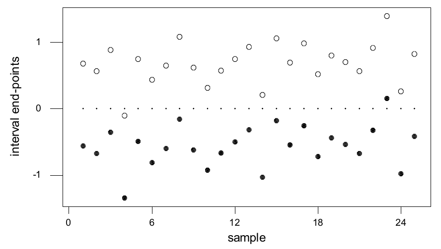
O Exemplo 6.3.6 serve de exemplo-padrão de como os intervalos de confiança costumam ser construídos em estatística. Basicamente, a ideia é tomar uma estimativa e então olhar os intervalos formados tomando intervalos simétricos em torno da estimativa, por meio de múltiplos do seu erro padrão. Ilustramos isso com mais alguns exemplos.
Suponha que \((x_1, \ldots, x_n)\) é uma amostra de uma distribuição Bernoulli\((\theta)\), em que \(\theta \in [0, 1]\) é desconhecido, e que queremos um intervalo de confiança \(\gamma\) para \(\theta\). Seguindo o Exemplo 6.3.2, temos que o EMV é \(\bar{x}\) (ver Exercício 6.2.2) e que o erro padrão dessa estimativa é \[ \sqrt{\frac{\bar{x}(1 - \bar{x})}{n}}. \]
Para esse modelo, os intervalos de verossimilhança têm a forma \[ C(x_1, \ldots, x_n) = \{\theta : \theta^{n\bar{x}}(1 - \theta)^{n(1 - \bar{x})} \ge k(x_1, \ldots, x_n)\} \] para algum \(k(x_1, \ldots, x_n)\). Restringindo-nos de novo a \(k\) constante, vemos que, para determinar esses intervalos, temos de encontrar as raízes de equações da forma \[ \theta^{n\bar{x}}(1 - \theta)^{n(1 - \bar{x})} = k(x_1, \ldots, x_n). \] Embora métodos numéricos de busca de raízes deem conta disso com bastante facilidade, essa abordagem não é muito tratável quando queremos encontrar o valor adequado de \(k(x_1, \ldots, x_n)\) que dê um intervalo de confiança \(\gamma\).
Para evitar essas complicações computacionais, é comum usar uma verossimilhança e um intervalo de confiança aproximados, baseados no teorema central do limite50. O teorema central do limite (ver Exemplo 4.4.9) implica que \[ \frac{\sqrt{n}\,(\bar{X} - \theta)}{\sqrt{\theta(1 - \theta)}} \xrightarrow{D} N(0, 1) \] quando \(n \to \infty\). Além disso, uma generalização do teorema central do limite (ver Seção 4.4.2) mostra que \[ Z = \frac{\sqrt{n}\,(\bar{X} - \theta)}{\sqrt{\bar{X}(1 - \bar{X})}} \xrightarrow{D} N(0, 1). \] Portanto, temos \begin{align*} \gamma &= \lim_{n \to \infty} P_\theta\left(-z_{(1 + \gamma)/2} \le \frac{\sqrt{n}\,(\bar{X} - \theta)}{\sqrt{\bar{X}(1 - \bar{X})}} \le z_{(1 + \gamma)/2}\right) \\ &= \lim_{n \to \infty} P_\theta\left(\bar{X} - z_{(1 + \gamma)/2}\sqrt{\frac{\bar{X}(1 - \bar{X})}{n}} \le \theta \le \bar{X} + z_{(1 + \gamma)/2}\sqrt{\frac{\bar{X}(1 - \bar{X})}{n}}\right), \end{align*} e \begin{equation} \left[\bar{x} - z_{(1 + \gamma)/2}\sqrt{\frac{\bar{x}(1 - \bar{x})}{n}},\ \bar{x} + z_{(1 + \gamma)/2}\sqrt{\frac{\bar{x}(1 - \bar{x})}{n}}\right] \tag{6.3.5} \end{equation} é um intervalo de confiança \(\gamma\) aproximado para \(\theta\). Observe que ele tem a mesma forma do intervalo do Exemplo 6.3.6, exceto que o erro padrão mudou.
Por exemplo, se queremos um intervalo de confiança 0,95 aproximado para \(\theta\) no Exemplo 6.3.3, então, com base no valor observado \(\bar{x} = 0{,}79\), obtemos \[ \left[0{,}79 \pm 1{,}96\sqrt{\frac{0{,}79\,(1 - 0{,}79)}{1000}}\right] = [0{,}76475; 0{,}81525]. \] A margem de erro, neste caso, é igual a 0,025245; assim, podemos concluir que conhecemos a verdadeira proporção com precisão razoável com base na nossa amostra. Na verdade, pode ser que essa precisão não seja suficiente, ou mesmo que seja boa demais. Discutiremos métodos para garantir que se atinja a precisão adequada na Seção 6.3.5.
O intervalo de confiança \(\gamma\) obtido aqui para \(\theta\) é um dos muitos que você verá recomendados na literatura. Lembre que (6.3.5) é só um intervalo de confiança \(\gamma\) aproximado para \(\theta\), e \(n\) pode precisar ser grande para que a aproximação seja precisa. Em outras palavras, o verdadeiro nível de confiança de (6.3.5) não será igual a \(\gamma\) e pode ficar longe desse valor se \(n\) for pequeno demais. Em particular, se o verdadeiro \(\theta\) estiver perto de 0 ou de 1, \(n\) pode precisar ser muito grande. Numa aplicação real, costumamos ter alguma ideia de uma pequena faixa de valores possíveis que a proporção populacional \(\theta\) pode assumir. Por isso, é aconselhável fazer alguns estudos de simulação para avaliar se (6.3.5) vai ou não fornecer uma aproximação aceitável para \(\theta\) nessa faixa (ver Exercício Computacional 6.3.21).
Intervalos de Confiança \(t\)
Consideramos agora intervalos de confiança para \(\mu\) num modelo \(N(\mu, \sigma^2)\), quando abandonamos a suposição irrealista de que conhecemos a variância populacional.
Suponha que \((x_1, \ldots, x_n)\) é uma amostra de uma distribuição \(N(\mu, \sigma^2)\), em que \(\mu \in R^1\) e \(\sigma > 0\) são desconhecidos. O parâmetro desse modelo é dado por \(\theta = (\mu, \sigma^2) \in \negrito{\Omega}\) \({}= R^1 \times (0, \infty)\). Suponha que queremos formar intervalos de confiança para \(\mu = \psi(\mu, \sigma^2)\).
A função de verossimilhança, neste caso, é uma função de duas variáveis, \(\mu\) e \(\sigma^2\), e por isso o raciocínio que usamos no Exemplo 6.3.6 para determinar a forma do intervalo de confiança não se aplica diretamente. No Exemplo 6.3.4, obtivemos \(s/\sqrt{n}\) como o erro padrão da estimativa \(\bar{x}\) de \(\mu\). Assim, restringimos nossa atenção a intervalos de confiança da forma \[ C(x_1, \ldots, x_n) = \left[\bar{x} - k\frac{s}{\sqrt{n}},\ \bar{x} + k\frac{s}{\sqrt{n}}\right] \] para alguma constante \(k\).
Temos então \begin{align*} &P_{(\mu, \sigma^2)}\left(\bar{X} - k\frac{S}{\sqrt{n}} \le \mu \le \bar{X} + k\frac{S}{\sqrt{n}}\right) = P_{(\mu, \sigma^2)}\left(-k \le \frac{\bar{X} - \mu}{S/\sqrt{n}} \le k\right) \\ &\quad = P_{(\mu, \sigma^2)}\left(\left\lvert\frac{\bar{X} - \mu}{S/\sqrt{n}}\right\rvert \le k\right) = 1 - 2(1 - G(k\,;\, n - 1)), \end{align*} em que \(G(\cdot\,;\, n - 1)\) é a função de distribuição de \begin{equation} T = \frac{\bar{X} - \mu}{S/\sqrt{n}}. \tag{6.3.6} \end{equation} Ora, pelo Teorema 4.6.6, \[ \frac{\bar{X} - \mu}{\sigma/\sqrt{n}} \sim N(0, 1), \] independente de \((n - 1)S^2/\sigma^2 \sim \chi^2(n - 1)\). Portanto, pela Definição 4.6.2, \[ T = \left(\frac{\bar{X} - \mu}{\sigma/\sqrt{n}}\right) \Bigg/ \sqrt{\frac{(n - 1)S^2}{\sigma^2}} = \frac{\bar{X} - \mu}{S/\sqrt{n}} \sim t(n - 1). \] Assim, se tomarmos \[ k = t_{(1 + \gamma)/2}(n - 1), \] em que \(t_\alpha(\lambda)\) é o \(\alpha\)-ésimo quantil da distribuição \(t(\lambda)\), então \[ \left[\bar{x} - t_{(1 + \gamma)/2}(n - 1)\frac{s}{\sqrt{n}},\ \bar{x} + t_{(1 + \gamma)/2}(n - 1)\frac{s}{\sqrt{n}}\right] \] é um intervalo de confiança \(\gamma\) exato para \(\mu\). Os quantis das distribuições \(t\) podem ser obtidos num pacote estatístico (ou na Tabela D.4 do Apêndice D). Como esses intervalos se baseiam na estatística \(t\), dada por (6.3.6), eles são chamados de intervalos de confiança \(t\).
Esses intervalos de confiança para \(\mu\) tendem a ser mais longos que os obtidos no Exemplo 6.3.6, e isso reflete a incerteza maior por \(\sigma\) ser desconhecido. Quando \(n = 5\), pode-se mostrar que \(\bar{x} \pm 3s/\sqrt{n}\) é um intervalo de confiança 0,97. Quando substituímos \(s\) pelo verdadeiro valor de \(\sigma\), \(\bar{x} \pm 3\sigma/\sqrt{n}\) é um intervalo de confiança 0,9974.
Como já observado, os intervalos \(\bar{x} \pm ks/\sqrt{n}\) não são intervalos de verossimilhança para \(\mu\). Assim, a justificativa para usá-los tem de ser um pouco diferente da dada no Exemplo 6.3.6. Na verdade, a verossimilhança é definida para o parâmetro completo \(\theta = (\mu, \sigma^2)\), e não está totalmente claro como extrair inferências dela quando nosso interesse está num parâmetro marginal como \(\mu\). Há várias tentativas diferentes de resolver essa questão. Aqui, porém, nos apoiamos no caráter intuitivamente razoável desses intervalos. No Capítulo 7, veremos que esses intervalos também surgem de outra abordagem da inferência, o que reforça nossa convicção de que o uso desses intervalos é apropriado.
No Exemplo 6.3.5, temos uma amostra de \(n = 30\) alturas (em polegadas) de estudantes. Calculamos \(\bar{x} = 64{,}517\) como nossa estimativa de \(\mu\), com erro padrão \(s/\sqrt{30} = 0{,}43434\). Usando software (ou a Tabela D.4), obtemos \(t_{0{,}975}(29) = 2{,}0452\). Assim, um intervalo de confiança 0,95 para \(\mu\) é dado por \[ [64{,}517 \pm 2{,}0452\,(0{,}43434)] = [63{,}629; 65{,}405]. \] A margem de erro é 0,888; assim, temos bastante confiança de que a estimativa \(\bar{x} = 64{,}517\) está a menos de uma polegada da verdadeira altura média.
6.3.3 Testes de Hipóteses e Valores-p
Como discutido na Seção 5.5.3, outra classe de procedimentos de inferência trata do que chamamos de avaliação de hipóteses51. Suponha que exista uma teoria, conjectura ou hipótese que especifica um valor para uma característica de interesse \(\psi(\theta)\), digamos \(\psi(\theta) = \psi_0\). Muitas vezes essa hipótese é escrita como \(H_0 : \psi(\theta) = \psi_0\) e é chamada de hipótese nula52.
A palavra nula é usada porque, como veremos no Capítulo 10, o valor especificado em \(H_0\) costuma estar associado a um tratamento53 que não tem efeito. Por exemplo, se queremos avaliar se um novo medicamento proposto trata uma determinada condição melhor ou não do que um tratamento padrão, a hipótese nula muitas vezes equivalerá a dizer que o novo medicamento não traz melhora nenhuma. Claro, precisamos mostrar como isso pode ser expresso em termos de alguma característica \(\psi(\theta)\) de uma distribuição desconhecida, e faremos isso no Capítulo 10.
O estatístico fica então encarregado de avaliar se o \(s\) observado está ou não de acordo com essa hipótese. Assim, queremos avaliar a evidência que há em \(s\) de que \(\psi(\theta) = \psi_0\) seja verdadeira. Um procedimento estatístico que faz isso pode ser chamado de avaliação de hipóteses, teste de significância ou teste de hipóteses54. Um procedimento desses envolve medir quão surpreendente é o \(s\) observado quando supomos que \(H_0\) é verdadeira. Está claro que \(s\) é surpreendente sempre que \(s\) está numa região de baixa probabilidade para cada uma das distribuições especificadas pela hipótese nula, isto é, para cada uma das distribuições do modelo para as quais \(\psi(\theta) = \psi_0\) é verdadeira. Se decidimos que os dados são surpreendentes sob \(H_0\), então isso é evidência contra \(H_0\). Essa avaliação é feita calculando uma probabilidade, chamada de valor-p, de modo que valores pequenos do valor-p indicam que \(s\) é surpreendente.
É importante lembrar sempre que, embora um valor-p seja uma probabilidade, essa probabilidade é uma medida de surpresa. Valores pequenos do valor-p nos indicam que ocorreu um evento surpreendente se a hipótese nula \(H_0\) era verdadeira. Um valor-p grande não é evidência de que a hipótese nula seja verdadeira. Além disso, um valor-p não é a probabilidade de a hipótese nula ser verdadeira. O poder de um método de avaliação de hipóteses (ver Seção 6.3.6) também influi no modo como interpretamos um valor-p.
Testes \(z\)
Agora ilustramos o cálculo e o uso de valores-p por meio de vários exemplos.
Suponha que temos uma amostra \((x_1, \ldots, x_n)\) do modelo \(N(\mu, \sigma_0^2)\), em que \(\mu \in R^1\) é desconhecido e \(\sigma_0^2 > 0\) é conhecido, e que temos uma teoria que especifica um valor para a média desconhecida, digamos, \(H_0 : \mu = \mu_0\). Note que, pelo Corolário 4.6.1, quando \(H_0\) é verdadeira, a distribuição amostral do EMV é dada por \(\bar{X} \sim N(\mu_0, \sigma_0^2/n)\).
Assim, um método para avaliar se a hipótese \(H_0\) faz sentido ou não é comparar o valor observado \(\bar{x}\) com essa distribuição. Se \(\bar{x}\) está numa região de baixa probabilidade para a distribuição \(N(\mu_0, \sigma_0^2/n)\), então isso é evidência de que \(H_0\) é falsa. Como a densidade da distribuição \(N(\mu_0, \sigma_0^2/n)\) é unimodal, as regiões de baixa probabilidade dessa distribuição ficam nas suas caudas. Quanto mais longe nas caudas estiver \(\bar{x}\), mais surpreendente isso será quando \(H_0\) for verdadeira e, portanto, mais evidência teremos contra \(H_0\).
Na Figura 6.3.4, traçamos uma densidade do EMV junto com um valor observado \(\bar{x}\) que fica bem longe na cauda direita da distribuição. Esse seria claramente um valor surpreendente para essa distribuição.
Assim, queremos medir quão longe nas caudas da distribuição \(N(\mu_0, \sigma_0^2/n)\) está o valor \(\bar{x}\). Podemos fazer isso calculando a probabilidade de observar um valor de \(\bar{x}\) tão longe quanto \(\bar{x}\), ou mais longe ainda, do centro da distribuição sob \(H_0\). O centro dessa distribuição é dado por \(\mu_0\). Como \begin{equation} Z = \frac{\bar{X} - \mu_0}{\sigma_0/\sqrt{n}} \sim N(0, 1) \tag{6.3.7} \end{equation} sob \(H_0\), o valor-p é então dado por \begin{align*} P_{\mu_0}\left( \lvert \bar{X} - \mu_0 \rvert \ge \lvert \bar{x} - \mu_0 \rvert \right) &= P_{\mu_0}\left( \left\lvert \frac{\bar{X} - \mu_0}{\sigma_0/\sqrt{n}} \right\rvert \ge \left\lvert \frac{\bar{x} - \mu_0}{\sigma_0/\sqrt{n}} \right\rvert \right) \\ &= 2\left[ 1 - \Phi\left( \left\lvert \frac{\bar{x} - \mu_0}{\sigma_0/\sqrt{n}} \right\rvert \right) \right], \end{align*} em que \(\Phi\) denota a função de distribuição da \(N(0, 1)\). Se o valor-p é pequeno, então temos evidência de que \(\bar{x}\) é um valor surpreendente, porque isso nos diz que \(\bar{x}\) está numa cauda da distribuição \(N(\mu_0, \sigma_0^2/n)\). Como esse valor-p se baseia na estatística \(Z\) definida em (6.3.7), esse procedimento é chamado de teste \(z\).
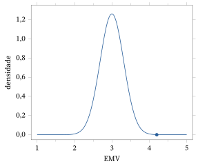
Geramos a seguinte amostra de \(n = 10\) de uma distribuição \(N(26, 4)\).
| \(29{,}0651\) | \(27{,}3980\) | \(23{,}4346\) | \(26{,}3665\) | \(23{,}4994\) |
|---|---|---|---|---|
| \(28{,}6592\) | \(25{,}5546\) | \(29{,}4477\) | \(28{,}0979\) | \(25{,}2850\) |
Embora conheçamos o verdadeiro valor de \(\mu\), vamos supor que não o conhecemos e testar a hipótese \(H_0 : \mu = 25\). Para avaliá-la, calculamos (usando um pacote estatístico para avaliar \(\Phi\)) o valor-p \begin{align*} 2\left[ 1 - \Phi\left( \frac{\lvert \bar{x} - \mu_0 \rvert}{\sigma_0/\sqrt{n}} \right) \right] &= 2\left[ 1 - \Phi\left( \frac{\lvert 26{,}6808 - 25 \rvert}{2/\sqrt{10}} \right) \right] \\ &= 2\,(1 - \Phi(2{,}6576)) = 0{,}0078, \end{align*} que é bem pequeno. Por exemplo, se a hipótese \(H_0\) está correta, então, em amostragens repetidas, veríamos dados que dão um valor de \(\bar{x}\) pelo menos tão surpreendente quanto o que observamos apenas \(0{,}78\%\) das vezes. Assim, concluímos que temos evidência contra \(H_0\) ser verdadeira, o que, claro, é adequado neste caso.
Se você não usar um pacote estatístico para avaliar \(\Phi(2{,}6576)\), então terá de usar a Tabela D.2 do Apêndice D para obter uma aproximação. Por exemplo, arredondando \(2{,}6576\) para \(2{,}66\), a Tabela D.2 dá \(\Phi(2{,}66) = 0{,}9961\), e o valor-p aproximado é \(2\,(1 - 0{,}9961) = 0{,}0078\). Neste caso, a aproximação é exata até a quarta casa decimal.
Suponha que \((x_1, \ldots, x_n)\) seja uma amostra de uma distribuição Bernoulli\((\theta)\), em que \(\theta \in [0, 1]\) é desconhecido, e que queremos testar \(H_0 : \theta = \theta_0\). Como no Exemplo 6.3.7, quando \(H_0\) é verdadeira, temos \[ Z = \frac{\sqrt{n}\left( \bar{X} - \theta_0 \right)}{\sqrt{\theta_0\,(1 - \theta_0)}} \xrightarrow{D} N(0, 1) \] quando \(n \to \infty\). Assim, podemos testar essa hipótese calculando o valor-p aproximado \[ P\left( \lvert Z \rvert \ge \left\lvert \frac{\sqrt{n}\,(\bar{x} - \theta_0)}{\sqrt{\theta_0\,(1 - \theta_0)}} \right\rvert \right) \approx 2\left[ 1 - \Phi\left( \left\lvert \frac{\sqrt{n}\,(\bar{x} - \theta_0)}{\sqrt{\theta_0\,(1 - \theta_0)}} \right\rvert \right) \right] \] quando \(n\) é grande.
Como exemplo específico, suponha que um vidente afirme ter a capacidade de prever o resultado do lançamento aleatório de uma moeda honesta. Para testar isso, uma moeda foi lançada 100 vezes, e os palpites do vidente foram registrados como sucessos ou fracassos. Foi observado um total de 54 sucessos.
Se o vidente não tem capacidade de previsão, então esperaríamos que os sucessos ocorressem ao acaso, assim como as caras ocorrem quando lançamos a moeda. Portanto, queremos testar a hipótese nula de que a probabilidade \(\theta\) de ocorrer um sucesso é igual a \(\theta_0 = 1/2\). Isso equivale a dizer que o vidente não tem capacidade de previsão. O EMV é \(0{,}54\), e o valor-p aproximado é dado por \[ 2\left[ 1 - \Phi\left( \left\lvert \frac{\sqrt{100}\,(0{,}54 - 0{,}5)}{\sqrt{0{,}5\,(1 - 0{,}5)}} \right\rvert \right) \right] = 2\,(1 - \Phi(0{,}8)) = 2\,(1 - 0{,}7881) = 0{,}4238, \] e parece que não temos evidência de que \(H_0\) seja falsa, isto é, nenhum motivo para duvidar de que o vidente não tem capacidade de previsão.
Muitas vezes, valores de corte como \(0{,}05\) ou \(0{,}01\) são usados para determinar se os resultados de um teste são significativos ou não. Por exemplo, se o valor-p é menor que \(0{,}05\), então se diz que os resultados são estatisticamente significativos ao nível de 5%. Não há nada de sagrado no nível de \(0{,}05\), porém, e valores diferentes podem ser usados conforme a aplicação. Por exemplo, se a consequência de concluir que temos evidência contra \(H_0\) é que algo muito caro ou importante vai acontecer, então naturalmente podemos exigir que o valor de corte seja bem menor que \(0{,}05\).
Quando a Significância Estatística É Significativa na Prática?
Também é importante apontar aqui a diferença entre significância estatística e significância prática. Considere a situação do Exemplo 6.3.9 em que o verdadeiro valor de \(\mu\) é \(\mu_1 \ne \mu_0\), mas \(\mu_1\) está tão perto de \(\mu_0\) que, na prática, os dois são indistinguíveis. Pela lei forte dos grandes números55, temos que \(\bar{X} \xrightarrow{\text{q.c.}} \mu_1\) quando \(n \to \infty\) e, portanto, \[ \left\lvert \frac{\bar{X} - \mu_0}{\sigma_0/\sqrt{n}} \right\rvert \xrightarrow{\text{q.c.}} \infty. \] Isso implica que \[ 2\left[ 1 - \Phi\left( \left\lvert \frac{\bar{X} - \mu_0}{\sigma_0/\sqrt{n}} \right\rvert \right) \right] \xrightarrow{\text{q.c.}} 0. \] Concluímos que, se tomarmos um tamanho da amostra \(n\) grande o bastante, vamos inevitavelmente concluir que \(\mu \ne \mu_0\), porque o valor-p do teste \(z\) tende a 0. Claro, isso está correto, porque a hipótese é falsa.
Apesar disso, não queremos concluir que, só porque temos significância estatística, a diferença entre o verdadeiro valor e \(\mu_0\) tem alguma importância prática. Se examinarmos a diferença absoluta observada \(\lvert \bar{x} - \mu_0 \rvert\) como estimativa de \(\lvert \mu - \mu_0 \rvert\), porém, não cometeremos esse erro. Se essa diferença absoluta for menor que algum limiar \(\delta\) que consideramos representar uma diferença significativa na prática, então, mesmo que o valor-p nos leve a concluir que essa diferença existe, podemos concluir que não existe diferença de importância alguma. Claro, o valor de \(\delta\) depende da aplicação. Por exemplo, no lançamento de moedas, em que estamos testando \(\theta = 1/2\), talvez não nos importemos se a moeda for ligeiramente desonesta, digamos, \(\lvert \theta - \theta_0 \rvert \le 0{,}01\). Ao testar as capacidades de um vidente, como no Exemplo 6.3.11, porém, poderíamos tomar \(\delta\) bem menor, já que qualquer evidência de poderes paranormais seria uma descoberta espantosa. A questão da significância prática é algo de que devemos estar sempre cientes ao realizar um teste de significância.
Avaliação de Hipóteses por Meio de Intervalos de Confiança
Outra abordagem para testar hipóteses é por meio de intervalos de confiança. Por exemplo, se temos um intervalo de confiança \(\gamma\) \(C(s)\) para \(\psi(\theta)\) e \(\psi_0 \notin C(s)\), então isso parece uma evidência clara contra \(H_0 : \psi(\theta) = \psi_0\), pelo menos quando \(\gamma\) está perto de 1. Acontece que, em muitos problemas, a abordagem de testar por meio de intervalos de confiança é equivalente a usar valores-p com um valor de corte específico para o valor-p para determinar a significância estatística. Ilustramos essa equivalência usando o teste \(z\) e os intervalos de confiança \(z\).
Desenvolvemos essa equivalência mostrando que obter um valor-p menor que \(1 - \gamma\) para \(H_0 : \mu = \mu_0\) é equivalente a \(\mu_0\) não estar num intervalo de confiança \(\gamma\) para \(\mu\). Observe que \[ 1 - \gamma \le 2\left[ 1 - \Phi\left( \left\lvert \frac{\bar{x} - \mu_0}{\sigma_0/\sqrt{n}} \right\rvert \right) \right] \] se e somente se \[ \Phi\left( \left\lvert \frac{\bar{x} - \mu_0}{\sigma_0/\sqrt{n}} \right\rvert \right) \le \frac{1 + \gamma}{2}. \] Isso é verdade se e somente se \[ \frac{\lvert \bar{x} - \mu_0 \rvert}{\sigma_0/\sqrt{n}} \le z_{(1+\gamma)/2}, \] o que vale se e somente se \[ \mu_0 \in \left[ \bar{x} - z_{(1+\gamma)/2}\frac{\sigma_0}{\sqrt{n}},\ \bar{x} + z_{(1+\gamma)/2}\frac{\sigma_0}{\sqrt{n}} \right]. \] Isso implica que o intervalo de confiança \(\gamma\) para \(\mu\) é formado pelos valores \(\mu_0\) para os quais o valor-p da hipótese \(H_0 : \mu = \mu_0\) é maior que \(1 - \gamma\).
Portanto, o valor-p baseado na estatística \(z\) para a hipótese nula \(H_0 : \mu = \mu_0\) será menor que \(1 - \gamma\) se e somente se \(\mu_0\) não estiver no intervalo de confiança \(\gamma\) para \(\mu\) obtido no Exemplo 6.3.6. Por exemplo, se decidirmos declarar os resultados estatisticamente significativos para quaisquer valores-p menores que \(1 - \gamma = 0{,}05\), então sabemos que os resultados serão significativos sempre que o intervalo de confiança 0,95 para \(\mu\) não contiver \(\mu_0\). Para os dados do Exemplo 6.3.10, um intervalo de confiança 0,95 é dado por \([25{,}441; 27{,}920]\). Como esse intervalo não contém \(\mu_0 = 25\), temos evidência contra a hipótese nula ao nível de \(0{,}05\).
Podemos aplicar o mesmo raciocínio a testes sobre \(\theta\) quando amostramos de um modelo Bernoulli\((\theta)\). Para os dados do Exemplo 6.3.11, obtemos o intervalo de confiança 0,95 \[ \bar{x} \pm z_{0{,}975}\sqrt{\frac{\bar{x}\,(1 - \bar{x})}{n}} = 0{,}54 \pm 1{,}96\sqrt{\frac{0{,}54\,(1 - 0{,}54)}{100}} = [0{,}44231; 0{,}63769], \] que inclui o valor \(\theta_0 = 0{,}5\). Assim, não temos evidência contra a hipótese nula de que o vidente não tem capacidade de previsão ao nível de \(0{,}05\).
Testes \(t\)
Agora consideramos um exemplo relativo ao importante modelo normal de locação e escala.
Suponha que \((x_1, \ldots, x_n)\) seja uma amostra de uma distribuição \(N(\mu, \sigma^2)\), em que \(\mu \in R^1\) e \(\sigma > 0\) são desconhecidos, e suponha que queremos testar a hipótese nula \(H_0 : \mu = \mu_0\). No Exemplo 6.3.8, obtivemos um intervalo de confiança \(\gamma\) para \(\mu\). Ele se baseava na estatística \(t\) dada por (6.3.6). Assim, baseamos nosso teste também nessa estatística. Na verdade, pode-se mostrar que o teste que deduzimos aqui é equivalente a usar os intervalos de confiança para avaliar a hipótese, como descrito no Exemplo 6.3.12.
Como no Exemplo 6.3.8, podemos provar que, quando a hipótese nula é verdadeira, \begin{equation} T = \frac{\bar{X} - \mu_0}{S/\sqrt{n}} \tag{6.3.8} \end{equation} tem distribuição \(t(n - 1)\). As distribuições \(t\) são unimodais, com moda em 0, e as regiões de baixa probabilidade são dadas pelas caudas. Assim, testamos, ou avaliamos, essa hipótese calculando a probabilidade de observar um valor tão longe de 0 quanto (6.3.8), ou mais longe ainda. Portanto, o valor-p é dado por \[ P_{(\mu_0, \sigma^2)}\left( \lvert T \rvert \ge \left\lvert \frac{\bar{x} - \mu_0}{s/\sqrt{n}} \right\rvert \right) = 2\left[ 1 - G\left( \left\lvert \frac{\bar{x} - \mu_0}{s/\sqrt{n}} \right\rvert ;\, n - 1 \right) \right], \] em que \(G(\cdot\,;\, n - 1)\) é a função de distribuição da distribuição \(t(n - 1)\). Temos então evidência contra \(H_0\) sempre que essa probabilidade é pequena. Esse procedimento é chamado de teste \(t\). Mais uma vez, é uma boa ideia olhar para a diferença \(\lvert \bar{x} - \mu_0 \rvert\), quando concluímos que \(H_0\) é falsa, para determinar se a diferença detectada tem ou não importância prática.
Considere agora os dados do Exemplo 6.3.10 e vamos fingir que não conhecemos \(\mu\) nem \(\sigma^2\). Então temos \(\bar{x} = 26{,}6808\) e \(s = \sqrt{4{,}8620} = 2{,}2050\); assim, para testar \(H_0 : \mu = 25\), o valor da estatística \(t\) é \[ t = \frac{\bar{x} - \mu_0}{s/\sqrt{n}} = \frac{26{,}6808 - 25}{2{,}2050/\sqrt{10}} = 2{,}4105. \] Com um pacote estatístico (ou pela Tabela D.4), obtemos \(t_{0{,}975}(9) = 2{,}2622\); assim, temos um resultado estatisticamente significativo56 ao nível de 5% e concluímos que temos evidência contra \(H_0 : \mu = 25\). Usando um pacote estatístico, podemos determinar o valor exato do valor-p, que neste caso é \(0{,}039\).
Testes Unilaterais
Todos os testes que discutimos até agora nesta seção para uma característica de interesse \(\psi(\theta)\) foram testes bilaterais. Isso significa que a hipótese nula especificava que \(\psi(\theta)\) é um único valor \(\psi_0\). Às vezes, porém, queremos testar uma hipótese nula da forma \(H_0 : \psi(\theta) \le \psi_0\) ou \(H_0 : \psi(\theta) \ge \psi_0\). Para realizar esses testes, usamos as mesmas estatísticas de teste que desenvolvemos nos vários exemplos aqui, mas calculamos o valor-p de um modo que reflita a natureza unilateral57 da hipótese nula. Eles são conhecidos como testes unilaterais. Ilustramos um teste unilateral usando o modelo normal de locação.
Suponha que temos uma amostra \((x_1, \ldots, x_n)\) do modelo \(N(\mu, \sigma_0^2)\), em que \(\mu \in R^1\) é desconhecido e \(\sigma_0^2 > 0\) é conhecido. Suponha ainda que se levanta a hipótese de que \(H_0 : \mu \le \mu_0\) é verdadeira, e queremos avaliar isso depois de observar os dados.
Vamos basear nosso teste na estatística \(z\) \[ Z = \frac{\bar{X} - \mu_0}{\sigma_0/\sqrt{n}} = \frac{\bar{X} - \mu + \mu - \mu_0}{\sigma_0/\sqrt{n}} = \frac{\bar{X} - \mu}{\sigma_0/\sqrt{n}} + \frac{\mu - \mu_0}{\sigma_0/\sqrt{n}}. \] Assim, \(Z\) é a soma de uma variável aleatória58 com distribuição \(N(0, 1)\) e da constante \(\sqrt{n}(\mu - \mu_0)/\sigma_0\), o que implica que \[ Z \sim N\left( \frac{\mu - \mu_0}{\sigma_0/\sqrt{n}}, 1 \right). \] Note que \[ \frac{\mu - \mu_0}{\sigma_0/\sqrt{n}} \le 0 \] se e somente se \(H_0\) é verdadeira.
Isso implica que, quando a hipótese nula é falsa, tenderemos a ver valores de \(Z\) na cauda direita da distribuição \(N(0, 1)\); quando a hipótese nula é verdadeira, tenderemos a ver valores de \(Z\) razoáveis para a distribuição \(N(0, 1)\) ou na cauda esquerda dessa distribuição. Assim, para testar \(H_0\), calculamos o valor-p \[ P\left( Z \ge \frac{\bar{x} - \mu_0}{\sigma_0/\sqrt{n}} \right) = 1 - \Phi\left( \frac{\bar{x} - \mu_0}{\sigma_0/\sqrt{n}} \right), \] com \(Z \sim N(0, 1)\), e concluímos que temos evidência contra \(H_0\) quando ele é pequeno. Pelo mesmo raciocínio, o valor-p para a hipótese nula \(H_0 : \mu \ge \mu_0\) é igual a \[ P\left( Z \le \frac{\bar{x} - \mu_0}{\sigma_0/\sqrt{n}} \right) = \Phi\left( \frac{\bar{x} - \mu_0}{\sigma_0/\sqrt{n}} \right). \] Para mais discussão sobre testes unilaterais e intervalos de confiança, veja os Problemas 6.3.25 a 6.3.32.
6.3.4 Inferências para a Variância
Nas Seções 6.3.1, 6.3.2 e 6.3.3, nos concentramos em inferências para a média desconhecida de uma distribuição, por exemplo, quando amostramos de uma distribuição \(N(\mu, \sigma^2)\) ou de uma distribuição Bernoulli\((\theta)\) e nosso interesse está em \(\mu\) ou em \(\theta\), respectivamente. Em geral, os parâmetros de locação tendem a ter um papel muito mais importante numa análise estatística do que outras características de uma distribuição. Há razões lógicas para isso, discutidas no Capítulo 10, quando consideramos os modelos de regressão. Às vezes nos referimos a um parâmetro como \(\sigma^2\) como um parâmetro de perturbação59, porque nosso interesse está em \(\mu\). Note que a variância de uma distribuição Bernoulli\((\theta)\) é \(\theta(1 - \theta)\), de modo que as inferências sobre \(\theta\) são logicamente também inferências sobre a variância, isto é, não há parâmetros de perturbação.
Mas às vezes estamos interessados principalmente em fazer inferências sobre \(\sigma^2\) na distribuição \(N(\mu, \sigma^2)\) quando ela é desconhecida. Por exemplo, suponha que a experiência anterior com um sistema em estudo indique que o verdadeiro valor da variância é bem aproximado por \(\sigma_0^2\), isto é, que o verdadeiro valor não difere de \(\sigma_0^2\) por uma quantidade que tenha alguma significância prática. Agora, com base na nova amostra, podemos querer avaliar a hipótese \(H_0 : \sigma^2 = \sigma_0^2\), isto é, queremos saber se a variabilidade básica do processo mudou ou não.
A discussão da Seção 6.3.1 levou a considerar o erro padrão \(s/\sqrt{n}\) como estimativa do desvio padrão \(\sigma/\sqrt{n}\) de \(\bar{x}\). Em muitos aspectos, \(s^2\) parece um estimador muito natural de \(\sigma^2\), mesmo quando não estamos amostrando de uma distribuição normal.
O exemplo a seguir desenvolve intervalos de confiança e valores-p para \(\sigma^2\).
Suponha que \((x_1, \ldots, x_n)\) seja uma amostra de uma distribuição \(N(\mu, \sigma^2)\), em que \(\mu \in R^1\) e \(\sigma > 0\) são desconhecidos, e que queremos fazer inferências sobre a variância populacional \(\sigma^2\). O EMV plug-in é dado por \((n - 1)\,s^2/n\), que é a média dos quadrados dos desvios dos valores dos dados em relação a \(\bar{x}\). Muitas vezes \(s^2\) é recomendado como estimativa porque tem a propriedade de ser não viesado, e vamos usá-lo aqui. Pode-se obter uma expressão para o erro padrão dessa estimativa, mas, como ela é um tanto complicada, não vamos levar isso adiante aqui.
Podemos formar um intervalo de confiança \(\gamma\) para \(\sigma^2\) usando \((n - 1)\,S^2/\sigma^2 \sim \chi^2(n - 1)\) (Teorema 4.6.6). Há várias possibilidades para esse intervalo, mas uma delas é notar que, denotando por \(\chi^2_\alpha(\lambda)\) o quantil \(\alpha\) da distribuição \(\chi^2(\lambda)\), \begin{align*} \gamma &= P_{(\mu, \sigma^2)}\left( \chi^2_{(1-\gamma)/2}(n - 1) \le \frac{(n - 1)\,S^2}{\sigma^2} \le \chi^2_{(1+\gamma)/2}(n - 1) \right) \\ &= P_{(\mu, \sigma^2)}\left( \frac{(n - 1)\,S^2}{\chi^2_{(1+\gamma)/2}(n - 1)} \le \sigma^2 \le \frac{(n - 1)\,S^2}{\chi^2_{(1-\gamma)/2}(n - 1)} \right) \end{align*} para todo \((\mu, \sigma^2) \in R^1 \times (0, \infty)\). Assim, \[ \left[ \frac{(n - 1)\,s^2}{\chi^2_{(1+\gamma)/2}(n - 1)},\ \frac{(n - 1)\,s^2}{\chi^2_{(1-\gamma)/2}(n - 1)} \right] \] é um intervalo de confiança \(\gamma\) exato para \(\sigma^2\). Para testar uma hipótese como \(H_0 : \sigma = \sigma_0\) ao nível \(1 - \gamma\), basta ver se \(\sigma_0^2\) está ou não no intervalo. O menor valor de \(\gamma\) tal que \(\sigma_0^2\) esteja no intervalo é o valor-p desse procedimento de avaliação de hipóteses.
Para os dados do Exemplo 6.3.10, vamos fingir que não sabemos que \(\sigma^2 = 4\). Aqui, \(n = 10\) e \(s^2 = 4{,}8620\). Com um pacote estatístico (ou pela Tabela D.3 do Apêndice D), obtemos \(\chi^2_{0{,}025}(9) = 2{,}700\) e \(\chi^2_{0{,}975}(9) = 19{,}023\). Assim, um intervalo de confiança 0,95 para \(\sigma^2\) é dado por \begin{align*} \left[ \frac{(n - 1)\,s^2}{\chi^2_{(1+\gamma)/2}(n - 1)},\ \frac{(n - 1)\,s^2}{\chi^2_{(1-\gamma)/2}(n - 1)} \right] &= \left[ \frac{9\,(4{,}8620)}{19{,}023};\ \frac{9\,(4{,}8620)}{2{,}700} \right] \\ &= [2{,}3003; 16{,}207]. \end{align*} O comprimento do intervalo indica que há um grau razoável de incerteza sobre o verdadeiro valor de \(\sigma^2\). Vemos, porém, que um teste de \(H_0 : \sigma^2 = 4\) não rejeitaria essa hipótese ao nível de 5%, porque o valor 4 está no intervalo de confiança 0,95.
6.3.5 Cálculos de Tamanho da Amostra: Intervalos de Confiança
Com bastante frequência, pede-se a um estatístico que determine o tamanho da amostra \(n\) que garanta que, com probabilidade muito alta, os resultados de uma análise estatística sejam conclusivos. Por exemplo, suponha que vamos tomar uma amostra de tamanho \(n\) de uma população \(\Pi\) e queremos estimar a média populacional \(\mu\) de modo que a estimativa fique a menos de \(0{,}5\) da verdadeira média com probabilidade de pelo menos \(0{,}95\). Isso significa que queremos que o semicomprimento, ou margem de erro, do intervalo de confiança 0,95 para a média tenha a garantia de ser menor que \(0{,}5\).
Consideramos problemas assim nos exemplos a seguir. Note que, em geral, os cálculos de tamanho da amostra são do domínio do planejamento de experimentos60, que discutiremos com mais detalhe no Capítulo 10.
Primeiro, consideramos o problema de escolher o tamanho da amostra para garantir que um intervalo de confiança seja mais curto que algum valor prescrito.
Suponha que estamos na situação descrita no Exemplo 6.3.6, em que temos uma amostra \((x_1, \ldots, x_n)\) do modelo \(N(\mu, \sigma_0^2)\), com \(\mu \in R^1\) desconhecido e \(\sigma_0^2 > 0\) conhecido. Suponha ainda que se pede ao estatístico que determine \(n\) de modo que a margem de erro de um intervalo de confiança \(\gamma\) para a média populacional \(\mu\) não seja maior que um valor prescrito \(\delta > 0\). Isso exige que \(n\) seja escolhido de modo que \[ z_{(1+\gamma)/2}\frac{\sigma_0}{\sqrt{n}} \le \delta \] ou, de modo equivalente, que \[ n \ge \sigma_0^2 \left( \frac{z_{(1+\gamma)/2}}{\delta} \right)^2. \] Por exemplo, se \(\sigma_0^2 = 10\), \(\gamma = 0{,}95\) e \(\delta = 0{,}5\), então o menor valor possível de \(n\) é 154.
Considere agora a situação descrita no Exemplo 6.3.8, em que temos uma amostra \((x_1, \ldots, x_n)\) do modelo \(N(\mu, \sigma^2)\) com \(\mu \in R^1\) e \(\sigma^2 > 0\) ambos desconhecidos. Neste caso, queremos \(n\) tal que \[ t_{(1+\gamma)/2}(n - 1)\,\frac{s}{\sqrt{n}} \le \delta, \] o que exige \[ n \ge s^2 \left( \frac{t_{(1+\gamma)/2}(n - 1)}{\delta} \right)^2. \] Mas note que isso também depende do valor não observado de \(s\), de modo que não podemos determinar um valor adequado de \(n\).
Muitas vezes, porém, conseguimos determinar uma cota superior para o desvio padrão populacional, digamos, \(\sigma \le b\). Por exemplo, suponha que estamos medindo alturas de pessoas em centímetros. Então temos uma ideia bem boa das cotas superior e inferior das alturas que de fato poderemos obter. Portanto, com a suposição de normalidade, o intervalo dado pela média populacional mais ou menos três desvios padrão tem de estar contido no intervalo dado pelas cotas superior e inferior. Assim, dividir o comprimento desse intervalo por 6 dá uma cota superior plausível \(b\) para o valor de \(\sigma\). De qualquer modo, quando temos uma cota superior assim, podemos esperar que \(s \le b\), pelo menos se escolhermos \(b\) de forma conservadora. Portanto, tomamos \(n\) satisfazendo \[ n \ge b^2 \left( \frac{t_{(1+\gamma)/2}(n - 1)}{\delta} \right)^2. \] Note que também precisamos avaliar \(t_{(1+\gamma)/2}(n - 1)\) para cada \(n\). É prudente ser bastante conservador na escolha de \(n\) neste caso, isto é, não escolher o menor valor possível.
Suponha que estamos na situação descrita no Exemplo 6.3.2, em que temos uma amostra \((x_1, \ldots, x_n)\) do modelo Bernoulli\((\theta)\) e \(\theta \in [0, 1]\) é desconhecido. Exige-se que o estatístico especifique o tamanho da amostra \(n\) de modo que a margem de erro de um intervalo de confiança \(\gamma\) para \(\theta\) não seja maior que um valor prescrito \(\delta\). Assim, pelo Exemplo 6.3.7, queremos que \(n\) satisfaça \begin{equation} z_{(1+\gamma)/2}\sqrt{\frac{\bar{x}\,(1 - \bar{x})}{n}} \le \delta, \tag{6.3.9} \end{equation} e isso exige \[ n \ge \bar{x}\,(1 - \bar{x}) \left( \frac{z_{(1+\gamma)/2}}{\delta} \right)^2. \] Como isso também depende do \(\bar{x}\) não observado, não podemos determinar \(n\). Note, porém, que \(0 \le \bar{x}\,(1 - \bar{x}) \le 1/4\) para todo \(\bar{x}\) (trace o gráfico dessa função) e que essa cota superior é atingida quando \(\bar{x} = 1/2\). Portanto, se determinarmos \(n\) de modo que \[ n \ge \frac{1}{4} \left( \frac{z_{(1+\gamma)/2}}{\delta} \right)^2, \] então sabemos que (6.3.9) é satisfeita. Por exemplo, se \(\gamma = 0{,}95\) e \(\delta = 0{,}1\), o menor valor possível de \(n\) é 97; se \(\gamma = 0{,}95\) e \(\delta = 0{,}01\), o menor valor possível de \(n\) é 9604.
6.3.6 Cálculo do Tamanho da Amostra: Poder
Suponha que o propósito de um estudo seja avaliar uma hipótese específica \(H_0 : \psi(\theta) = \psi_0\) e que tenha sido decidido que os resultados serão declarados estatisticamente significativos sempre que o valor-p for menor que \(\alpha\). Suponha que se peça ao estatístico que escolha \(n\) de modo que o valor-p obtido seja menor que \(\alpha\), com probabilidade de pelo menos \(\beta_0\), em algum \(\theta_1\) específico tal que \(\psi(\theta_1) \ne \psi_0\). A probabilidade de o valor-p ser menor que \(\alpha\) para um valor específico de \(\theta\) é chamada de poder do teste em \(\theta\). Vamos denotá-la por \(\beta(\theta)\) e chamar \(\beta\) de função poder61 do teste. A notação \(\beta\) não é de fato completa, pois omite a dependência de \(\beta\) em relação a \(\psi\), \(\psi_0\), \(\alpha\), \(n\) e ao procedimento de teste, mas vamos supor que esses elementos estejam claros em cada contexto particular. O problema apresentado ao estatístico pode então ser enunciado assim: encontre \(n\) tal que \(\beta(\theta_1) \ge \beta_0\).
A função poder de um teste é uma medida da sensibilidade do teste para detectar afastamentos da hipótese nula. Escolhemos \(\alpha\) pequeno (\(\alpha = 0{,}05\), \(0{,}01\) etc.) para não declararmos erroneamente que temos evidência contra a hipótese nula quando ela é de fato verdadeira. Quando \(\psi(\theta) \ne \psi_0\), \(\beta(\theta)\) é a probabilidade de o teste fazer a coisa certa e detectar que \(H_0\) é falsa.
Para qualquer procedimento de teste, é uma boa ideia examinar sua função poder, talvez para várias escolhas de \(\alpha\), para ver quão bom o teste é em detectar afastamentos. Pois pode acontecer de não encontrarmos nenhuma evidência contra uma hipótese nula quando ela é falsa porque o tamanho da amostra é pequeno demais. Nesse caso, o poder será pequeno nos valores de \(\theta\) que representam afastamentos de \(H_0\) significativos na prática. Para evitar esse problema, devemos sempre escolher um valor \(\psi_1\) que represente um afastamento de \(\psi_0\) significativo na prática62 e então determinar \(n\) de modo que rejeitemos \(H_0\) com alta probabilidade quando \(\psi(\theta) = \psi_1\).
Consideramos o cálculo e o uso da função poder em vários exemplos.
Para o teste \(z\) bilateral63 do Exemplo 6.3.9, temos \begin{align*} \beta(\mu) &= P_\mu\left(2\left[1 - \Phi\left(\left\lvert\frac{\bar X - \mu_0}{\sigma_0/\sqrt{n}}\right\rvert\right)\right] < \alpha\right) \\ &= P_\mu\left(\Phi\left(\left\lvert\frac{\bar X - \mu_0}{\sigma_0/\sqrt{n}}\right\rvert\right) > 1 - \frac{\alpha}{2}\right) = P_\mu\left(\left\lvert\frac{\bar X - \mu_0}{\sigma_0/\sqrt{n}}\right\rvert > z_{(1-\alpha/2)}\right) \\ &= P_\mu\left(\frac{\bar X - \mu_0}{\sigma_0/\sqrt{n}} > z_{(1-\alpha/2)}\right) + P_\mu\left(\frac{\bar X - \mu_0}{\sigma_0/\sqrt{n}} < -z_{(1-\alpha/2)}\right) \\ &= P_\mu\left(\frac{\bar X - \mu}{\sigma_0/\sqrt{n}} > \frac{\mu_0 - \mu}{\sigma_0/\sqrt{n}} + z_{(1-\alpha/2)}\right) + P_\mu\left(\frac{\bar X - \mu}{\sigma_0/\sqrt{n}} < \frac{\mu_0 - \mu}{\sigma_0/\sqrt{n}} - z_{(1-\alpha/2)}\right) \\ &= 1 - \Phi\left(\frac{\mu_0 - \mu}{\sigma_0/\sqrt{n}} + z_{(1-\alpha/2)}\right) + \Phi\left(\frac{\mu_0 - \mu}{\sigma_0/\sqrt{n}} - z_{(1-\alpha/2)}\right). \tag{6.3.10} \end{align*} Note que \[ \beta(\mu) = \beta(\mu_0 + (\mu - \mu_0)) = \beta(\mu_0 - (\mu - \mu_0)), \] de modo que \(\beta\) é simétrica em torno de \(\mu_0\) (ponha \(\delta = \mu - \mu_0\) e \(\mu = \mu_0 + \delta\) na expressão de \(\beta(\mu)\) e obtemos o mesmo valor).
Derivando (6.3.10) em relação a \(\sqrt{n}\), obtemos \begin{equation} \left[\varphi\left(\frac{\mu_0 - \mu}{\sigma_0/\sqrt{n}} - z_{(1-\alpha/2)}\right) - \varphi\left(\frac{\mu_0 - \mu}{\sigma_0/\sqrt{n}} + z_{(1-\alpha/2)}\right)\right] \frac{\mu_0 - \mu}{\sigma_0} \tag{6.3.11} \end{equation} em que \(\varphi\) é a densidade da distribuição \(N(0, 1)\). Podemos provar que (6.3.11) é sempre não negativa (ver Desafio 6.3.34). Isso implica que \(\beta(\mu)\) é crescente em \(n\), de modo que basta resolver \(\beta(\mu_1) = \beta_0\) em \(n\) (a solução pode não ser um inteiro) para determinar um tamanho da amostra adequado (todos os valores maiores de \(n\) darão um poder maior).
Por exemplo, quando \(\sigma_0 = 1\), \(\alpha = 0{,}05\), \(\beta_0 = 0{,}99\) e \(\mu_1 = \mu_0 \pm 0{,}1\), precisamos encontrar \(n\) que satisfaça \begin{equation} 1 - \Phi(\sqrt{n}(0{,}1) + 1{,}96) + \Phi(\sqrt{n}(0{,}1) - 1{,}96) = 0{,}99. \tag{6.3.12} \end{equation} (Note que a simetria de \(\beta\) em torno de \(\mu_0\) significa que obteremos a mesma resposta se usarmos aqui \(\mu_0 - 0{,}1\) em vez de \(\mu_0 + 0{,}1\).) Tabelando (6.3.12) como função de \(n\) com um pacote estatístico, determina-se que \(n = 785\) é o menor valor que atinge a cota exigida.64
Observe também que a derivada de (6.3.10) em relação a \(\mu\) é dada por \begin{equation} \left[\varphi\left(\frac{\mu_0 - \mu}{\sigma_0/\sqrt{n}} + z_{(1-\alpha/2)}\right) - \varphi\left(\frac{\mu_0 - \mu}{\sigma_0/\sqrt{n}} - z_{(1-\alpha/2)}\right)\right] \frac{\sqrt{n}}{\sigma_0}. \tag{6.3.13} \end{equation} Ela é positiva quando \(\mu > \mu_0\), negativa quando \(\mu < \mu_0\) e vale 0 quando \(\mu = \mu_0\) (ver Desafio 6.3.35). De (6.3.10), temos que \(\beta(\mu) \to 1\) quando \(\mu \to \pm\infty\). Esses fatos mostram que \(\beta\) assume seu valor mínimo em \(\mu_0\) e que é crescente à medida que nos afastamos de \(\mu_0\). Portanto, uma vez determinado \(n\) de modo que o poder seja pelo menos \(\beta_0\) em algum \(\mu_1\), sabemos que o poder é pelo menos \(\beta_0\) para todos os valores de \(\mu\) que satisfazem \(\lvert\mu_0 - \mu\rvert \ge \lvert\mu_0 - \mu_1\rvert\).
Como exemplo disso, considere a Figura 6.3.5, em que traçamos o gráfico da função poder quando \(n = 10\), \(\mu_0 = 0\), \(\sigma_0 = 1\) e \(\alpha = 0{,}05\), de modo que \[ \beta(\mu) = 1 - \Phi(\sqrt{10}\,\mu + 1{,}96) + \Phi(\sqrt{10}\,\mu - 1{,}96). \] Note a simetria em torno de \(\mu_0 = 0\) e o fato de que \(\beta(\mu)\) cresce à medida que \(\mu\) se afasta de 0. Obtemos \(\beta(1{,}2) = 0{,}967\), de modo que, quando \(\mu = \pm 1{,}2\), a probabilidade de o valor-p para testar \(H_0 : \mu = 0\) ser menor que 0,05 é 0,967. É claro que, à medida que aumentamos \(n\), esse gráfico sobe ainda mais rapidamente para 1 conforme nos afastamos de 0.
Muitos pacotes estatísticos trazem a função poder como função embutida para vários testes. Isso é muito conveniente para examinar a sensibilidade do teste e determinar tamanhos da amostra.
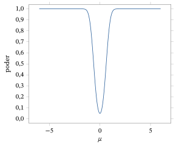
Para o teste bilateral do Exemplo 6.3.11, temos que a função poder é dada por65 \[ \beta(\theta) = P_\theta\left(2\left[1 - \Phi\left(\left\lvert\frac{\sqrt{n}\,(\bar X - \theta_0)}{\sqrt{\theta_0(1 - \theta_0)}}\right\rvert\right) < \alpha\right]\right). \] Supondo que escolhemos \(n\) grande o bastante para que \(\bar X\) tenha aproximadamente distribuição \(N(\theta, \theta(1 - \theta)/n)\), o cálculo aproximado dessa função poder pode ser feito como no Exemplo 6.3.18, quando pomos \(\sigma_0 = \theta(1 - \theta)\).66 Não prosseguimos com esse cálculo aqui, mas observamos que muitos pacotes estatísticos calculam \(\beta\) como função embutida.
Para o teste \(t\) bilateral do Exemplo 6.3.13, temos \begin{align*} \beta_n(\mu, \sigma^2) &= P_{(\mu, \sigma^2)}\left(2\left[1 - G\left(\left\lvert\frac{\bar X - \mu_0}{S/\sqrt{n}}\right\rvert ;\, n - 1\right)\right] < \alpha\right) \\ &= P_{(\mu, \sigma^2)}\left(\left\lvert\frac{\bar X - \mu_0}{S/\sqrt{n}}\right\rvert > t_{(1-\alpha/2)}(n - 1)\right), \end{align*} em que \(G(\cdot\,;\, n - 1)\) é a função de distribuição acumulada da distribuição \(t(n - 1)\). Note que ela é função tanto de \(\mu\) quanto de \(\sigma^2\). Em particular, temos de especificar tanto \(\mu\) quanto \(\sigma^2\) e então determinar \(n\) de modo que \(\beta_n(\mu, \sigma^2) \ge \beta_0\). Muitos pacotes estatísticos trazem o cálculo dessa função poder embutido, de modo que um \(n\) adequado pode ser determinado com ele. Alternativamente, podemos usar métodos de Monte Carlo para aproximar a função de distribuição de \[ \left\lvert\frac{\bar X - \mu_0}{S/\sqrt{n}}\right\rvert \] na amostragem da \(N(\mu, \sigma^2)\), para vários valores de \(n\), a fim de determinar um valor apropriado.
Resumo da Seção 6.3
- O EMV \(\hat\theta\) é o valor do parâmetro \(\theta\) mais apoiado pelo modelo e pelos dados. Assim, faz sentido basear no EMV a obtenção de inferências sobre alguma característica \(\psi(\theta)\). Essas inferências incluem estimativas e seus erros padrão, intervalos de confiança e a avaliação de hipóteses por meio de valores-p.
- Um aspecto importante do planejamento de um estudo amostral é decidir o tamanho \(n\) da amostra para garantir que o estudo produza resultados suficientemente precisos. Prescrever os semicomprimentos dos intervalos de confiança (margens de erro) ou o poder de um teste são duas técnicas para fazer isso.
Exercícios
6.3.1 Suponha que medições (em centímetros) são feitas com um instrumento. Há erro no processo de medição, e supõe-se que uma medição tenha distribuição \(N(\mu, \sigma_0^2)\), em que \(\mu\) é a medida exata e \(\sigma_0^2 = 0{,}5\). Se foram obtidas as (\(n = 10\)) medições 4,7; 5,5; 4,4; 3,3; 4,6; 5,3; 5,2; 4,8; 5,7; 5,3, avalie a hipótese \(H_0 : \mu = 5\) calculando o valor-p relevante. Calcule também um intervalo de confiança 0,95 para o \(\mu\) desconhecido.
6.3.2 Suponha que, no Exercício 6.3.1, abandonemos a hipótese de que \(\sigma_0^2 = 0{,}5\). Avalie então a hipótese \(H_0 : \mu = 5\) e calcule um intervalo de confiança 0,95 para \(\mu\).
6.3.3 Supõe-se que as notas numa prova de um curso de estatística tenham distribuição normal com média desconhecida, mas com variância igual a 5. Uma amostra de quatro estudantes é selecionada, e suas notas são 52, 63, 64, 84. Avalie a hipótese \(H_0 : \mu = 60\) calculando o valor-p relevante e calcule um intervalo de confiança 0,95 para o \(\mu\) desconhecido.
6.3.4 Suponha que, no Exercício 6.3.3, abandonemos a hipótese de que a variância populacional é 5. Avalie a hipótese \(H_0 : \mu = 60\) calculando o valor-p relevante e calcule um intervalo de confiança 0,95 para o \(\mu\) desconhecido.
6.3.5 Suponha que, no Exercício 6.3.3, tivéssemos observado uma única nota e que ela fosse 52. Avalie a hipótese \(H_0 : \mu = 60\) calculando o valor-p relevante e calcule um intervalo de confiança 0,95 para o \(\mu\) desconhecido. É possível calcular um valor-p e construir um intervalo de confiança 0,95 para \(\mu\) sem a hipótese de que conhecemos a variância populacional? Explique sua resposta e, se ela for negativa, determine o tamanho mínimo da amostra \(n\) para o qual a inferência é possível sem a hipótese de que a variância populacional é conhecida.
6.3.6 Suponha que os dados da velocidade da luz da Tabela 6.3.1 sejam uma amostra de uma distribuição \(N(\mu, \sigma^2)\) para valores desconhecidos de \(\mu\) e \(\sigma^2\). Determine um intervalo de confiança 0,99 para \(\mu\). Avalie a hipótese nula \(H_0 : \mu = 24\).
6.3.7 Um fabricante quer avaliar se as hastes estão sendo produzidas de forma adequada ou não; o diâmetro das hastes deve ser 1,0 cm, e sabe-se que a variação nos diâmetros tem distribuição \(N(\mu, 0{,}1)\). O fabricante está disposto a tolerar um desvio da média populacional em relação a esse valor de no máximo 0,1 cm, isto é, se a média populacional estiver no intervalo \(1{,}0 \pm 0{,}1\) cm, então o processo de fabricação está funcionando corretamente. Toma-se uma amostra de \(n = 500\) hastes, e o diâmetro médio delas é \(\bar x = 1{,}05\) cm, com \(s^2 = 0{,}083\) cm\(^2\). Esses resultados são estatisticamente significativos? São significativos na prática? Justifique suas respostas.
6.3.8 Um instituto de pesquisa faz uma pesquisa para determinar que proporção \(\theta\) dos eleitores de uma dada população vai votar numa eleição próxima. Uma amostra aleatória de \(n = 250\) foi tirada da população, e a proporção que respondeu sim foi 0,62. Avalie a hipótese \(H_0 : \theta = 0{,}65\) e construa um intervalo de confiança 0,90 aproximado para \(\theta\).
6.3.9 Uma moeda foi lançada \(n = 1000\) vezes, e a proporção de caras observada foi 0,51. Temos evidência para concluir que a moeda não é honesta?
6.3.10 Quantas vezes devemos lançar uma moeda para garantir que um intervalo de confiança 0,95 para a probabilidade de cara num único lançamento tenha comprimento menor que 0,1, 0,05 e 0,01, respectivamente?
6.3.11 Suponha que um dado possivelmente viciado é lançado 30 vezes e que a face com dois pontos sai 10 vezes. Temos evidência para concluir que o dado é viciado?
6.3.12 Suponha que se supõe que uma medição numa população tenha distribuição \(N(\mu, 2)\), em que \(\mu \in R^1\) é desconhecido, e que o tamanho da população é muito grande. Um pesquisador quer determinar um intervalo de confiança 0,95 para \(\mu\) cujo comprimento não passe de 1. Qual é o tamanho mínimo da amostra que garante isso?
6.3.13 Suponha que \((x_1, \ldots, x_n)\) é uma amostra de uma Bernoulli(\(\theta\)) com \(\theta \in [0, 1]\) desconhecido. (a) Mostre que \(\sum_{i=1}^n (x_i - \bar x)^2\) \({}= n\bar x(1 - \bar x)\). (Sugestão: \(x_i^2 = x_i\).)(b) Se \(X \sim \text{Bernoulli}(\theta)\), então \(\sigma^2 = \Var(X) = \theta(1 - \theta)\). Registre a relação entre a estimativa plug-in de \(\sigma^2\) e a estimativa dada por \(s^2\) em (5.5.5).(c) Como \(s^2\) é um estimador não viesado de \(\sigma^2\) (ver Problema 6.3.23), use os resultados do item (b) para determinar o viés da estimativa plug-in. O que acontece com esse viés quando \(n \to \infty\)?
6.3.14 Suponha que lhe digam que, com base em certos dados, um intervalo de confiança 0,95 para uma característica \(\psi(\theta)\) é dado por \((1{,}23; 2{,}45)\). Perguntam-lhe então se há alguma evidência contra a hipótese \(H_0 : \psi(\theta) = 2\). Enuncie sua conclusão e justifique seu raciocínio.
6.3.15 Suponha que \(x_1\) é um valor de uma Bernoulli(\(\theta\)) com \(\theta \in [0, 1]\) desconhecido. (a) \(x_1\) é um estimador não viesado de \(\theta\)?(b) \(x_1^2\) é um estimador não viesado de \(\theta^2\)?
6.3.16 Suponha que um EMV plug-in de uma característica \(\psi(\theta)\) seja dado por 5,3. Além disso, um valor-p foi calculado para avaliar a hipótese \(H_0 : \psi(\theta) = 5\), e o valor foi 0,000132. Se lhe disserem que diferenças entre valores de \(\psi(\theta)\) menores que 0,5 não têm importância no que diz respeito à aplicação, o que você conclui desses resultados? Suponha, em vez disso, que lhe dissessem que diferenças entre valores de \(\psi(\theta)\) menores que 0,25 não têm importância no que diz respeito à aplicação; o que você conclui desses resultados?
6.3.17 Um valor-p foi calculado para avaliar a hipótese \(H_0 : \psi(\theta) = 0\), e obteve-se o valor 0,22. O pesquisador diz que isso é forte evidência de que a hipótese é correta. Como você responde?
6.3.18 Um valor-p foi calculado para avaliar a hipótese \(H_0 : \psi(\theta) = 1\), e obteve-se o valor 0,55. Dizem-lhe que diferenças em \(\psi(\theta)\) maiores que 0,5 são consideradas significativas na prática, e as outras não. O pesquisador quer saber se foram coletados dados suficientes para detectar de forma confiável uma diferença desse tamanho ou maior. Como você responderia?
Exercícios computacionais
6.3.19 Suponha que se possa supor que uma medição numa população segue a distribuição \(N(\mu, \sigma^2)\), em que \((\mu, \sigma^2) \in R^1 \times (0, \infty)\) é desconhecido e o tamanho da população é muito grande. Uma cota superior bem conservadora para \(\sigma\) é dada por 5. Um pesquisador quer determinar um intervalo de confiança 0,95 para \(\mu\) cujo comprimento não passe de 1. Determine um tamanho da amostra que garanta isso. (Sugestão: comece com uma aproximação para amostra grande.)
6.3.20 Suponha que se supõe que uma medição numa população tenha distribuição \(N(\mu, 2)\), em que \(\mu \in R^1\) é desconhecido, e que o tamanho da população é muito grande. Um pesquisador quer avaliar uma hipótese nula \(H_0 : \mu = \mu_0\) e garantir que a probabilidade de o valor-p ser menor que 0,05 seja de pelo menos 0,80 quando \(\mu = \mu_0 \pm 0{,}5\). Qual é o tamanho mínimo da amostra que garante isso? (Sugestão: tabele o poder como função do tamanho da amostra \(n\).)
6.3.21 Gere \(10^3\) amostras de tamanho \(n = 5\) da distribuição Bernoulli(\(0{,}5\)). Para cada uma dessas amostras, calcule (6.3.5) com \(\gamma = 0{,}95\) e registre a proporção de intervalos que contêm o valor verdadeiro. O que você nota? Repita essa simulação com \(n = 20\). O que você nota?
6.3.22 Gere \(10^4\) amostras de tamanho \(n = 5\) da distribuição \(N(0, 1)\). Para cada uma dessas amostras, calcule o intervalo \((\bar x - s/\sqrt{5}, \bar x + s/\sqrt{5})\), em que \(s\) é o desvio padrão amostral, e calcule a proporção de vezes que esse intervalo contém \(\mu\). Repita essa simulação com \(n = 10\) e 100 e compare seus resultados.
Problemas
6.3.23 Suponha que \((x_1, \ldots, x_n)\) é uma amostra de uma distribuição com média \(\mu\) e variância \(\sigma^2\). (a) Prove que \(s^2\) dado por (5.5.5) é um estimador não viesado de \(\sigma^2\).(b) Se, em vez disso, estimarmos \(\sigma^2\) por \((n - 1)s^2/n\), determine o viés dessa estimativa e o que acontece com ele quando \(n \to \infty\).
6.3.24 Suponha que temos dois estimadores não viesados \(T_1\) e \(T_2\) de \(\psi(\theta) \in R^1\). (a) Mostre que \(\alpha T_1 + (1 - \alpha)T_2\) também é um estimador não viesado de \(\psi(\theta)\) sempre que \(\alpha \in [0, 1]\).(b) Se \(T_1\) e \(T_2\) forem também independentes, por exemplo, determinados a partir de amostras independentes, calcule \(\Var_\theta(\alpha T_1 + (1 - \alpha)T_2)\) em termos de \(\Var_\theta(T_1)\) e \(\Var_\theta(T_2)\).(c) Na situação do item (b), determine a melhor escolha de \(\alpha\), no sentido de que, para essa escolha, \(\Var_\theta(\alpha T_1 + (1 - \alpha)T_2)\) seja a menor possível. Qual é o efeito, sobre esse estimador combinado, de \(T_1\) ter uma variância muito grande em relação a \(T_2\)?(d) Repita os itens (b) e (c), mas agora sem supor que \(T_1\) e \(T_2\) são independentes, de modo que \(\Var_\theta(\alpha T_1 + (1 - \alpha)T_2)\) também envolverá \(\Cov_\theta(T_1, T_2)\).
6.3.25 (Intervalos de confiança unilaterais para médias) Suponha que \((x_1, \ldots, x_n)\) é uma amostra de uma distribuição \(N(\mu, \sigma_0^2)\), em que \(\mu \in R^1\) é desconhecido e \(\sigma_0^2\) é conhecido. Suponha que queremos fazer inferências sobre o intervalo \(\psi(\mu) = (-\infty, \mu)\). Considere o problema de encontrar um intervalo \(C(x_1, \ldots, x_n)\) \({}= (-\infty, u(x_1, \ldots, x_n))\) que cubra o intervalo \((-\infty, \mu)\) com probabilidade de pelo menos \(\gamma\). Assim, queremos \(u\) tal que, para todo \(\mu\), \[ P_\mu(\mu \le u(X_1, \ldots, X_n)) \ge \gamma. \] Note que \((-\infty, \mu) \subset (-\infty, u(x_1, \ldots, x_n))\) se e somente se \(\mu \le u(x_1, \ldots, x_n)\), de modo que \(C(x_1, \ldots, x_n)\) é chamado de intervalo de confiança \(\gamma\) unilateral à esquerda para \(\mu\). Obtenha um intervalo de confiança \(\gamma\) unilateral à esquerda exato para \(\mu\) usando \(u(x_1, \ldots, x_n)\) \({}= \bar x + k(\sigma_0/\sqrt{n})\), isto é, encontre o \(k\) que dá essa propriedade.
6.3.26 (Hipóteses unilaterais para médias) Suponha que \((x_1, \ldots, x_n)\) é uma amostra de uma distribuição \(N(\mu, \sigma_0^2)\), em que \(\mu\) é desconhecido e \(\sigma_0^2\) é conhecido. Suponha que queremos avaliar a hipótese \(H_0 : \mu \le \mu_0\). Nessas circunstâncias, dizemos que o valor observado \(\bar x\) é surpreendente se \(\bar x\) ocorre numa região de baixa probabilidade para toda distribuição em \(H_0\). Portanto, um valor-p sensato para este problema é \(\max_{\mu \in H_0} P_\mu(\bar X > \bar x)\). Mostre que isso leva ao valor-p \(1 - \Phi((\bar x - \mu_0)/(\sigma_0/\sqrt{n}))\).
6.3.27 Determine a forma da função poder associada ao procedimento de avaliação de hipóteses do Problema 6.3.26, quando declaramos o resultado de um teste estatisticamente significativo sempre que o valor-p é menor que \(\alpha\).
6.3.28 Repita os Problemas 6.3.25 e 6.3.26, mas desta vez obtenha um intervalo de confiança \(\gamma\) unilateral à direita para \(\mu\) e avalie a hipótese \(H_0 : \mu \ge \mu_0\).
6.3.29 Repita os Problemas 6.3.25 e 6.3.26, mas desta vez não suponha que a variância populacional é conhecida. Em particular, determine \(k\) de modo que \(u(x_1, \ldots, x_n)\) \({}= \bar x + k\,(s/\sqrt{n})\) dê um intervalo de confiança \(\gamma\) unilateral à esquerda exato para \(\mu\) e mostre que o valor-p para testar \(H_0 : \mu \le \mu_0\) é dado por67 \[ 1 - G\left(\frac{\bar x - \mu_0}{\sigma_0/\sqrt{n}} ;\, n - 1\right). \]
6.3.30 (Intervalos de confiança unilaterais para variâncias) Suponha que \((x_1, \ldots, x_n)\) é uma amostra da distribuição \(N(\mu, \sigma^2)\), em que \((\mu, \sigma^2) \in R^1 \times (0, \infty)\) é desconhecido, e que queremos um intervalo de confiança \(\gamma\) da forma \[ C(x_1, \ldots, x_n) = (0, u(x_1, \ldots, x_n)) \] para \(\sigma^2\). Se \(u(x_1, \ldots, x_n) = ks^2\), determine \(k\) de modo que esse intervalo seja um intervalo de confiança \(\gamma\) exato.
6.3.31 (Hipóteses unilaterais para variâncias) Suponha que \((x_1, \ldots, x_n)\) é uma amostra da distribuição \(N(\mu, \sigma^2)\), em que \((\mu, \sigma^2) \in R^1 \times (0, \infty)\) é desconhecido, e que queremos avaliar a hipótese \(H_0 : \sigma^2 \le \sigma_0^2\). Argumente que a variância amostral \(s^2\) é surpreendente se \(s^2\) for grande e que, portanto, um valor-p sensato para este problema é calcular \(\max_{(\mu, \sigma^2) \in H_0} P_\mu(S^2 > s^2)\). Mostre que isso leva ao valor-p \[ 1 - H\left(\frac{(n - 1)s^2}{\sigma_0^2} ;\, n - 1\right), \] em que \(H(\cdot\,;\, n - 1)\) é a função de distribuição da distribuição \(\chi^2(n - 1)\).
6.3.32 Determine a forma da função poder associada ao procedimento de avaliação de hipóteses do Problema 6.3.31, para calcular a probabilidade de o valor-p ser menor que \(\alpha\).
6.3.33 Repita o Exercício 6.3.7, mas desta vez não suponha que a variância populacional é conhecida. Nesse caso, o fabricante considera o processo sob controle se o desvio padrão populacional for menor ou igual a 0,1 e a média populacional estiver no intervalo \(1{,}0 \pm 0{,}1\) cm. Use o Problema 6.3.31 para o teste sobre a variância populacional.
Desafios
6.3.34 Prove que (6.3.11) é sempre não negativa. (Sugestão: use os fatos de que \(\varphi\) é simétrica em torno de 0, crescente à esquerda de 0 e decrescente à direita de 0.)
6.3.35 Prove que (6.3.13) é positiva quando \(\mu > \mu_0\), negativa quando \(\mu < \mu_0\) e vale 0 quando \(\mu = \mu_0\).
Tópicos para discussão
6.3.36 Discuta a seguinte afirmação: a precisão dos resultados de uma análise estatística é tão importante que devemos sempre tomar o maior tamanho da amostra possível.
6.3.37 Suponha que temos uma sequência de estimadores \(T_1, T_2, \ldots\) para \(\psi(\theta)\) e que \(T_n \xrightarrow{P} \psi(\theta)\) \({}+ \epsilon(\theta)\) quando \(n \to \infty\), para cada \(\theta \in \negrito{\Omega}\). Discuta em que circunstâncias você poderia considerar \(T_n\) um estimador útil de \(\psi(\theta)\).
6.4 Métodos Livres de Distribuição
Os métodos de verossimilhança que vimos discutindo dependem todos da suposição de que a verdadeira distribuição está em \(\{P_\theta : \theta \in \negrito{\Omega}\}\). Em geral, nada garante que a suposição \(\{P_\theta : \theta \in \negrito{\Omega}\}\) esteja correta. Se a distribuição da qual estamos amostrando for muito diferente de qualquer uma das distribuições em \(\{P_\theta : \theta \in \negrito{\Omega}\}\), então os métodos de inferência que dependem dessa suposição, como os métodos de verossimilhança, podem ser muito enganosos. Por isso, em qualquer aplicação, é importante verificar se as nossas suposições fazem sentido. Discutiremos o tema da verificação de modelos68 no Capítulo 9.
Outra abordagem para esse problema é tomar o modelo \(\{P_\theta : \theta \in \negrito{\Omega}\}\) tão grande quanto possível, refletindo o fato de que podemos ter pouquíssima informação sobre como é a verdadeira distribuição. Por exemplo, inferências baseadas no modelo Bernoulli\((\theta)\) com \(\theta \in \negrito{\Omega} = [0, 1]\) na verdade não especificam informação nenhuma sobre a verdadeira distribuição, porque esse modelo inclui todas as distribuições possíveis no espaço amostral \(S = \{0, 1\}\). Os métodos de inferência adequados quando \(\{P_\theta : \theta \in \negrito{\Omega}\}\) é muito grande são às vezes chamados de livres de distribuição, para refletir o fato de que muito pouca informação sobre a verdadeira distribuição é especificada no modelo.
Para espaços amostrais finitos, é simples adotar a abordagem livre de distribuição, como no modelo Bernoulli que acabamos de citar, mas, quando o espaço amostral é infinito, as coisas se complicam. Na verdade, às vezes é muito difícil determinar inferências sobre características de interesse quando o modelo é muito grande. Além disso, se temos \[ \{P_\theta : \theta \in \negrito{\Omega}_1\} \subset \{P_\theta : \theta \in \negrito{\Omega}\}, \] então, quando o modelo menor contém a verdadeira distribuição, os métodos baseados no modelo menor farão melhor uso da informação dos dados sobre o verdadeiro valor em \(\negrito{\Omega}_1\) do que os métodos que usam o modelo maior \(\{P_\theta : \theta \in \negrito{\Omega}\}\). Há, portanto, um compromisso entre tomar um modelo grande demais e tomar um modelo preciso demais. Essa é uma questão que um estatístico sempre precisa enfrentar.
Consideramos agora alguns exemplos de inferências livres de distribuição. Em alguns casos, as inferências têm propriedades amostrais aproximadas, enquanto em outros elas têm propriedades amostrais exatas para modelos muito grandes.
6.4.1 Método dos Momentos
Suponha que tomamos \(\{P_\theta : \theta \in \negrito{\Omega}\}\) como o conjunto de todas as distribuições em \(R^1\) que têm os seus \(l\) primeiros momentos, e que queremos fazer inferências sobre os momentos \[ \mu_i = E_\theta(X^i), \] para \(i = 1, \ldots, l\), com base numa amostra \((x_1, \ldots, x_n)\). O análogo amostral natural do momento populacional \(\mu_i\) é o \(i\)-ésimo momento amostral \[ m_i = \frac{1}{n} \sum_{j=1}^{n} x_j^i, \] que parece ser um estimador sensato.
Em particular, temos \(E_\theta(M_i) = \mu_i\) para todo \(\theta \in \negrito{\Omega}\), de modo que \(m_i\) é não viesado, e as leis fraca e forte dos grandes números estabelecem que \(m_i\) converge para \(\mu_i\) quando \(n\) cresce. Além disso, o teorema central do limite estabelece que \[ \frac{M_i - \mu_i}{\sqrt{\Var_\theta(M_i)}} \xrightarrow{D} N(0, 1) \] quando \(n \to \infty\), desde que \(\Var_\theta(M_i) < \infty\). Agora, como \(X_1, \ldots, X_n\) são i.i.d., temos \begin{align*} \Var_\theta(M_i) &= \frac{1}{n^2} \sum_{j=1}^{n} \Var_\theta(X_j^i) = \frac{1}{n} \Var_\theta(X_1^i) = \frac{1}{n} E_\theta\bigl((X_1^i - \mu_i)^2\bigr) \\ &= \frac{1}{n} E_\theta(X_1^{2i} - 2\mu_i X_1^i + \mu_i^2) = \frac{1}{n} (\mu_{2i} - \mu_i^2), \end{align*} de modo que \(\Var_\theta(M_i) < \infty\) desde que \(i \le l/2\). Nesse caso, podemos estimar \(\mu_{2i} - \mu_i^2\) por \[ s_i^2 = \frac{1}{n-1} \sum_{j=1}^{n} (x_j^i - m_i)^2, \] pois podemos simplesmente tratar \((x_1^i, \ldots, x_n^i)\) como uma amostra de uma distribuição com média \(\mu_i\) e variância \(\mu_{2i} - \mu_i^2\). O Problema 6.3.23 estabelece que \(s_i^2\) é uma estimativa não viesada de \(\Var_\theta(M_i)\). Assim, como nas inferências para a média populacional baseadas na estatística \(z\), temos que \[ m_i \pm z_{(1+\gamma)/2} \frac{s_i}{\sqrt{n}} \] é um intervalo de confiança \(\gamma\) aproximado para \(\mu_i\) sempre que \(i \le l/2\) e \(n\) é grande. Além disso, podemos testar a hipótese \(H_0 : \mu_i = \mu_{i0}\) exatamente do mesmo modo como fizemos para a média populacional usando a estatística \(z\).
Observe que o modelo \(\{P_\theta : \theta \in \negrito{\Omega}\}\) é muito grande (todas as distribuições em \(R^1\) cujos \(l/2\) primeiros momentos são finitos) e que essas inferências aproximadas são adequadas para toda distribuição do modelo. Uma ressalva: a estimação dos momentos fica mais difícil à medida que a ordem dos momentos aumenta. São necessários tamanhos de amostra muito grandes para estimar com precisão momentos de ordem alta.
O princípio do método dos momentos69, em sua forma geral, nos permite fazer inferências sobre características que são funções dos momentos. Ele tem a seguinte forma:
Princípio do método dos momentos: uma função \(\psi(\mu_1, \ldots, \mu_k)\) dos \(k \le l\) primeiros momentos é estimada por \(\psi(m_1, \ldots, m_k)\).
Quando \(\psi\) é continuamente diferenciável e não nula em \((\mu_1, \ldots, \mu_k)\), e \(k \le l/2\), pode-se provar que \(\psi(M_1, \ldots, M_k)\) converge em distribuição para uma normal com média dada por \(\psi(\mu_1, \ldots, \mu_k)\) e variância dada por uma expressão que envolve as variâncias e covariâncias de \(M_1, \ldots, M_k\) e as derivadas parciais de \(\psi\). Não vamos aprofundar esse tema aqui, mas observamos que, no caso \(k = 1\) e \(l = 2\), essas condições levam ao chamado teorema delta70, segundo o qual \begin{equation} \frac{\sqrt{n}\,\bigl(\psi(\bar{X}) - \psi(\mu_1)\bigr)} {\lvert \psi'(\bar{X}) \rvert\, s} \xrightarrow{D} N(0, 1) \tag{6.4.1} \end{equation} quando \(n \to \infty\), desde que \(\psi\) seja continuamente diferenciável em \(\mu_1\) e \(\psi'(\mu_1) \neq 0\); veja Approximation Theorems of Mathematical Statistics, de R. J. Serfling (John Wiley & Sons, Nova York, 1980), para uma demonstração desse resultado. Esse resultado fornece intervalos de confiança e testes aproximados para \(\psi(\mu_1)\).
Suponha que \((x_1, \ldots, x_n)\) é uma amostra de uma distribuição com média \(\mu\) e variância \(\sigma^2\) desconhecidas, e que queremos construir um intervalo de confiança \(\gamma\) para \(\psi(\mu) = 1/\mu^2\). Então \(\psi'(\mu) = -2/\mu^3\), e o teorema delta diz que \[ \frac{\sqrt{n}\,\bigl(1/\bar{X}^2 - 1/\mu^2\bigr)}{2s/\bar{X}^3} \xrightarrow{D} N(0, 1) \] quando \(n \to \infty\). Portanto, \[ \left(\frac{1}{\bar{x}}\right)^2 \pm 2 \frac{s}{\sqrt{n}\,\bar{x}^3} z_{(1+\gamma)/2} \] é um intervalo de confiança \(\gamma\) aproximado para \(\psi(\mu) = 1/\mu^2\).
Observe que, se \(\mu = 0\), esse intervalo de confiança não é válido, porque \(\psi\) não é continuamente diferenciável em 0. Assim, se você acha que a média populacional pode ser 0, ou mesmo próxima de 0, essa não seria uma escolha adequada de intervalo de confiança para \(\psi\).
6.4.2 Bootstrap
Suponha que \(\{P_\theta : \theta \in \negrito{\Omega}\}\) é o conjunto de todas as distribuições em \(R^1\) e que \((x_1, \ldots, x_n)\) é uma amostra de alguma distribuição desconhecida com fda \(F_\theta\). Então a função de distribuição empírica71 \[ \hat{F}(x) = \frac{1}{n} \sum_{i=1}^{n} I_{(-\infty, x]}(x_i), \] apresentada na Seção 5.4.1, é um estimador natural da fda \(F(x)\).
Temos \[ E_\theta\bigl(\hat{F}(x)\bigr) = \frac{1}{n} \sum_{i=1}^{n} E_\theta\bigl(I_{(-\infty, x]}(X_i)\bigr) = \frac{1}{n} \sum_{i=1}^{n} F_\theta(x) = F_\theta(x) \] para todo \(\theta \in \negrito{\Omega}\), de modo que \(\hat{F}\) é não viesado para \(F_\theta\). As leis fraca e forte dos grandes números estabelecem então a consistência de \(\hat{F}(x)\) para \(F_\theta(x)\) quando \(n \to \infty\). Observando que os \(I_{(-\infty, x]}(x_i)\) constituem uma amostra da distribuição Bernoulli\((F_\theta(x))\), temos que o erro padrão de \(\hat{F}(x)\) é dado por \[ \sqrt{\frac{\hat{F}(x)\bigl(1 - \hat{F}(x)\bigr)}{n}}. \] Esses fatos podem ser usados para construir intervalos de confiança aproximados e testar hipóteses para \(F_\theta(x)\), exatamente como nos Exemplos 6.3.7 e 6.3.11.
Observe que \(\hat{F}(x)\) determina uma distribuição no conjunto \(\{x_1, \ldots, x_n\}\); por exemplo, se os valores da amostra são distintos, essa distribuição de probabilidade põe massa \(1/n\) em cada \(x_i\). Note que é fácil amostrar um valor de \(\hat{F}\), pois basta escolher um valor de \(\{x_1, \ldots, x_n\}\) em que cada ponto tem probabilidade \(1/n\) de ocorrer. Quando os \(x_i\) não são distintos, isso muda de modo óbvio: \(x_i\) tem probabilidade \(f_i/n\), em que \(f_i\) é o número de vezes que \(x_i\) ocorre em \(x_1, \ldots, x_n\).
Suponha que queremos estimar \(\psi(\theta) = T(F_\theta)\), em que \(T\) é uma função da distribuição \(F_\theta\). Usamos essa notação para enfatizar que \(\psi(\theta)\) corresponde a alguma característica da distribuição, em vez de ser apenas uma função matemática arbitrária de \(\theta\). Por exemplo, \(T(F_\theta)\) poderia ser um momento de \(F_\theta\), um quantil de \(F_\theta\) etc.
Suponha agora que temos um estimador \(\hat{\psi}(x_1, \ldots, x_n)\) proposto para fazer inferências sobre \(\psi(\theta)\). Naturalmente, estamos interessados na precisão de \(\hat{\psi}\), e poderíamos escolher medi-la por \begin{equation} \operatorname{MSE}_\theta(\hat{\psi}) = \Bigl(E_\theta(\hat{\psi}) - \psi(\theta)\Bigr)^2 + \Var_\theta(\hat{\psi}). \tag{6.4.2} \end{equation} Então, para avaliar a precisão da nossa estimativa \(\hat{\psi}(x_1, \ldots, x_n)\), precisamos estimar (6.4.2).
Quando \(n\) é grande, esperamos que \(\hat{F}\) esteja próxima de \(F_\theta\), de modo que uma estimativa natural de \(\psi(\theta)\) é \(T(\hat{F})\), isto é, simplesmente calculamos a mesma característica para a distribuição empírica. Essa é a abordagem adotada no Capítulo 5, quando discutimos estatísticas descritivas. Então estimamos o quadrado do viés de \(\hat{\psi}\) por \begin{equation} \bigl(\hat{\psi} - T(\hat{F})\bigr)^2. \tag{6.4.3} \end{equation} Para estimar a variância de \(\hat{\psi}\), usamos \begin{align} \Var_{\hat{F}}(\hat{\psi}) &= E_{\hat{F}}(\hat{\psi}^{\,2}) - E_{\hat{F}}^2(\hat{\psi}) \notag \\ &= \frac{1}{n^n} \sum_{i_1=1}^{n} \cdots \sum_{i_n=1}^{n} \hat{\psi}^{\,2}(x_{i_1}, \ldots, x_{i_n}) \notag \\ &\qquad - \left(\frac{1}{n^n} \sum_{i_1=1}^{n} \cdots \sum_{i_n=1}^{n} \hat{\psi}(x_{i_1}, \ldots, x_{i_n})\right)^2, \tag{6.4.4} \end{align} isto é, tratamos \(x_1, \ldots, x_n\) como valores aleatórios i.i.d. com fda dada por \(\hat{F}\). Assim, para calcular uma estimativa de (6.4.2), basta calcular \(\Var_{\hat{F}}(\hat{\psi})\). Isso raramente é viável, porém, porque as somas em (6.4.4) envolvem \(n^n\) termos. Mesmo para tamanhos de amostra bem modestos, como \(n = 10\), essa conta não pode ser feita, nem mesmo num computador.
A solução para esse problema é aproximar (6.4.4) extraindo \(m\) amostras independentes de tamanho \(n\) de \(\hat{F}\), calculando \(\hat{\psi}\) para cada uma delas, o que dá \(\hat{\psi}_1, \ldots, \hat{\psi}_m\), e então usando como estimativa a variância amostral \begin{equation} \widehat{\Var}_{\hat{F}}(\hat{\psi}) = \frac{1}{m-1} \left\{ \sum_{i=1}^{m} \hat{\psi}_i^{\,2} - \left(\frac{1}{m} \sum_{i=1}^{m} \hat{\psi}_i\right)^2 \right\}. \tag{6.4.5} \end{equation} As \(m\) amostras de \(\hat{F}\) são chamadas de amostras bootstrap72 ou reamostras, e essa técnica é chamada de bootstrap ou reamostragem. Combinando (6.4.3) e (6.4.5), obtemos uma estimativa de \(\operatorname{MSE}_\theta(\hat{\psi})\). Além disso, \(m^{-1} \sum_{i=1}^{m} \hat{\psi}_i\) é chamada de média bootstrap, e \[ \sqrt{\widehat{\Var}_{\hat{F}}(\hat{\psi})} \] é o erro padrão bootstrap. Note que o erro padrão bootstrap é uma estimativa válida do erro em \(\hat{\psi}\) sempre que \(\hat{\psi}\) tem viés pequeno ou nulo.
Considere o exemplo a seguir.
Suponha que queremos estimar a posição de uma distribuição unimodal e simétrica. Embora a média amostral possa parecer a escolha óbvia para isso, acontece que, para algumas distribuições, há estimadores melhores. Isso porque a distribuição da qual estamos amostrando pode ter caudas longas, isto é, pode produzir valores extremos, distantes do centro da distribuição. Isso faz com que a própria média amostral possa ser fortemente influenciada por umas poucas observações extremas e seja, assim, uma estimativa ruim da verdadeira média.
Nem todos os estimadores sofrem desse defeito. Por exemplo, se estamos amostrando de uma distribuição simétrica, então tanto a média amostral quanto a mediana amostral podem servir de estimador da média populacional. Mas, como já discutimos, a mediana amostral não é influenciada por valores extremos, isto é, ela não muda quando afastamos os menores (ou os maiores) valores do resto dos dados, e isso não acontece com a média amostral.
Um problema de trabalhar com a mediana amostral \(\hat{x}_{0{,}5}\), em vez da média amostral \(\bar{x}\), é que a distribuição amostral de \(\hat{x}_{0{,}5}\) costuma ser mais difícil de estudar do que a de \(\bar{x}\). Nessa situação, o bootstrap se torna útil. Se estamos estimando a média populacional \(T(F_\theta)\) pela mediana amostral (o que é adequado quando sabemos que a distribuição da qual amostramos é simétrica), então a estimativa do quadrado do viés da mediana amostral é dada por \[ \bigl(\hat{\psi} - T(\hat{F})\bigr)^2 = \bigl(\hat{x}_{0{,}5} - \bar{x}\bigr)^2, \] pois \(\hat{\psi} = \hat{x}_{0{,}5}\) e \(T(\hat{F}) = \bar{x}\) (a média da distribuição empírica é \(\bar{x}\)). Esse valor deve ser próximo de 0; caso contrário, nossa suposição de uma distribuição simétrica pareceria incorreta. Para calcular (6.4.5), precisamos gerar \(m\) amostras de tamanho \(n\) de \(\{x_1, \ldots, x_n\}\) (com reposição) e calcular \(\hat{x}_{0{,}5}\) para cada amostra.
Para ilustrar, suponha que temos uma amostra de tamanho \(n = 15\), dada pela tabela a seguir.
| \(-2{,}0\) | \(-0{,}2\) | \(-5{,}2\) | \(-3{,}5\) | \(-3{,}9\) |
|---|---|---|---|---|
| \(-0{,}6\) | \(-4{,}3\) | \(-1{,}7\) | \(-9{,}5\) | \(1{,}6\) |
| \(-2{,}9\) | \(0{,}9\) | \(-1{,}0\) | \(-2{,}0\) | \(3{,}0\) |
Então, usando a definição de \(\hat{x}_{0{,}5}\) dada por (5.5.4) (lá denotada por \(\check{x}_{0{,}5}\)), temos \(\hat{\psi} = -2{,}000\) e \(\bar{x} = -2{,}087\). A estimativa do quadrado do viés (6.4.3) é igual a \((-2{,}000 + 2{,}087)^2\) \({}= 7{,}569 \times 10^{-3}\), o que é adequadamente pequeno. Usando um pacote estatístico, geramos \(m = 10^3\) amostras de tamanho \(n = 15\) da distribuição que tem probabilidade \(1/15\) em cada um dos pontos da amostra e obtivemos \[ \widehat{\Var}_{\hat{F}}(\hat{\psi}) = 0{,}770866. \] Com base em \(m = 10^4\) amostras, obtivemos \[ \widehat{\Var}_{\hat{F}}(\hat{\psi}) = 0{,}718612, \] e com base em \(m = 10^5\) amostras obtivemos \[ \widehat{\Var}_{\hat{F}}(\hat{\psi}) = 0{,}704928. \] Como essas estimativas parecem estar se estabilizando, tomamos esta última como nossa estimativa. Assim, nesse caso, a estimativa bootstrap do MSE da mediana amostral no verdadeiro valor de \(\theta\) é dada por \[ \widehat{\operatorname{MSE}}_\theta(\hat{\psi}) = 0{,}007569 + 0{,}704928 = 0{,}71250. \] Note que o MSE estimado da média amostral é dado por \(s^2 = 0{,}62410\), de modo que a média amostral e a mediana amostral parecem ter precisão parecida neste problema. Na Figura 6.4.1, traçamos um histograma de densidade das medianas amostrais obtidas das \(m = 10^5\) amostras bootstrap. Note que o histograma é muito assimétrico. Veja o Apêndice B para mais detalhes sobre como essas contas foram feitas.
Mesmo com o tamanho de amostra muito pequeno deste caso, foi necessário usar o computador para fazer as contas. Calcular (6.4.4) exatamente exigiria calcular a mediana de \(15^{15}\) (aproximadamente \(4{,}4 \times 10^{17}\)) amostras, o que é claramente impossível mesmo com um computador. Assim, o bootstrap é um recurso muito útil.
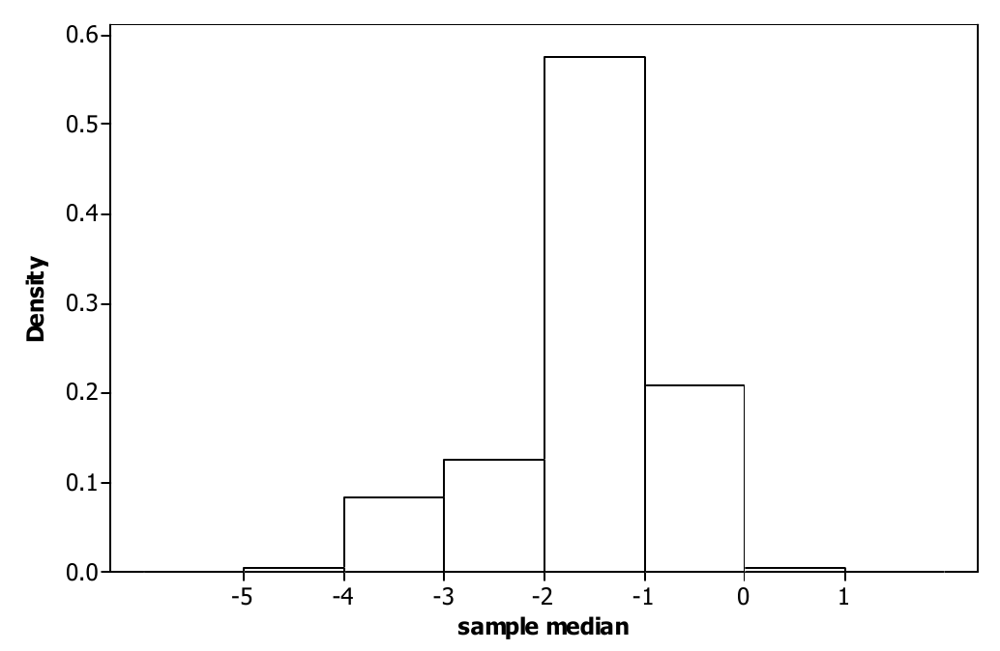
A validade da técnica bootstrap depende de \(\hat{\psi}\) ter os seus dois primeiros momentos. Assim, a família \(\{P_\theta : \theta \in \negrito{\Omega}\}\) precisa ser restringida de modo apropriado, mas vemos que a técnica é muito geral.
De modo geral, não está claro como escolher \(m\). Talvez o método mais direto seja aplicar o bootstrap com valores sucessivamente maiores de \(m\) e parar quando virmos que os resultados se estabilizam para vários valores. Foi o que fizemos no Exemplo 6.4.2, mas é preciso reconhecer que essa abordagem não é infalível, pois poderíamos ter uma amostra \((x_1, \ldots, x_n)\) para a qual a estimativa (6.4.5) converge muito lentamente.
Intervalos de Confiança Bootstrap
Também foram criados métodos bootstrap para obter intervalos de confiança \(\gamma\) aproximados para características como \(\psi(\theta) = T(F_\theta)\). Um método muito simples é simplesmente construir o intervalo \(t\) bootstrap de confiança \(\gamma\) \[ \hat{\psi} \pm t_{(1+\gamma)/2}(n-1)\sqrt{\widehat{\Var}_{\hat{F}}(\hat{\psi})}, \] em que \(t_{(1+\gamma)/2}(n-1)\) é o quantil \((1+\gamma)/2\) da distribuição \(t(n-1)\). Outra possibilidade é calcular um intervalo de confiança bootstrap percentil74, dado por \[ \bigl(\hat{\psi}_{(1-\gamma)/2}, \hat{\psi}_{(1+\gamma)/2}\bigr), \] em que \(\hat{\psi}_p\) denota o \(p\)-ésimo quantil empírico de \(\hat{\psi}\) na amostra bootstrap75 de tamanho \(m\).
Note que, para serem aplicáveis, esses intervalos exigem que algumas condições sejam satisfeitas. Em particular, \(\hat{\psi}\) deve ser pelo menos aproximadamente não viesado para \(\psi(\theta)\), e a distribuição bootstrap deve ser aproximadamente normal. Olhando o gráfico da distribuição bootstrap na Figura 6.4.1, vemos que a mediana não tem uma distribuição bootstrap aproximadamente normal; portanto, esses intervalos não são aplicáveis à mediana.
Considere o exemplo a seguir.
Uma das virtudes da mediana amostral como estimador da média populacional é que ela não é afetada por valores extremos na amostra. Por outro lado, a mediana amostral descarta todos os valores dos dados, menos um ou dois, e assim parece estar descartando muita informação. Os estimadores conhecidos como médias aparadas podem ser vistos como uma tentativa de manter as virtudes da mediana sem, ao mesmo tempo, descartar informação demais. Seja \(\lfloor x \rfloor\) o maior inteiro menor ou igual a \(x \in R^1\).
Para \(\alpha \in [0, 1]\), uma média \(\alpha\)-aparada amostral é dada por \[ \bar{x}_\alpha = \frac{1}{n - 2\lfloor \alpha n \rfloor} \sum_{i = \lfloor \alpha n \rfloor + 1}^{n - \lfloor \alpha n \rfloor} x_{(i)}, \] em que \(x_{(i)}\) é a \(i\)-ésima estatística de ordem.
Assim, para uma média \(\alpha\)-aparada amostral, descartamos (aproximadamente) \(\alpha n\) dos menores valores dos dados e \(\alpha n\) dos maiores, e calculamos a média dos \(n - 2\alpha n\) valores que restam. Precisamos da função maior inteiro porque, em geral, \(\alpha n\) não será um inteiro. Note que a média amostral corresponde a \(\alpha = 0\) e a mediana amostral, a \(\alpha = 0{,}5\).
Para os dados do Exemplo 6.4.1 e \(\alpha = 0{,}25\), temos \((0{,}25)15 = 3{,}75\),76 então descartamos as três menores e as três maiores observações, o que deixa os nove valores \(-3{,}9; -3{,}5; -2{,}9; -2{,}0; -2{,}0; -1{,}7; -1{,}0; -0{,}6; -0{,}2\). A média desses nove valores dá \(\hat{\psi} = \bar{x}_{0{,}25} = -1{,}97778\), que, notamos, é próxima tanto da mediana amostral quanto da média amostral.
Suponha agora que usamos uma média 0,25-aparada como estimador \(\hat{\psi}\) de uma média populacional, quando acreditamos que a distribuição populacional é simétrica. Considere os dados do Exemplo 6.4.1 e suponha que geramos \(m = 10^4\) amostras bootstrap. Traçamos um histograma dos \(10^4\) valores de \(\hat{\psi}\) na Figura 6.4.2. Note que ele tem aparência bem normal; por isso, nos sentimos justificados em usar os intervalos de confiança associados ao bootstrap. Nesse caso, obtivemos \[ \sqrt{\widehat{\Var}_{\hat{F}}(\hat{\psi})} = 0{,}7380, \] de modo que o intervalo \(t\) bootstrap de confiança 0,95 para a média é dado por \(-1{,}97778 + (2{,}14479)(0{,}7380) \simeq (-3{,}6; -0{,}4)\).77 Ordenando a amostra bootstrap, obtemos o intervalo de confiança bootstrap percentil 0,95 \((-3{,}36667; -0{,}488889) \simeq (-3{,}4; -0{,}5)\), o que mostra que os dois intervalos são muito parecidos.
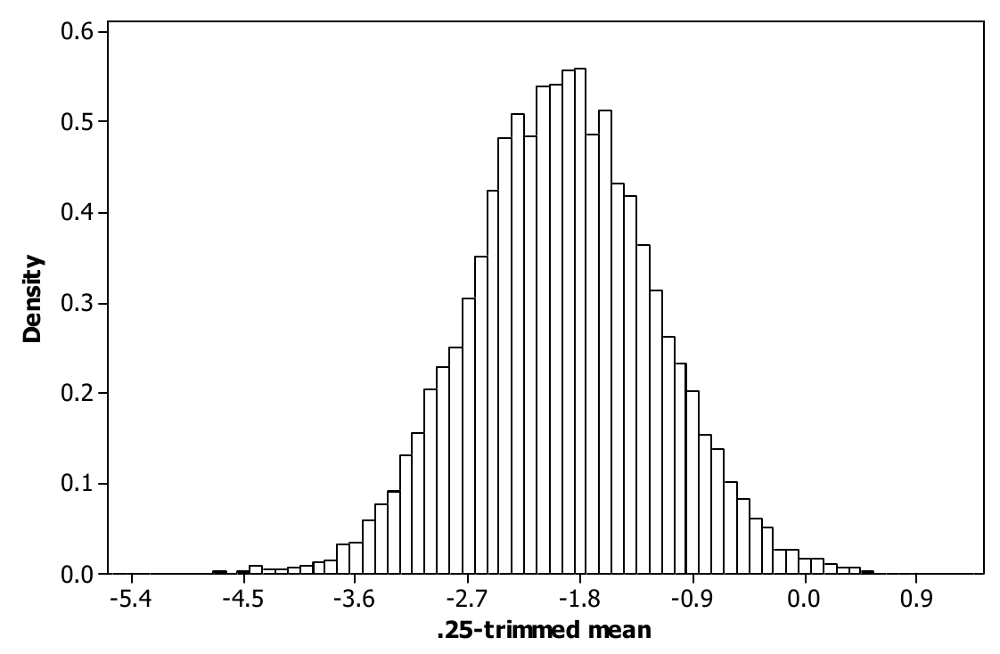
Mais detalhes sobre o bootstrap podem ser encontrados em An Introduction to the Bootstrap, de B. Efron e R. J. Tibshirani (Chapman and Hall, Nova York, 1993).
6.4.3 A Estatística do Sinal e Inferências sobre Quantis
Suponha que \(\{P_\theta : \theta \in \negrito{\Omega}\}\) seja o conjunto de todas as distribuições em \(R^1\) cujas funções de distribuição associadas são contínuas. Suponha que queremos fazer inferências sobre um \(p\)-ésimo quantil de \(P_\theta\). Denotamos esse quantil por \(x_p(\theta)\), de modo que, quando a função de distribuição associada a \(P_\theta\) é denotada por \(F_\theta\), temos \(p = F_\theta(x_p(\theta))\). Note que a continuidade implica que sempre existe uma solução em \(x\) de \(p = F_\theta(x)\) e que \(x_p(\theta)\) é a menor solução.
Lembre as definições e a discussão sobre a estimação dessas quantidades no Exemplo 5.5.2, com base numa amostra \((x_1, \ldots, x_n)\). Para simplificar, vamos nos restringir aos casos em que \(p = i/n\) para algum \(i \in \{1, \ldots, n\}\). Nesse caso, \(\hat{x}_p = x_{(i)}\) é a estimativa natural de \(x_p\).
Considere agora avaliar a evidência nos dados a respeito da hipótese \(H_0 : x_p(\theta) = x_0\). Para testar essa hipótese, podemos usar a estatística do teste do sinal78, dada por \(S = \sum_{i=1}^{n} I_{(-\infty, x_0]}(x_i)\). Assim, \(S\) é o número de valores amostrais menores ou iguais a \(x_0\).
Note que, quando \(H_0\) é verdadeira, \(I_{(-\infty, x_0]}(x_1), \ldots, I_{(-\infty, x_0]}(x_n)\) é uma amostra da distribuição Bernoulli\((p)\). Isso implica que, quando \(H_0\) é verdadeira, \(S \sim \text{Binomial}(n, p)\).
Portanto, podemos testar \(H_0\) calculando o valor observado de \(S\), denotado por \(S_o\), e verificando se esse valor está numa região de baixa probabilidade da distribuição Binomial\((n, p)\). Como a distribuição binomial é unimodal, as regiões de baixa probabilidade correspondem às caudas esquerda e direita dessa distribuição. Veja, por exemplo, a Figura 6.4.3, em que fizemos o gráfico da função de probabilidade de uma distribuição Binomial\((20; 0{,}7)\).
O valor-p é então obtido calculando a probabilidade do conjunto \begin{equation} \left\{ i : \binom{n}{i} p^{i} (1 - p)^{n-i} \le \binom{n}{S_o} p^{S_o} (1 - p)^{n - S_o} \right\} \tag{6.4.6} \end{equation} com a distribuição de probabilidade Binomial\((n, p)\). Essa é uma medida de quão longe, nas caudas, está o valor observado \(S_o\) (veja a Figura 6.4.3). Note que esse valor-p é completamente independente de \(\theta\) e, portanto, é válido para o modelo inteiro. Tabelas de probabilidades binomiais (Tabela D.6 do Apêndice D), ou funções prontas disponíveis na maioria dos pacotes estatísticos, podem ser usadas para calcular esse valor-p.
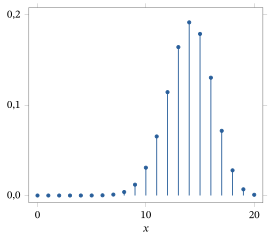
Quando \(n\) é grande, temos, sob \(H_0\), \[ Z = \frac{S - np}{\sqrt{np\,(1 - p)}} \xrightarrow{D} N(0, 1) \] quando \(n \to \infty\). Portanto, um valor-p aproximado é dado por \[ 2 \left\{ 1 - \Phi\left( \left\lvert \frac{S_o - 0{,}5 - np}{\sqrt{np\,(1 - p)}} \right\rvert \right) \right\} \] (como no Exemplo 6.3.11), em que substituímos \(S_o\) por \(S_o - 0{,}5\) como correção de continuidade79 (veja no Exemplo 4.4.9 a discussão sobre a correção de continuidade).
Um caso especial surge quando \(p = 1/2\), isto é, quando fazemos inferências sobre uma mediana populacional desconhecida \(x_{0{,}5}(\theta)\). Nesse caso, a distribuição de \(S\) sob \(H_0\) é Binomial\((n, 1/2)\). Como a Binomial\((n, 1/2)\) é unimodal e simétrica em torno de \(n/2\), (6.4.6) se torna \[ \{ i : \lvert S_o - n/2 \rvert \le \lvert i - n/2 \rvert \}. \]
Se quisermos um intervalo de confiança \(\gamma\) para \(x_{0{,}5}(\theta)\), podemos usar a equivalência entre testes, nos quais sempre rejeitamos quando o valor-p é menor ou igual a \(1 - \gamma\), e intervalos de confiança \(\gamma\) (veja o Exemplo 6.3.12). Para isso, seja \(j\) o menor inteiro maior que \(n/2\) que satisfaz \begin{equation} P(\{ i : \lvert i - n/2 \rvert \ge j - n/2 \}) \le 1 - \gamma, \tag{6.4.7} \end{equation} em que \(P\) é a distribuição Binomial\((n, 1/2)\). Se \(S \in \{ i : \lvert i - n/2 \rvert \ge j - n/2 \}\), rejeitaremos \(H_0 : x_{0{,}5}(\theta) = x_0\) ao nível \(1 - \gamma\), e não rejeitaremos em caso contrário. Isso leva ao intervalo de confiança \(\gamma\), isto é, o conjunto de todos os valores \(x_{0{,}5}\) tais que a hipótese nula \(H_0 : x_{0{,}5}(\theta) = x_{0{,}5}\) não é rejeitada ao nível \(1 - \gamma\), que é igual a \begin{align} C(x_1, \ldots, x_n) &= \left\{ x_0 : \left\lvert \sum_{i=1}^{n} I_{(-\infty, x_0]}(x_i) - n/2 \right\rvert < j - n/2 \right\} \notag \\ &= \left\{ x_0 : n - j < \sum_{i=1}^{n} I_{(-\infty, x_0]}(x_i) < j \right\} = [x_{(n-j+1)}, x_{(j)}), \tag{6.4.8} \end{align} porque, por exemplo, \(n - j < \sum_{i=1}^{n} I_{(-\infty, x_0]}(x_i)\) se e somente se \(x_0 \ge x_{(n-j+1)}\).
Suponha que temos a seguinte amostra de tamanho \(n = 10\) de uma variável aleatória contínua \(X\) e queremos testar a hipótese \(H_0 : x_{0{,}5}(\theta) = 0\).
| \(0{,}44\) | \(-0{,}06\) | \(0{,}43\) | \(-0{,}16\) | \(-2{,}13\) |
|---|---|---|---|---|
| \(1{,}15\) | \(1{,}08\) | \(5{,}67\) | \(-4{,}97\) | \(0{,}11\) |
O boxplot da Figura 6.4.4 indica que é muito improvável que essa amostra tenha vindo de uma distribuição normal, pois há duas observações extremas. Assim, é apropriado medir a posição da distribuição de \(X\) pela mediana.
Nesse caso, a mediana amostral (usando (5.5.4)) é dada por \((0{,}11 + 0{,}43)/2 = 0{,}27\). A estatística do sinal80 para a hipótese nula é dada por \[ S = \sum_{i=1}^{10} I_{(-\infty, 0]}(x_i) = 4. \] O valor-p é dado por \begin{align*} &P(\{ i : \lvert 4 - 5 \rvert \le \lvert i - 5 \rvert \}) = P(\{ i : \lvert i - 5 \rvert \ge 1 \}) = 1 - P(\{ i : \lvert i - 5 \rvert < 1 \}) \\ &\quad = 1 - P(\{5\}) = 1 - \binom{10}{5} \left( \frac{1}{2} \right)^{10} = 1 - 0{,}24609 = 0{,}75391, \end{align*} e não temos motivo para rejeitar a hipótese nula.
Suponha agora que queremos um intervalo de confiança 0,95 para a mediana. Usando um software (ou a Tabela D.6), calculamos \[ \begin{array}{ll} \tbinom{10}{5} \left( \tfrac{1}{2} \right)^{10} = 0{,}24609 & \tbinom{10}{4} \left( \tfrac{1}{2} \right)^{10} = 0{,}20508 \\[4pt] \tbinom{10}{3} \left( \tfrac{1}{2} \right)^{10} = 0{,}11719 & \tbinom{10}{2} \left( \tfrac{1}{2} \right)^{10} = 4{,}3945 \times 10^{-2} \\[4pt] \tbinom{10}{1} \left( \tfrac{1}{2} \right)^{10} = 9{,}7656 \times 10^{-3} & \tbinom{10}{0} \left( \tfrac{1}{2} \right)^{10} = 9{,}7656 \times 10^{-4}. \end{array} \] Usaremos esses valores para calcular o valor de \(j\) em (6.4.7).
Podemos usar a simetria da distribuição Binomial\((10, 1/2)\) em torno de \(n/2\) para calcular os valores de \(P(\{ i : \lvert i - n/2 \rvert \ge j - n/2 \})\) da seguinte maneira. Para \(j = 10\), temos que (6.4.7) é igual a \[ P(\{ i : \lvert i - 5 \rvert \ge 5 \}) = P(\{0, 10\}) = 2 \binom{10}{0} \left( \frac{1}{2} \right)^{10} = 1{,}9531 \times 10^{-3}, \] e note que \(1{,}9531 \times 10^{-3} < 1 - 0{,}95\) \({}= 0{,}05\). Para \(j = 9\), temos que (6.4.7) é igual a \begin{align*} P(\{ i : \lvert i - 5 \rvert \ge 4 \}) &= P(\{0, 1, 9, 10\}) = 2 \binom{10}{0} \left( \frac{1}{2} \right)^{10} + 2 \binom{10}{1} \left( \frac{1}{2} \right)^{10} \\ &= 2{,}1484 \times 10^{-2}, \end{align*} que também é menor que 0,05. Para \(j = 8\), temos que (6.4.7) é igual a \begin{align*} P(\{ i : \lvert i - 5 \rvert \ge 3 \}) &= P(\{0, 1, 2, 8, 9, 10\}) \\ &= 2 \binom{10}{0} \left( \frac{1}{2} \right)^{10} + 2 \binom{10}{1} \left( \frac{1}{2} \right)^{10} + 2 \binom{10}{2} \left( \frac{1}{2} \right)^{10} \\ &= 0{,}10938, \end{align*} e esse valor é maior que 0,05. Portanto, o valor apropriado é \(j = 9\), e um intervalo de confiança 0,95 para a mediana é dado por \([x_{(2)}, x_{(9)}) = [-0{,}16; 1{,}15)\).81
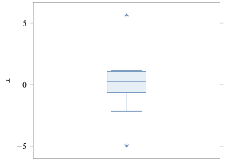
Há muitos outros métodos livres de distribuição82 para uma variedade de situações estatísticas. Embora alguns deles sejam discutidos nos problemas, deixamos um estudo aprofundado desses métodos para cursos mais avançados de estatística.
Resumo da Seção 6.4
- Métodos de inferência estatística livres de distribuição são métodos apropriados quando sentimos que só podemos fazer suposições muito mínimas sobre a distribuição da qual estamos amostrando.
- O método dos momentos, o bootstrap e os métodos de inferência baseados na estatística do sinal são três métodos livres de distribuição aplicáveis em circunstâncias diferentes.
Exercícios
6.4.1 Suponha que obtivemos a amostra a seguir de uma distribuição da qual sabemos que tem os seis primeiros momentos. Determine um intervalo de confiança 0,95 aproximado para \(\mu_3\).
| \(3{,}27\) | \(-1{,}24\) | \(3{,}97\) | \(2{,}25\) | \(3{,}47\) | \(-0{,}09\) | \(7{,}45\) | \(6{,}20\) | \(3{,}74\) | \(4{,}12\) |
|---|---|---|---|---|---|---|---|---|---|
| \(1{,}42\) | \(2{,}75\) | \(-1{,}48\) | \(4{,}97\) | \(8{,}00\) | \(3{,}26\) | \(0{,}15\) | \(-3{,}64\) | \(4{,}88\) | \(4{,}55\) |
6.4.2 Determine o estimador pelo método dos momentos da variância populacional. Esse estimador é não viesado para a variância populacional? Justifique sua resposta.
6.4.3 (Coeficiente de variação) O coeficiente de variação de uma medição populacional com média não nula é dado por \(\sigma/\mu\), em que \(\mu\) é a média populacional e \(\sigma\) é o desvio padrão populacional. Qual é a estimativa pelo método dos momentos do coeficiente de variação? Prove que o coeficiente de variação é invariante por mudanças de escala da distribuição, isto é, por transformações da forma \(T(x) = cx\) com \(c > 0\) constante. É essa invariância que faz do coeficiente de variação uma medida apropriada da variabilidade amostral em certos problemas, já que ele não depende das unidades que usamos para a medição.
6.4.4 No contexto descrito no Exercício 6.4.1, determine um intervalo de confiança 0,95 aproximado para \(\exp(\mu_1)\).
6.4.5 Verifique que o terceiro momento de uma distribuição \(N(\mu, \sigma^2)\) é dado por \(\mu_3 = \mu^3 + 3\mu\sigma^2\). Como a distribuição normal é especificada pelos seus dois primeiros momentos, qualquer característica da distribuição normal pode ser estimada simplesmente substituindo as estimativas de máxima verossimilhança de \(\mu\) e \(\sigma^2\). Compare o estimador pelo método dos momentos de \(\mu_3\) com esse EMV plug-in, isto é, determine se eles são iguais ou não.
6.4.6 Suponha que temos os dados amostrais 1,48; 4,10; 2,02; 56,59; 2,98; 1,51; 76,49; 50,25; 43,52; 2,96. Considere-os uma amostra de uma distribuição normal com média e variância desconhecidas e avalie a hipótese de que a mediana populacional (que, nesse caso, é igual à média) é 3. Faça também um teste do sinal de que a mediana populacional é 3 e compare os resultados. Faça um boxplot desses dados. Ele apoia a suposição de que estamos amostrando de uma distribuição normal? Qual teste você acha mais apropriado? Justifique sua resposta.
6.4.7 Determine a função de distribuição empírica com base na amostra dada a seguir.
| \(1{,}06\) | \(-1{,}28\) | \(0{,}40\) | \(1{,}36\) | \(-0{,}35\) |
|---|---|---|---|---|
| \(-1{,}42\) | \(0{,}44\) | \(-0{,}58\) | \(-0{,}24\) | \(-1{,}34\) |
| \(0{,}00\) | \(-1{,}02\) | \(-1{,}35\) | \(2{,}05\) | \(1{,}06\) |
| \(0{,}98\) | \(0{,}38\) | \(2{,}13\) | \(-0{,}03\) | \(-1{,}29\) |
Usando a fda empírica, determine a mediana amostral, o primeiro e o terceiro quartis e a amplitude interquartil83. Qual é a sua estimativa de \(F(2)\)?
6.4.8 Suponha que você obtém a amostra de \(n = 3\) valores distintos dada por 1, 2 e 3. (a) Escreva todas as amostras bootstrap possíveis.(b) Se você está aplicando o bootstrap à mediana amostral, quais são os valores possíveis da mediana amostral numa amostra bootstrap?(c) Se você está aplicando o bootstrap à média amostral, quais são os valores possíveis da média amostral numa amostra bootstrap?(d) O que você conclui sobre a distribuição bootstrap da mediana amostral em comparação com a distribuição bootstrap da média amostral?
6.4.9 Explique por que o teorema central do limite justifica dizer que a distribuição bootstrap da média amostral é aproximadamente normal quando \(n\) e \(m\) são grandes. Que resultado justifica a normalidade aproximada da distribuição bootstrap de uma função da média amostral sob certas condições?
6.4.10 Para os dados do Exercício 6.4.1, determine um intervalo de confiança 0,95 aproximado para a mediana populacional, supondo que a distribuição da qual estamos amostrando é simétrica, com primeiro e segundo momentos finitos. (Sugestão: use resultados para grandes amostras.)
6.4.11 Suponha que você tem uma amostra de \(n\) valores distintos e está interessado na distribuição bootstrap da amplitude amostral, dada por \(x_{(n)} - x_{(1)}\). Qual é o número máximo de valores que essa estatística pode assumir no conjunto de todas as amostras bootstrap? Quais são o maior e o menor valor que a amplitude amostral pode assumir numa amostra bootstrap? Você acha que a distribuição bootstrap da amplitude amostral será aproximadamente normal? Justifique sua resposta.
6.4.12 Suponha que você obtém os dados 1,1; \(-1{,}0\); 1,1; 3,1; 2,2 e 3,1. Quantas amostras bootstrap distintas existem?
Exercícios computacionais
6.4.13 Para os dados do Exercício 6.4.7, avalie a hipótese de que a mediana populacional é 0. Dê um intervalo de confiança 0,95 para a mediana populacional. Qual é a probabilidade de cobertura exata desse intervalo?
6.4.14 Para os dados do Exercício 6.4.7, avalie a hipótese de que o primeiro quartil da distribuição da qual estamos amostrando é \(-1{,}0\).
6.4.15 Com um tamanho de amostra bootstrap \(m = 1000\), use o bootstrap para estimar o MSE do EMV plug-in de \(\mu_3\) para a distribuição normal, usando os dados amostrais do Exercício 6.4.1. Determine se \(m = 1000\) é uma amostra grande o bastante para resultados precisos.
6.4.16 Para os dados do Exercício 6.4.1, use o EMV plug-in para estimar o primeiro quartil de uma distribuição \(N(\mu, \sigma^2)\). Use o bootstrap para estimar o MSE dessa estimativa para \(m = 10^3\) e \(m = 10^4\) (use (5.5.3) para calcular o primeiro quartil da distribuição empírica).
6.4.17 Para os dados do Exercício 6.4.1, use o EMV plug-in para estimar \(F(3)\) para uma distribuição \(N(\mu, \sigma^2)\). Use o bootstrap para estimar o MSE dessa estimativa para \(m = 10^3\) e \(m = 10^4\).
6.4.18 Para os dados do Exercício 6.4.1, construa um intervalo de confiança 0,95 para \(\mu\) supondo que essa é uma amostra de uma distribuição \(N(\mu, \sigma^2)\). Calcule também um intervalo de confiança 0,95 para \(\mu\) baseado na estatística do sinal, um intervalo de confiança 0,95 bootstrap \(t\) e um intervalo de confiança 0,95 bootstrap percentil, usando \(m = 10^3\) no bootstrap. Compare os quatro intervalos.
6.4.19 Para os dados do Exercício 6.4.1, use o EMV plug-in para estimar o primeiro quintil, isto é, \(x_{0{,}2}\), de uma distribuição \(N(\mu, \sigma^2)\). Faça um histograma de densidade como estimativa da distribuição bootstrap desse estimador para \(m = 10^3\) e calcule um intervalo de confiança 0,95 bootstrap \(t\) para \(x_{0{,}2}\), se você achar apropriado.
6.4.20 Para os dados do Exercício 6.4.1, use o EMV plug-in para estimar \(\mu_3\) de uma distribuição \(N(\mu, \sigma^2)\). Faça um histograma de densidade como estimativa da distribuição bootstrap desse estimador para \(m = 10^3\) e calcule um intervalo de confiança 0,95 bootstrap percentil para \(\mu_3\), se você achar apropriado.
Problemas
6.4.21 Prove que, quando \((x_1, \ldots, x_n)\) é uma amostra de valores distintos de uma distribuição em \(R^1\), o \(i\)-ésimo momento da distribuição empírica em \(R^1\) (isto é, a distribuição com fda dada por \(\hat{F}\)) é \(m_i\).
6.4.22 Suponha que \((x_1, \ldots, x_n)\) é uma amostra de uma distribuição em \(R^1\). Determine a forma geral do \(i\)-ésimo momento de \(\hat{F}\), isto é, ao contrário do Problema 6.4.21, agora permitimos que vários dos valores dos dados sejam iguais.
6.4.23 (Transformações estabilizadoras da variância) Pelo teorema delta, temos que \(\psi(M_1)\) é assintoticamente normal com média \(\psi(\mu_1)\) e variância \((\psi'(\mu_1))^2 \sigma^2/n\) quando \(\psi\) é continuamente diferenciável, \(\psi'(\mu_1) \ne 0\) e \(M_1\) é assintoticamente normal com média \(\mu_1\) e variância \(\sigma^2/n\). Em algumas aplicações, é importante escolher a transformação \(\psi\) de modo que a variância assintótica não dependa da média \(\mu_1\), isto é, que \((\psi'(\mu_1))^2 \sigma^2\) seja constante quando \(\mu_1\) varia (note que \(\sigma^2\) pode mudar quando \(\mu_1\) muda). Essas transformações são conhecidas como transformações estabilizadoras da variância. (a) Se estamos amostrando de uma distribuição Poisson\((\lambda)\), mostre que \(\psi(x) = \sqrt{x}\) é estabilizadora da variância.(b) Se estamos amostrando de uma distribuição Bernoulli\((\theta)\), mostre que \(\psi(x) = \arcsin \sqrt{x}\) é estabilizadora da variância.(c) Se estamos amostrando de uma distribuição em \((0, \infty)\) cuja variância é proporcional ao quadrado da sua média (como a distribuição Gama\((\alpha, \beta)\)), mostre que \(\psi(x) = \ln(x)\) é estabilizadora da variância.
Desafios
6.4.24 Suponha que \(X\) tem uma distribuição absolutamente contínua84 em \(R^1\) com densidade \(f\) simétrica em torno da sua mediana. Supondo que a mediana é 0, prove que \(\lvert X \rvert\) e \[ \operatorname{sgn}(X) = \begin{cases} -1 & x < 0 \\ \phantom{-}0 & x = 0 \\ \phantom{-}1 & x > 0 \end{cases} \] são independentes, com \(\lvert X \rvert\) tendo densidade \(2f\) e \(\operatorname{sgn}(X)\) uniformemente distribuída em \(\{-1, 1\}\).
6.4.25 (Estatística dos desvios com sinal de Fisher) Suponha que \((x_1, \ldots, x_n)\) é uma amostra de uma distribuição absolutamente contínua em \(R^1\) com densidade simétrica em torno da sua mediana. Suponha que queremos avaliar a hipótese \(H_0 : x_{0{,}5}(\theta) = x_0\).
Uma possibilidade para isso é usar o teste dos desvios com sinal de Fisher, baseado na estatística \(S^+\). O valor observado de \(S^+\) é dado por \(S_o^+ = \sum_{i=1}^{n} \lvert x_i - x_0 \rvert \operatorname{sgn}(x_i - x_0)\). Avaliamos então \(H_0\) comparando \(S_o^+\) com a distribuição condicional85 de \(S^+\) dados os desvios absolutos \(\lvert x_1 - x_0 \rvert, \ldots, \lvert x_n - x_0 \rvert\). Se um valor \(S_o^+\) ocorre perto do menor ou do maior valor possível de \(S^+\) sob essa distribuição condicional, afirmamos que temos evidência contra \(H_0\). Medimos isso calculando o valor-p dado pela probabilidade condicional86 de obter um valor tão longe do centro da distribuição condicional de \(S^+\), ou mais longe, usando a média condicional como centro. Este é um exemplo de teste de aleatorização, já que a distribuição da estatística de teste é determinada modificando aleatoriamente os dados observados (neste caso, trocando aleatoriamente os sinais dos desvios dos \(x_i\) em relação a \(x_0\)). (a) Prove que \(S_o^+ = n(\bar{x} - x_0)\).(b) Prove que o valor-p descrito acima não depende de qual distribuição do modelo é aquela da qual estamos amostrando. Prove que a média condicional de \(S^+\) é 0 e que a distribuição condicional de \(S^+\) é simétrica em torno desse valor.(c) Use a estatística do teste dos desvios com sinal de Fisher para avaliar a hipótese \(H_0 : x_{0{,}5}(\theta) = 2\) quando os dados são 2,2; 1,5; 3,4; 0,4; 5,3; 4,3; 2,1, declarando os resultados estatisticamente significativos se o valor-p for menor ou igual a 0,05. (Sugestão: com base nos resultados obtidos no item (b), basta calcular probabilidades para os valores extremos de \(S^+\).)(d) Mostre que usar a estatística do teste dos desvios com sinal de Fisher para avaliar a hipótese \(H_0 : x_{0{,}5}(\theta) = x_0\) é equivalente ao seguinte procedimento aleatorizado de avaliação de hipóteses baseado na estatística do teste \(t\). Para isso, calculamos a distribuição condicional de \[ T = \frac{(\bar{X} - x_0)}{S/\sqrt{n}} \] quando os \(\lvert X_i - x_0 \rvert\) \({}= \lvert x_i - x_0 \rvert\) estão fixados e os \(\operatorname{sgn}(X_i - x_0)\) são i.i.d. uniformes em \(\{-1, 1\}\). Compare o valor observado da estatística \(t\) com essa distribuição, como fizemos para a estatística do teste dos desvios com sinal de Fisher. (Sugestão: mostre que \(\sum_{i=1}^{n} (x_i - \bar{x})^2\) \({}= \sum_{i=1}^{n} (x_i - x_0)^2 - n(\bar{x} - x_0)^2\) e que valores absolutos grandes de \(T\) correspondem a valores absolutos grandes de \(S^+\).)
6.5 Assintótica do EMV (Avançado)
Como vimos nos Exemplos 6.3.7 e 6.3.11, implementar procedimentos amostrais exatos baseados no EMV pode ser difícil. Naqueles exemplos, como o EMV era a média amostral e podíamos usar o teorema central do limite, a teoria de grandes amostras nos permitiu obter procedimentos aproximados. Na verdade, existe uma teoria geral de grandes amostras para o EMV que nos permite obter inferências amostrais aproximadas. Esse é o conteúdo desta seção. Os resultados que desenvolvemos são todos para o caso em que \(\theta\) é unidimensional. Resultados semelhantes existem para os problemas de dimensão maior, mas os deixamos para um curso posterior.
Na Seção 6.3, a questão básica era a necessidade de medir a precisão do EMV. Uma abordagem é traçar o gráfico da verossimilhança e examinar quão concentrada ela está em torno do seu pico, com uma verossimilhança mais concentrada indicando maior precisão do EMV. Há vários problemas com isso. Em particular, a aparência da verossimilhança depende muito de como escolhemos as escalas dos eixos. Com escolhas apropriadas, podemos fazer uma verossimilhança parecer tão concentrada ou tão difusa quanto quisermos. Além disso, quando \(\theta\) tem mais de duas dimensões, não conseguimos nem traçar o gráfico da verossimilhança. Uma solução, quando a verossimilhança é uma função suave de \(\theta\), é calcular uma medida numérica de quão concentrada a log-verossimilhança está no seu pico. A quantidade normalmente usada para isso é chamada de informação de Fisher observada87.
A informação de Fisher observada é dada por \begin{equation} \hat{I}(s) = -\left.\frac{\partial^2 l(\theta \mid s)}{\partial\theta^2}\right|_{\theta = \hat{\theta}(s)}, \tag{6.5.1}\end{equation} em que \(\hat{\theta}(s)\) é o EMV.
Quanto maior for a informação de Fisher observada, mais pontiaguda é a função de verossimilhança no seu valor máximo. Vamos mostrar que a informação de Fisher observada estima uma quantidade de importância considerável na inferência estatística.
Suponha que a resposta \(X\) seja real, que \(\theta\) seja real e que o modelo \(\{f_\theta : \theta \in \negrito{\Omega}\}\) satisfaça as seguintes condições de regularidade: \begin{align} &\frac{\partial^2 \ln f_\theta(x)}{\partial\theta^2} \text{ existe para cada } x, \tag{6.5.2}\\ &E_\theta(S(\theta \mid X)) = \int_{-\infty}^{\infty} \frac{\partial \ln f_\theta(x)}{\partial\theta}\, f_\theta(x)\,dx = 0, \tag{6.5.3}\\ &\int_{-\infty}^{\infty} \frac{\partial}{\partial\theta} \left\{\frac{\partial \ln f_\theta(x)}{\partial\theta}\, f_\theta(x)\right\} dx = 0, \tag{6.5.4} \end{align} e \begin{equation} \int_{-\infty}^{\infty} \left\lvert\frac{\partial^2 \ln f_\theta(x)}{\partial\theta^2}\right\rvert f_\theta(x)\,dx < \infty. \tag{6.5.5}\end{equation}
Observe que temos \[ \frac{\partial f_\theta(x)}{\partial\theta} = \frac{\partial \ln f_\theta(x)}{\partial\theta}\, f_\theta(x), \] de modo que podemos escrever (6.5.3), de forma equivalente, como \[ \int_{-\infty}^{\infty} \frac{\partial f_\theta(x)}{\partial\theta}\,dx = 0. \] Observe também que (6.5.4) pode ser escrita como88 \begin{align*} 0 &= \int_{-\infty}^{\infty} \frac{\partial}{\partial\theta} \left\{\frac{\partial l(\theta \mid x)}{\partial\theta}\, f_\theta(x)\right\} dx\\ &= \int_{-\infty}^{\infty} \left\{\frac{\partial^2 l(\theta \mid x)}{\partial\theta^2} + \left(\frac{\partial l(\theta \mid x)}{\partial\theta}\right)^{2}\right\} f_\theta(x)\,dx\\ &= \int_{-\infty}^{\infty} \left\{\frac{\partial^2 l(\theta \mid x)}{\partial\theta^2} + S^2(\theta \mid x)\right\} f_\theta(x)\,dx = E_\theta\left(\frac{\partial^2 l(\theta \mid x)}{\partial\theta^2} + S^2(\theta \mid X)\right). \end{align*} Isso, junto com (6.5.3) e (6.5.5), implica que podemos escrever (6.5.4), de forma equivalente, como \[ \Var_\theta(S(\theta \mid X)) = E_\theta(S^2(\theta \mid X)) = E_\theta\left(-\frac{\partial^2}{\partial\theta^2}\, l(\theta \mid X)\right). \]
Damos um nome à quantidade da esquerda.
A função \(I(\theta) = \Var_\theta(S(\theta \mid X))\) é chamada de informação de Fisher89 do modelo.
O que desenvolvemos acima demonstrou o seguinte resultado.
Se (6.5.2) e (6.5.3) forem satisfeitas, então \(E_\theta(S(\theta \mid X)) = 0\). Se, além disso, (6.5.4) e (6.5.5) forem satisfeitas, então \[ I(\theta) = \Var_\theta(S(\theta \mid X)) = E_\theta\left(-\frac{\partial^2 l(\theta \mid X)}{\partial\theta^2}\right). \]
Agora vemos por que \(\hat{I}\) é chamada de informação de Fisher observada: ela é uma estimativa natural da informação de Fisher no valor verdadeiro \(\theta\). Observamos que há outra estimativa natural da informação de Fisher no valor verdadeiro, dada por \(I(\hat{\theta})\). Chamamos essa estimativa de informação de Fisher plug-in.
Quando temos uma amostra \((x_1, \ldots, x_n)\) de \(f_\theta\), então \[ S(\theta \mid x_1, \ldots, x_n) = \frac{\partial}{\partial\theta} \ln \prod_{i=1}^{n} f_\theta(x_i) = \sum_{i=1}^{n} \frac{\partial \ln f_\theta(x_i)}{\partial\theta} = \sum_{i=1}^{n} S(\theta \mid x_i). \] Assim, se (6.5.3) vale para o modelo básico, então \(E_\theta(S(\theta \mid X_1, \ldots, X_n))\) \({}= 0\) e (6.5.3) também vale para o modelo amostral90. Além disso, se (6.5.4) vale para o modelo básico, então \begin{align*} 0 &= \sum_{i=1}^{n} E_\theta\left(\frac{\partial^2}{\partial\theta^2} \ln f_\theta(X_i)\right) + \sum_{i=1}^{n} E_\theta(S^2(\theta \mid X_i))\\ &= E_\theta\left(\frac{\partial^2}{\partial\theta^2}\, l(\theta \mid X_1, \ldots, X_n)\right) + \Var_\theta(S(\theta \mid X_1, \ldots, X_n)), \end{align*} o que implica \[ \Var_\theta(S(\theta \mid X_1, \ldots, X_n)) = -E_\theta\left(\frac{\partial^2}{\partial\theta^2}\, l(\theta \mid X_1, \ldots, X_n)\right) = nI(\theta), \] porque \(l(\theta \mid x_1, \ldots, x_n)\) \({}= \sum_{i=1}^{n} \ln f_\theta(x_i)\). Portanto, (6.5.4) também vale para o modelo amostral, e a informação de Fisher do modelo amostral é dada pelo tamanho da amostra vezes a informação de Fisher do modelo básico. Estabelecemos o seguinte resultado.
Sob amostragem i.i.d. de um modelo com informação de Fisher \(I(\theta)\), a informação de Fisher para uma amostra de tamanho \(n\) é dada por \(nI(\theta)\).
As condições necessárias para que o Teorema 6.5.1 se aplique não valem em geral e precisam ser verificadas em cada exemplo. Há, porém, muitos modelos em que essas condições valem.
Se \(X \sim U[0, \theta]\), então \(f_\theta(x) = \theta^{-1} I_{[0, \theta]}(x)\), que não é derivável em \(\theta = x\) para nenhum \(x\). De fato, se ignorássemos a falta de derivabilidade em \(\theta = x\) e escrevêssemos \[ \frac{\partial f_\theta(x)}{\partial\theta} = -\frac{1}{\theta^2}\, I_{[0, \theta]}(x), \] então \[ \int_{-\infty}^{\infty} \frac{\partial f_\theta(x)}{\partial\theta}\,dx = -\int_{-\infty}^{\infty} \frac{1}{\theta^2}\, I_{[0, \theta]}(x)\,dx = -\frac{1}{\theta} \neq 0. \] Portanto, não podemos definir a informação de Fisher para esse modelo.
Suponha que temos uma amostra \((x_1, \ldots, x_n)\) de uma distribuição \(N(\theta, \sigma_0^2)\), em que \(\theta \in R^1\) é desconhecido e \(\sigma_0^2\) é conhecido. Vimos no Exemplo 6.2.2 que \[ S(\theta \mid x_1, \ldots, x_n) = \frac{n}{\sigma_0^2}\,(\bar{x} - \theta) \] e, portanto, \begin{gather*} \frac{\partial^2}{\partial\theta^2}\, l(\theta \mid x_1, \ldots, x_n) = -\frac{n}{\sigma_0^2},\\ nI(\theta) = E_\theta\left(-\frac{\partial^2}{\partial\theta^2}\, l(\theta \mid X_1, \ldots, X_n)\right) = \frac{n}{\sigma_0^2}. \end{gather*} Também determinamos no Exemplo 6.2.2 que o EMV é dado por \(\hat{\theta}(x_1, \ldots, x_n) = \bar{x}\). Então a informação de Fisher plug-in é \[ nI(\bar{x}) = \frac{n}{\sigma_0^2}, \] enquanto a informação de Fisher observada é \[ \hat{I}(x_1, \ldots, x_n) = -\left.\frac{\partial^2 l(\theta \mid x_1, \ldots, x_n)}{\partial\theta^2}\right|_{\theta = \bar{x}} = \frac{n}{\sigma_0^2}. \] Nesse caso, não há necessidade de estimar a informação de Fisher, mas é reconfortante que nossas duas estimativas deem o valor exato.
Enunciamos agora, sem demonstração, alguns teoremas sobre o comportamento do EMV em grandes amostras, sob amostragem repetida do modelo. Primeiro, temos um resultado sobre a consistência do EMV como estimador do valor verdadeiro de \(\theta\).
Sob condições de regularidade (como as especificadas acima) para o modelo \(\{f_\theta : \theta \in \negrito{\Omega}\}\), o EMV \(\hat{\theta}\) existe quase certamente e \(\hat{\theta} \xrightarrow{\text{q.c.}} \theta\) quando \(n \to \infty\).
Veja Approximation Theorems of Mathematical Statistics, de R. J. Serfling (John Wiley & Sons, Nova York, 1980), para a demonstração deste resultado.
Vemos que o Teorema 6.5.2 funciona como uma espécie de lei forte para o EMV. Acontece também que, quando o tamanho da amostra é grande, a distribuição amostral do EMV é aproximadamente normal.
Sob condições de regularidade (como as especificadas acima) para o modelo \(\{f_\theta : \theta \in \negrito{\Omega}\}\), temos \((nI(\theta))^{1/2}(\hat{\theta} - \theta) \xrightarrow{D} N(0, 1)\) quando \(n \to \infty\).
Veja Approximation Theorems of Mathematical Statistics, de R. J. Serfling (John Wiley & Sons, Nova York, 1980), para a demonstração deste resultado.
Vemos que o Teorema 6.5.3 funciona como uma espécie de teorema central do limite para o EMV. Para tornar esse resultado plenamente útil para a inferência, precisamos do seguinte corolário desse teorema.
Quando \(I\) é uma função contínua de \(\theta\), então \[ (nI(\hat{\theta}))^{1/2}(\hat{\theta} - \theta) \xrightarrow{D} N(0, 1). \]
No Corolário 6.5.2, estimamos a informação de Fisher \(I(\theta)\) pela estimativa de Fisher plug-in \(I(\hat{\theta})\). Muitas vezes, é muito difícil calcular a função \(I\). Nesse caso, estimamos \(nI(\theta)\) pela informação de Fisher observada \(\hat{I}(x_1, \ldots, x_n)\). Um resultado como o Corolário 6.5.2 continua valendo nesse caso.
A partir do Corolário 6.5.2, podemos construir métodos de inferência aproximados para grandes amostras baseados no EMV. Por exemplo, o erro padrão aproximado do EMV é \[ (nI(\hat{\theta}))^{-1/2}. \] Um intervalo de confiança \(\gamma\) aproximado é dado por \[ \hat{\theta} \pm (nI(\hat{\theta}))^{-1/2} z_{(1+\gamma)/2}. \] Por fim, se quisermos avaliar a hipótese \(H_0 : \theta = \theta_0\), podemos fazê-lo calculando o valor-p aproximado \[ 2\left\{1 - \Phi\left((nI(\theta_0))^{1/2}\,\lvert\hat{\theta} - \theta_0\rvert\right)\right\}. \] Observe que estamos usando o Teorema 6.5.3 para o valor-p, e não o Corolário 6.5.2, pois, quando \(H_0\) é verdadeira, sabemos que a variância assintótica do EMV é \((nI(\theta_0))^{-1}\). Assim, não precisamos estimar essa quantidade.
Quando calcular \(I\) é difícil, podemos substituir \(nI(\hat{\theta})\) por \(\hat{I}(x_1, \ldots, x_n)\) nas expressões acima do intervalo de confiança e do valor-p. Agora vemos com muita clareza a importância da informação observada. Naturalmente, à medida que passamos de \(nI(\theta)\) para \(nI(\hat{\theta})\) e depois para \(\hat{I}(x_1, \ldots, x_n)\), esperamos precisar de tamanhos de amostra \(n\) maiores para que a aproximação normal seja precisa.
Consideramos alguns exemplos.
Usando a informação de Fisher obtida no Exemplo 6.5.2, o intervalo de confiança \(\gamma\) aproximado baseado no EMV é \[ \hat{\theta} \pm (nI(\hat{\theta}))^{-1/2} z_{(1+\gamma)/2} = \bar{x} \pm (\sigma_0/\sqrt{n})\, z_{(1+\gamma)/2}. \] Esse é exatamente o intervalo de confiança \(z\) obtido no Exemplo 6.3.6. Em vez de ser um intervalo de confiança \(\gamma\) aproximado, a cobertura é exata nesse caso. Da mesma forma, o valor-p aproximado corresponde ao teste \(z\), e o valor-p é exato.
Suponha que \((x_1, \ldots, x_n)\) seja uma amostra de uma distribuição \(\text{Bernoulli}(\theta)\), em que \(\theta \in [0, 1]\) é desconhecido. A função de verossimilhança é dada por \[ L(\theta \mid x_1, \ldots, x_n) = \theta^{n\bar{x}}\,(1 - \theta)^{n(1 - \bar{x})}, \] e o EMV de \(\theta\) é \(\bar{x}\). A log-verossimilhança é \[ l(\theta \mid x_1, \ldots, x_n) = n\bar{x} \ln\theta + n(1 - \bar{x}) \ln(1 - \theta), \] a função escore é dada por \[ S(\theta \mid x_1, \ldots, x_n) = \frac{n\bar{x}}{\theta} - \frac{n(1 - \bar{x})}{1 - \theta}, \] e \[ \frac{\partial}{\partial\theta}\, S(\theta \mid x_1, \ldots, x_n) = -\frac{n\bar{x}}{\theta^2} - \frac{n(1 - \bar{x})}{(1 - \theta)^2}. \]
Portanto, a informação de Fisher para a amostra é \begin{align*} nI(\theta) &= E_\theta\left(-\frac{\partial}{\partial\theta}\, S(\theta \mid X_1, \ldots, X_n)\right)\\ &= E_\theta\left(\frac{n\bar{X}}{\theta^2} + \frac{n\left(1 - \bar{X}\right)}{(1 - \theta)^2}\right) = \frac{n}{\theta(1 - \theta)}, \end{align*} e a informação de Fisher plug-in é \[ nI(\bar{x}) = \frac{n}{\bar{x}(1 - \bar{x})}. \] Observe que, nesse caso, a informação de Fisher plug-in é igual à informação de Fisher observada.
Assim, um intervalo de confiança \(\gamma\) aproximado é dado por \[ \hat{\theta} \pm (nI(\hat{\theta}))^{-1/2} z_{(1+\gamma)/2} = \bar{x} \pm z_{(1+\gamma)/2} \sqrt{\bar{x}(1 - \bar{x})/n}, \] que é exatamente o intervalo obtido no Exemplo 6.3.7 usando considerações de grandes amostras baseadas no teorema central do limite. Da mesma forma, obtemos o mesmo valor-p do Exemplo 6.3.11 ao testar \(H_0 : \theta = \theta_0\).
Suponha que \((x_1, \ldots, x_n)\) seja uma amostra de uma distribuição \(\text{Poisson}(\lambda)\), em que \(\lambda > 0\) é desconhecido. A função de verossimilhança é dada por \[ L(\lambda \mid x_1, \ldots, x_n) = \lambda^{n\bar{x}} e^{-n\lambda}. \] A log-verossimilhança é \[ l(\lambda \mid x_1, \ldots, x_n) = n\bar{x} \ln\lambda - n\lambda, \] a função escore é dada por \[ S(\lambda \mid x_1, \ldots, x_n) = \frac{n\bar{x}}{\lambda} - n, \] e \[ \frac{\partial}{\partial\lambda}\, S(\lambda \mid x_1, \ldots, x_n) = -\frac{n\bar{x}}{\lambda^2}. \] Daí deduzimos que o EMV de \(\lambda\) é \(\hat{\lambda} = \bar{x}\).
Portanto, a informação de Fisher para a amostra é \[ nI(\lambda) = E_\lambda\left(-\frac{\partial}{\partial\lambda}\, S(\lambda \mid X_1, \ldots, X_n)\right) = E_\lambda\left(\frac{n\bar{X}}{\lambda^2}\right) = \frac{n}{\lambda}, \] e a informação de Fisher plug-in é \[ nI(\bar{x}) = \frac{n}{\bar{x}}. \] Observe que, nesse caso, a informação de Fisher plug-in é igual à informação de Fisher observada.
Assim, um intervalo de confiança \(\gamma\) aproximado é dado por \[ \hat{\lambda} \pm (nI(\hat{\lambda}))^{-1/2} z_{(1+\gamma)/2} = \bar{x} \pm z_{(1+\gamma)/2} \sqrt{\bar{x}/n}. \] Da mesma forma, o valor-p aproximado para testar \(H_0 : \lambda = \lambda_0\) é dado por \begin{align*} 2\left\{1 - \Phi\left((nI(\lambda_0))^{1/2}\,\lvert\hat{\lambda} - \lambda_0\rvert\right)\right\} = 2\left\{1 - \Phi\left((n/\lambda_0)^{1/2}\,\lvert\bar{x} - \lambda_0\rvert\right)\right\}. \end{align*} Observe que usamos a informação de Fisher avaliada em \(\lambda_0\) para esse teste.
Resumo da Seção 6.5
- Sob condições de regularidade sobre o modelo estatístico com parâmetro \(\theta\), podemos definir a informação de Fisher \(I(\theta)\) do modelo.
- Sob condições de regularidade sobre o modelo estatístico, pode-se provar que, quando \(\theta\) é o valor verdadeiro do parâmetro, o EMV é consistente para \(\theta\) e tem distribuição aproximadamente normal, com média dada por \(\theta\) e variância dada por \((nI(\theta))^{-1}\).
- A informação de Fisher \(I(\theta)\) pode ser estimada substituindo-se o EMV (plug-in) ou usando a informação de Fisher observada. Essas estimativas levam a inferências sobre \(\theta\) úteis na prática em muitos problemas.
Exercícios
6.5.1 Se \((x_1, \ldots, x_n)\) é uma amostra de uma distribuição \(N(\mu_0, \sigma^2)\), em que \(\mu_0\) é conhecido e \(\sigma^2 \in (0, \infty)\) é desconhecido, determine a informação de Fisher.
6.5.2 Se \((x_1, \ldots, x_n)\) é uma amostra de uma distribuição \(\text{Gama}(\alpha_0, \theta)\), em que \(\alpha_0\) é conhecido e \(\theta \in (0, \infty)\) é desconhecido, determine a informação de Fisher.
6.5.3 Se \((x_1, \ldots, x_n)\) é uma amostra de uma distribuição \(\text{Pareto}(\alpha)\) (veja o Exercício 6.2.9), em que \(\alpha > 0\) é desconhecido, determine a informação de Fisher.
6.5.4 Suponha que o número de chamadas que chegam a uma central de atendimento telefônico durante uma certa hora do dia seja \(\text{Poisson}(\lambda)\), em que \(\lambda \in (0, \infty)\) é desconhecido. O número de chamadas efetivamente recebidas nessa hora foi registrado durante 20 dias, e foram obtidos os seguintes dados.
| 9 | 10 | 8 | 12 | 11 | 12 | 5 | 13 | 9 | 9 |
|---|---|---|---|---|---|---|---|---|---|
| 7 | 5 | 16 | 13 | 9 | 5 | 13 | 8 | 9 | 10 |
Construa um intervalo de confiança 0,95 aproximado para \(\lambda\). Avalie a hipótese de que essa é uma amostra de uma distribuição \(\text{Poisson}(11)\). Se você vai decidir que a hipótese é falsa quando o valor-p for menor que 0,05, calcule um poder aproximado para esse procedimento quando \(\lambda = 10\).
6.5.5 Suponha que se saiba que os tempos de vida, em horas, das lâmpadas de um processo de fabricação têm distribuição \(\text{Gama}(2, \theta)\), em que \(\theta \in (0, \infty)\) é desconhecido. Foi retirada uma amostra aleatória de 27 lâmpadas, e seus tempos de vida foram medidos, obtendo-se os seguintes dados.
| 336,87 | 2750,71 | 2199,44 | 292,99 | 1835,55 | 1385,36 | 2690,52 |
|---|---|---|---|---|---|---|
| 710,64 | 2162,01 | 1856,47 | 2225,68 | 3524,23 | 2618,51 | 361,68 |
| 979,54 | 2159,18 | 1908,94 | 1397,96 | 914,41 | 1548,48 | 1801,84 |
| 1016,16 | 1666,71 | 1196,42 | 1225,68 | 2422,53 | 753,24 |
Determine um intervalo de confiança 0,90 aproximado para \(\theta\).
6.5.6 Repita a análise do Exercício 6.5.5, mas agora suponha que os tempos de vida têm distribuição \(\text{Gama}(1, \theta)\). Comente as diferenças entre as duas análises.
6.5.7 Suponha que, para uma determinada população, as rendas (medidas em milhares de dólares) acima de US$ 20 mil possam ser supostas com distribuição \(\text{Pareto}(\alpha)\), em que \(\alpha > 0\) é desconhecido. Uma amostra de tamanho 20 é retirada da população, e os seguintes dados são obtidos.
| 21,265 | 20,857 | 21,090 | 20,047 | 20,019 | 32,509 | 21,622 | 20,693 |
|---|---|---|---|---|---|---|---|
| 20,109 | 23,182 | 21,199 | 20,035 | 20,084 | 20,038 | 22,054 | 20,190 |
| 20,488 | 20,456 | 20,066 | 20,302 |
Construa um intervalo de confiança 0,95 aproximado para \(\alpha\). Avalie a hipótese de que a renda média nessa população é US$ 25 mil.
6.5.8 Suponha que \((x_1, \ldots, x_n)\) seja uma amostra de uma distribuição \(\text{Exponencial}(\theta)\). Construa um intervalo de confiança \(\gamma\) unilateral à esquerda aproximado para \(\theta\). (Veja o Problema 6.3.25.)
6.5.9 Suponha que \((x_1, \ldots, x_n)\) seja uma amostra de uma distribuição \(\text{Geométrica}(\theta)\). Construa um intervalo de confiança \(\gamma\) unilateral à esquerda aproximado para \(\theta\). (Veja o Problema 6.3.25.)
6.5.10 Suponha que \((x_1, \ldots, x_n)\) seja uma amostra de uma distribuição \(\text{Binomial Negativa}(r, \theta)\). Construa um intervalo de confiança \(\gamma\) unilateral à esquerda aproximado para \(\theta\). (Veja o Problema 6.3.25.)
Problemas
6.5.11 No Exercício 6.5.1, verifique que (6.5.2), (6.5.3), (6.5.4) e (6.5.5) são satisfeitas.
6.5.12 No Exercício 6.5.2, verifique que (6.5.2), (6.5.3), (6.5.4) e (6.5.5) são satisfeitas.
6.5.13 No Exercício 6.5.3, verifique que (6.5.2), (6.5.3), (6.5.4) e (6.5.5) são satisfeitas.
6.5.14 Suponha que a amostragem do modelo \(\{f_\theta : \theta \in \negrito{\Omega}\}\) satisfaça (6.5.2), (6.5.3), (6.5.4) e (6.5.5). Prove que \(n^{-1}\hat{I} \xrightarrow{\text{q.c.}} I(\theta)\) quando \(n \to \infty\).
6.5.15 (MV) Quando \(\theta = (\theta_1, \theta_2)\), então, sob condições de regularidade apropriadas para o modelo \(\{f_\theta : \theta \in \negrito{\Omega}\}\), a matriz de informação de Fisher é definida por \[ I(\theta) = \begin{pmatrix} E_\theta\left(-\frac{\partial^2}{\partial\theta_1^2}\, l(\theta \mid X)\right) & E_\theta\left(-\frac{\partial^2}{\partial\theta_1 \partial\theta_2}\, l(\theta \mid X)\right)\\[2ex] E_\theta\left(-\frac{\partial^2}{\partial\theta_1 \partial\theta_2}\, l(\theta \mid X)\right) & E_\theta\left(-\frac{\partial^2}{\partial\theta_2^2}\, l(\theta \mid X)\right) \end{pmatrix}. \] Se \((X_1, X_2, X_3) \sim \text{Multinomial}(1, \theta_1, \theta_2, \theta_3)\) (Exemplo 6.1.5), determine a informação de Fisher para esse modelo. Lembre que \(\theta_3 = 1 - \theta_1 - \theta_2\) e, portanto, é determinado por \((\theta_1, \theta_2)\).
6.5.16 (MV) Generalize o Problema 6.5.15 para o caso em que \[ (X_1, \ldots, X_k) \sim \text{Multinomial}(1, \theta_1, \ldots, \theta_k). \]
6.5.17 (MV) Usando a definição da matriz de informação de Fisher do Exercício 6.5.15, determine a informação de Fisher para o modelo \(\text{Normal Bivariada}(\mu_1, \mu_2, 1, 1, 0)\), em que \(\mu_1, \mu_2 \in R^1\) são desconhecidos.
6.5.18 (MV) Estendendo a definição do Exercício 6.5.15 para o caso tridimensional, determine a informação de Fisher para o modelo \(\text{Normal Bivariada}(\mu_1, \mu_2, \sigma^2, \sigma^2, 0)\), em que \(\mu_1, \mu_2 \in R^1\) e \(\sigma^2 > 0\) são desconhecidos.
Desafios
6.5.19 Suponha que o modelo \(\{f_\theta : \theta \in \negrito{\Omega}\}\) satisfaça (6.5.2), (6.5.3), (6.5.4) e (6.5.5) e tenha informação de Fisher \(I(\theta)\). Se \(\Psi : \negrito{\Omega} \to R^1\) é injetora e \(\Psi\) e \(\Psi^{-1}\) são continuamente deriváveis, então, tomando \(\Upsilon = \{\Psi(\theta) : \theta \in \negrito{\Omega}\}\), prove que o modelo dado por \(\{g_\psi : \psi \in \Upsilon\}\) satisfaz as condições de regularidade e que sua informação de Fisher em \(\psi\) é dada por \(I(\Psi^{-1}(\psi))((\Psi^{-1})'(\psi))^2\).
Tópicos para discussão
6.5.20 Os métodos de inferência pelo método dos momentos discutidos na Seção 6.4.1 são, essencialmente, métodos de grandes amostras baseados no teorema central do limite. Os métodos de grandes amostras da Seção 6.5 se baseiam na forma da função de verossimilhança. Quais métodos você acha que têm mais chance de estar corretos quando sabemos muito pouco sobre a forma da distribuição da qual estamos amostrando? Em que sentido sua escolha será “mais correta”?
Notas do capítulo
- Termo função de verossimilhança — no original, likelihood function ↩
- Termo verossimilhança — no original, likelihood ↩
- Termo função de probabilidade — no original, probability function ↩
- Termo espaço paramétrico — no original, parameter space ↩
- Termo distribuição uniforme — no original, uniform distribution ↩
- Termo estimativa — no original, estimate ↩
- Termo princípio da verossimilhança — no original, likelihood principle ↩
- Nota do tradutor No original, os integrandos estão escritos como \(f_{\theta_1}(s)\,dx\) e \(f_{\theta_2}(s)\,dx\), com \(s\) no lugar da variável de integração \(x\); reproduzido como impresso. ↩
- Nota do autor Observe, porém, que sempre que estivermos numa situação em que \(f_{\theta_1}(s) = f_{\theta_2}(s)\), ainda poderíamos ter \(P_{\theta_1}(V) > P_{\theta_2}(V)\) para todo \(V\) que contenha \(s\) e seja suficientemente pequeno. Isso implica que \(\theta_1\) é mais sustentado que \(\theta_2\), em vez de esses dois valores terem igual suporte, como indica a verossimilhança. Esse fenômeno não ocorre nos exemplos que discutimos, de modo que o ignoraremos aqui. ↩
- Termo modelo normal de locação — no original, location normal model ↩
- Termo intervalo de verossimilhança — no original, likelihood interval ↩
- Termo variância — no original, variance ↩
- Termo variável resposta — no original, response variable ↩
- Termo estatística suficiente — no original, sufficient statistic ↩
- Termo espaço amostral — no original, sample space ↩
- Termo teorema da fatoração — no original, factorization theorem ↩
- Termo estatística suficiente minimal — no original, minimal sufficient statistic ↩
- Termo modelo normal de locação e escala — no original, location-scale normal model ↩
- Termo estritamente crescente — no original, strictly increasing ↩
- Termo injetora — no original, one-to-one ↩
- Termo tamanho da amostra — no original, sample size ↩
- Termo razão de verossimilhança — no original, likelihood ratio ↩
- Termo estatísticas de ordem — no original, order statistics ↩
- Termo estimação — no original, estimation ↩
- Termo estimador de máxima verossimilhança — no original, maximum likelihood estimator ↩
- Termo log-verossimilhança — no original, log-likelihood ↩
- Termo função escore — no original, score function ↩
- Termo equação escore — no original, score equation ↩
- Termo tempo de vida — no original, lifelength ↩
- Termo cota superior — no original, upper bound ↩
- Termo fórmula de Bhaskara — no original, quadratic formula ↩
- Nota do tradutor O original passa a escrever \(s_1, \ldots, s_n\) em vez de \(x_1, \ldots, x_n\) nesta fórmula e na seguinte; mantido como impresso. ↩
- Termo complementar — no original, complement ↩
- Termo esperança — no original, expectation ↩
- Nota do tradutor O original traz \(\partial S(\theta \mid x_1, \ldots, x_n)\) nas derivadas da primeira linha; pela definição da função escore seria \(\partial l\). Na segunda linha, o original traz “\(+ -\frac{n-1}{2\sigma^4}s^2\)”; pela conta (e como na equação escore logo abaixo), seria \(+\frac{n-1}{2\sigma^4}s^2\). Mantido como impresso. ↩
- Termo distribuição Log-normal — no original, Log-normal distribution ↩
- Termo distribuição amostral — no original, sampling distribution ↩
- Termo erro quadrático médio — no original, mean-squared error ↩
- Nota do tradutor O original abre os parênteses assim no primeiro membro; pelo resto da conta seria \(E_\theta((T - \psi(\theta))^2)\). ↩
- Termo não viesado — no original, unbiased ↩
- Termo desvio padrão — no original, standard deviation ↩
- Termo erro padrão — no original, standard error ↩
- Nota do tradutor O original traz \(\mathrm{MSE}_\theta\) no primeiro membro; pelo texto, seria a estimativa \(\mathrm{MSE}_{\hat{\theta}}(\bar{X})\). ↩
- Termo quase certamente — no original, almost surely ↩
- Termo intervalo de confiança — no original, confidence interval ↩
- Termo região de confiança — no original, confidence region ↩
- Nota do tradutor O original traz \(c\) como limite superior no segundo membro da segunda linha; pela conta seria \(k^*\). ↩
- Termo função de distribuição acumulada — no original, cumulative distribution function ↩
- Termo semicomprimento — no original, half-length ↩
- Termo teorema central do limite — no original, central limit theorem ↩
- Termo avaliação de hipóteses — no original, hypothesis assessment ↩
- Termo hipótese nula — no original, null hypothesis ↩
- Termo tratamento — no original, treatment ↩
- Termo teste de hipóteses — no original, hypothesis testing ↩
- Termo lei forte dos grandes números — no original, strong law of large numbers ↩
- Termo estatisticamente significativo — no original, statistically significant ↩
- Termo unilateral — no original, one-sided ↩
- Termo variável aleatória — no original, random variable ↩
- Termo parâmetro de perturbação — no original, nuisance parameter ↩
- Termo planejamento de experimentos — no original, design of experiments ↩
- Termo função poder — no original, power function ↩
- Termo significativo na prática — no original, practically significant ↩
- Termo bilateral — no original, two-sided ↩
- Nota do tradutor com \(n = 785\) o lado esquerdo de (6.3.12) vale cerca de 0,80; para chegar a 0,99 seria preciso \(n = 1838\). O valor 785 corresponde a \(\beta_0 = 0{,}80\). ↩
- Nota do tradutor assim no original: o “\(< \alpha\)” aparece dentro dos colchetes; pelo Exemplo 6.3.18 seria \(P_\theta\bigl(2\bigl[1 - \Phi(\lvert\cdot\rvert)\bigr] < \alpha\bigr)\). ↩
- Nota do tradutor assim no original; como \(\sigma_0\) é desvio padrão no Exemplo 6.3.18, seria \(\sigma_0 = \sqrt{\theta(1 - \theta)}\). ↩
- Nota do tradutor assim no original; como a variância é desconhecida, seria \(s/\sqrt{n}\) no lugar de \(\sigma_0/\sqrt{n}\). ↩
- Termo verificação de modelos — no original, model checking ↩
- Termo método dos momentos — no original, method of moments ↩
- Termo teorema delta — no original, delta theorem ↩
- Termo função de distribuição empírica — no original, empirical distribution function ↩
- Termo bootstrap — no original, bootstrapping ↩
- Termo mediana amostral — no original, sample median ↩
- Termo intervalo de confiança bootstrap percentil — no original, bootstrap percentile confidence interval ↩
- Termo amostra bootstrap — no original, bootstrap sample ↩
- Nota do tradutor o original diz “Exemplo 6.4.1” aqui e no parágrafo seguinte, mas os dados (\(n = 15\)) são os do Exemplo 6.4.2. ↩
- Nota do tradutor o original traz “\(+\)”; pelo intervalo obtido, seria “\(\pm\)”. ↩
- Termo teste do sinal — no original, sign test ↩
- Termo correção de continuidade — no original, correction for continuity ↩
- Termo estatística do sinal — no original, sign statistic ↩
- Nota do tradutor o original traz \([-0{,}16;\ 1{,}15)\); pelos dados ordenados, \(x_{(2)} = -2{,}13\) (\(-0{,}16\) é \(x_{(3)}\)), e o intervalo seria \([-2{,}13;\ 1{,}15)\). ↩
- Termo métodos livres de distribuição — no original, distribution-free methods ↩
- Termo amplitude interquartil — no original, interquartile range ↩
- Termo absolutamente contínua — no original, absolutely continuous ↩
- Termo distribuição condicional — no original, conditional distribution ↩
- Termo probabilidade condicional — no original, conditional probability ↩
- Termo informação de Fisher observada — no original, observed Fisher information ↩
- Nota do tradutor Na última linha, o original traz \(l(\theta \mid x)\) com \(x\) minúsculo dentro de \(E_\theta\); pela conta seria \(l(\theta \mid X)\). ↩
- Termo informação de Fisher — no original, Fisher information ↩
- Termo modelo amostral — no original, sampling model ↩